Managing Threads
std::thread
C++线程通过类std::thread来实现。有以下特点：
- std::thread通过获得一个callable object（作为线程入口）构造。
- 当std::thread构造完成时，新线程开始运作。
- 当std::thread被销毁之前，必须手动保证其相关线程是join还是detach，否则触发std::terminate。
- 在决定join or detach之前，线程可能已经工作完毕。
- 如果一个线程是detach的，即使std::thread被销毁，线程也可以继续工作，但必须要保证线程所用的内存数据可用。
ensure that the data accessed by the thread is valid
在整个线程的工作中，线程访问的数据必须是合法的，这一点和初始线程（以main为入口）一样。但这一点在多线程中更加复杂。
struct func{
int& i;
func(int& i_):i(i_){}
void operator()(){
for(unsigned j=0;j<1000000;++j){
do_something(i);
}
}
};
void oops() {
int some_local_state=0;
func my_func(some_local_state);
std::thread my_thread(my_func);
my_thread.detach();
}
如上错误代码，my_func是一个callable object，其引用成员i绑定了一个局部变量some_local_state。然后my_thread使用my_func构造了一个新的线程并且detach。新线程中的引用i依旧指向局部变量some_local_state，如果oops先于新线程结束，并且销毁了局部变量，则新线程出现未定义行为。 最简单的办法就是避免callable object拷贝这些变量而不是和外部共享这些变量。在建立新线程时必须要注意callable object是否包含有shared data。
join or detach
join就是等待线程完全结束，当线程结束时，线程相关的数据都会被销毁，对象std::thread和线程不再存在关系，即单个线程只能join一次，方法joinable会返回false。
当std::thread被销毁之前，必须对其joinable进行检查，不论其是由于正常还是异常遭到销毁：
struct func; // callable obj.
void f(){
int local_state = 0;
func my_func(local_state);
std::thread t(my_func);
try{
do_something();
}
catch(...){
t.join();
throw;
}
t.join();
}
或者使用RAII风格的guard，避免了与异常打交道：
class thread_guard{
public:
thread_guard(std::thread& _t):t(_t) {};
thread_guard(const thread_guard&) = delete;
thread_guard& opetator=(const thread_guard&) = delete;
~thread_guard(){
if(t.joinable()){
t.join();
}
}
private:
std::thread& t;
};
struct func; // callable obj.
void f(){
int local_state = 0;
func my_func(local_state);
std::thread t(my_func);
thread_guard g(t);
do_something();
}
detach就是使得线程与对象std::thread脱离关系，脱离之后将无法再在初线程中通过std::thread管理该线程，对象std::thread的方法joinable将会返回false。通过detach可以实现后台进程，后台进程依赖C++ Runtime脱离初线程自行运作。
Passing arguments to a thread function
std::thread的构造函数可以通过额外可变参数的方式来传递参数给其关联的线程函数：
void foo(int i, const string& s);
std::thread t(foo, 1, "123");
但是值得注意的是，不管线程函数的参数列表如何表达，传入的额外参数总是“拷贝”的形式传给线程函数。以上代码看上去相当于调用了：
foo(1, "123");
但是实际上，通过std::thread的构造函数先按“拷贝”的方式将“123”的指针（类型为const char*）传入内部。见如下代码：
void f(int i,std::string const& s);
void oops(int some_param){
char buffer[1024];
sprintf(buffer, "%i",some_param);
std::thread t(f,3,buffer);
t.detach();
}
std::thread对象t的构造将参数buffer（类型为 char*）拷贝传入线程内部。线程函数f将会调用该指针副本构造函数参数std::string。但是构造std::string的时候指针副本所指向的buffer不一定还存在，初线程可能已经跳出oops并且销毁了栈数组buffer。线程将出现未定义行为。防止这类未定义行为的解决方案即在buffer尚未销毁前，构造string：
void f(int i,std::string const& s);
void oops(int some_param){
char buffer[1024];
sprintf(buffer, "%i",some_param);
std::thread t(f,3,std::string(buffer));
t.detach();
}
同样存在希望新线程能够改变初线程的状态，这时期望传入引用：
void update_data_for_widget(widget_id w,widget_data& data);
void oops_again(widget_id w){
widget_data data;
std::thread t(update_data_for_widget,w,data);
display_status();
t.join();
process_widget_data(data);
}
由于std::thread的构造函数复制了widget_data对象data，函数update_data_for_widget更新的是widget_data对象的副本。std::thread的应用情景很像std::bind，解决方案就是使用std::ref：
std::thread t(update_data_for_widget,w,std::ref(data));
这样以来std::thread的构造函数将会将data的引用而不是副本传入内部线程。
std::thread对于线程函数的处理机制和std::bind是一样的，比如将成员函数作为线程函数：
class X {
public:
void func();
};
X x;
thread t(&X::pp,&x);
另一个应用场景是当传入参数只可以move，而不可以copy的情况，比如std::unique_ptr:
void func(std::unique_ptr<X> pX);
std::unique_ptr<X> pX = make_unique<X>();
std::thread(func, std::move(pX));
这样pX所有的对象将会通过move的方式传入线程存储，再传给线程函数。值得注意的是，std::thread也是一种move-only类型，因为其管理一定资源，因此一个线程只能与一个std::thread关联。
Transferring ownership of a thread
std::thread对象是moveable的，当希望在两个对象之间传递对于线程的管理权限，比如函数内部生成了一个线程，但希望在函数结束后能够继续管理这个线程，就需要将线程的管理权传递给外层的std::thread。
转移线程所有权的操作通过std::thread的移动构造函数和移动复制操作符实现，但一个std::thread实例只能维护一个线程，否则将会终止程序：
std::thread g(){
void some_other_function(int);
std::thread t(some_other_function,42);
return t;
}
void f(std::thread t);
void some_func();
f(std::thread(some_func));
std::thread t(some_func);
f(std::move(t));
由于std::thread可以move，thread_guard也可以完全持有std::thread，而不用引用来管理thread：
class scoped_thread{
public:
scoped_thread(std::thread _t) :t(std::move(_t){
if(!t.joinable())
throw std::logic_error("no associated thread!");
}
scoped_thread(const scoped_thread&) = delete;
scoped_thread& operator=(const scoped_thread&) = delete;
~scoped_thread(){
if(t.joinable)
t.join();
}
private:
std::thread t;
}
可以使用容器管理线程：
void func(i);
void f(){
std::vector<std::thread> threads;
for(int i = 0; i < 10; ++i) {
threads.emplace_back(func,i); // direct construct thread.
// threads.push_back(std::thread(func,i)); // move temp thread object to vector.
}
for(auto&& t : threads) {
if(t.joinable())
t.join();
}
}
Choosing the number of threads at runtime
hardware_concurrency可以获取当前硬件可以进行的并行处理线程数量。如下实现一个并行加法：
template <typename Iterator>
struct parallel_accumulate_block {
void operator()(const Iterator& _begin, const Iterator& _end, typename Iterator::value_type& _result) {
_result = std::accumulate(_begin, _end, static_cast<typename Iterator::value_type>(0));
}
};
template <typename Iterator>
typename Iterator::value_type parallel_accumulate(const Iterator& _begin,
const Iterator& _end,
typename Iterator::value_type _init) {
auto arraySize = std::distance(_begin, _end);
if(!arraySize)
return _init;
const unsigned int MinPerThread = 25;
auto maxThread = (arraySize + MinPerThread - 1) / MinPerThread;
auto numHardwareThread = std::thread::hardware_concurrency();
auto numThread = std::min(numHardwareThread != 0?numHardwareThread:1, maxThread);
auto blockSize = arraySize / numThread;
std::vector<std::thread> threads;
std::vector<typename Iterator::value_type> results;
threads.reserve(numThread - 1);
results.resize(numThread);
auto iterBlockBegin = _begin;
auto iterBlockEnd = iterBlockBegin;
for(unsigned int i = 0; i < numThread - 1; i++) {
std::advance(iterBlockEnd, blockSize);
threads.emplace_back(parallel_accumulate_block<Iterator>(), iterBlockBegin, iterBlockEnd, std::ref(results[i]));
std::advance(iterBlockBegin, blockSize);
}
parallel_accumulate_block<Iterator>()(iterBlockBegin, _end, results[numThread - 1]);
std::for_each(threads.begin(), threads.end(), std::mem_fn(&std::thread::join));
return std::accumulate(cbegin(results), cend(results), static_cast<typename Iterator::value_type>(_init));
}
值得注意的是，上述并行加法的实现对传入数据和迭代器具有一定要求：
- 传入的数据类型的加法计算要求必须是没有特定结合性要求的。
- std::accumulate要求的迭代器是InputIterator，而parallel_accumulate要求是ForwardIterator。
Identifying threads
std::thread通过std::thread::id来标识一个线程，std::thread::id通过默认构造指代一个无关联线程的std::thread，并且提供比较操作符，因此可以用于关联容器的键值、排序、比较等操作。
std::thread::id masterThreadId;
void func() {
if(std::this_thread::get_id == masterThreadId) {
do_something();
}
do_otherthing();
}
Share Date Protection
Problem with sharing data between threads and race condition
当多个线程的共享数据是只读readonly的情况，是不会产生额外要分析的问题的。但当多个线程其中包含又对共享数据写权限的线程时候，就会产生额外的问题。
在编程过程中，往往有许多不变式invariants帮助我们理解代码的含义，但是这种不变式往往会在数值更新时被破坏，越是复杂的数据类型，越是在更新时进行多的操作的类型，这个破坏不变式的过程越容易在多线程编程中引发问题。
比如一个双向链表doubly linked list包含不定式：
- 节点A的后向指针指向节点B，则有节点B的前向指针指向节点A。
在某些链表操作就会短时间内破坏这个不定式，如删除节点N：
- 找到节点N
- 将节点N的前节点的后向指针指向节点N的后节点
- 将节点N的后节点的前向指针指向节点N的前节点
- 删除节点N
在步骤2-3之间，双向链表的一个重要的不定式被破坏。若在其他线程的逻辑中有用到该不定式的代码，该代码将会产生未定义后果。
这是在并发编程中常见的BUG原因：race condition，也称data race。
Race condition and avoiding problematic race conditions
race condition通常指代那些会导致BUG的竞争条件，其带来的BUG通常是未定义行为。
race condition主要是各线程对共享数据的修改导致的。其带来的BUG对时间十分敏感，在DEBUG的模式下很容易被忽略。当修改操作被连续的计算机指令执行时，race condition的概率较低；随着计算机负荷的上升，有问题的竞争操作的发生概率也随之提高。
解决race condition的主要办法有以下几种：
- 使用保护机制封装共享数据，保证只有一个线程能改变数据并且其他线程只能在该操作尚未发生或者已经结束的情况下访问数据，即mutex。
- 改造共享数据结构的设计，使得该结构进行的修改操作不会破坏数据结构的不变性，即lock-free programing。
- software transactional memory，STM
Protecting shared data with mutexes
解决race condition的一种通用方法就是将访问共享数据的代码块设置为互斥，即mutually exclusive。这样一来当有线程访问共享数据，其他线程就必须等待访问结束后再进行访问。
这一过程使用mutex来实现，在访问共享数据前，lock一个和该数据关联的mutex；在访问结束后，unlock这个mutex。
标准线程库保证了当一个线程锁定一个mutex，其他试图锁定该mutex的线程都要等候至该mutex被解锁。
互斥器mutex听起来十分简单，但非银弹：
- 构造好代码结构保护目标数据
- 防止race condition在接口之间传递
- mutex自身存在deadlock等问题
Using mutexes in C++
C++标准库通过std::mutex实现mutex：
- lock()锁定mutex，当不能锁定时阻塞。
- unlock()解锁mutex。
并且有RAII风格的std::lock_guard来替代手动的unlock。
class listForThread {
public:
void pushToList(int _val) {
std::lock_guard<std::mutex> lguark(m_mutexForList);
m_list.push_back(_val);
}
bool findInList(int _val) {
std::lock_guard<std::mutex> lguark(m_mutexForList);
return std::find(std::begin(m_list), std::end(m_list), _val) != m_list.end();
}
private:
std::list<int> m_list;
std::mutex m_mutexForList;
};
通过上述代码，实现了list的find和push两种操作的互斥。
但是需要非常注意的是，即使所有操作都使用std::mutex实现操作互斥，但是函数接口仍然有可能会将race condition泄露。比如：
class listForThread {
public:
typename std::list<int>::iterator beginOfList() {
std::lock_guard<std::mutex> lguark(m_mutexForList);
...
return m_list.begin();
}
}
该代码将内部数据的一个迭代器向外传递。外部代码则可以绕过类接口直接访问内部链表，导致race condition。因此函数接口涉及指针、引用和迭代器时，需要格外注意产生race condition的泄露。良好的互斥设计应该包含整个数据访问的过程，而不是仅仅是简单的函数开头与结尾。
Structuring code for protecting shared data
使用mutex保护数据的代码设计十分复杂，不仅仅是使用std::lock_guard和注意函数是否有指针引用接口就完事的。某些隐藏性很强的接口也有可能会使得race condition泄露：
class data {
public:
void some_func();
prvate:
int i;
};
class data_wraper {
public:
template<typename Func>
void someFunc(Func f) {
std::lock_guard<std::mutex> g(m_mutex);
f(m_data);
}
private:
data m_data;
std::mutex m_mutex;
};
data* p;
void maliciousFunc(data& _d) {
p = &_d;
}
void foo() {
data_wraper d;
d.someFunc(maliciousFunc);
p->somefunc();
}
这种race condition泄露的问题的根本原因是没有做到：将所有涉及访问目标数据块的操作标示为互斥。因此使用std::mutex遵守以下原则以避免race condition外泄：
- 不要将被保护数据的指针和引用传出mutex lock的范围，不论是显式的还是隐式，比如传参、返回、传递给未知实现的函数。
Spotting race conditions inherent in interfaces
即使严格遵守了上述原则，函数接口依旧有可能导致潜在的race condition，这是由于函数本身的操作决定的，不仅仅发生在互斥设计中，也会发生在lock-free programing中。
因为并发实现中，可能会使某些函数失去原本的意义，该函数所得到的结果是不可信的，比如stack：
template<typename T,typename Container=std::deque<T> >
class stack
{
public:
explicit stack(const Container&);
explicit stack(Container&& = Container());
template <class Alloc> explicit stack(const Alloc&);
template <class Alloc> stack(const Container&, const Alloc&);
template <class Alloc> stack(Container&&, const Alloc&);
template <class Alloc> stack(stack&&, const Alloc&);
bool empty() const;
size_t size() const;
T& top();
T const& top() const;
void push(T const&);
void push(T&&);
void pop();
void swap(stack&&);
};
栈的操作只有5种，在并发编程中，函数empty和size将不再可信。因为其一旦完成了操作，则其他线程就可以访问改变stack，在该线程所得的信息将失去意义。假设stack的5种操作都加上了互斥保护，存在以下接口的组合使用：
stack<int> s;
if(!s.empty()) {
const int i = s.top(); // 1
s.pop(); // 2
do_something(i);
}
其他线程的操作可以插入上述每一行代码之间，导致未定义问题，甚至使程序崩溃。比如在代码1和2之间可以插入pop使得源代码的遍历功能失效。
想要将pop和top纳入互斥保护，就需要有新的实现接口来使得两个操作纳入一个互斥保护，但这又引入了新的异常安全的问题：
比如存在数据类型stack<vector<int>>。接口topandpop为了互斥保护，同时实现了pop和top的功能。但是topandpop为了返回被pop的对象，必须调用std::vector的构造函数，这一过程可能会抛出异常，但是抛出异常时，stack已经被改变。分离的pop和top操作不会有这样的问题，因为当top操作抛出异常时，pop操作还没有执行。为了解决race condition和exception safety纠缠的问题，需要设计好函数接口，有如下几种方法：
Pass a reference
为了使得构造函数不在接口内部被调用，可以使用引用参数作为返回接口：
std::vector<int> result;
some_stack.pop(result);
这样就要求用户代码必须先自行进行目标对象的构造，并且要求返回类型是可赋值类型。
Require a nothrow copy constructor or move constructor
许多类型的复制构造函数是nothrow的，即使复制构造函数会抛出异常，还有许多类型的移动构造函数也是nothrow的。可以使用编译期检查std::is_nothrow_copy_constructible和std::is_nothrow_move_constructible。
Return a pointer to the popped item
可以使用指针返回替代值返回，这样可以使得构造函数在改变stack之前被调用。但是这就涉及到了内存管理，而且对于简单类型而言，这样的开销甚至超出了简单的值返回。可以使用智能指针作为返回类型。
如下实现了引用参数返回和智能指针返回，解决了race condition和exception safety纠缠的问题：
struct empty_stack: std::exception{
const char* what() const noexcept;
};
template<typename T>
class threadsafe_stack {
public:
threadsafe_stack() {}
threadsafe_stack(const threadsafe_stack& _stack) {
std::lock_guard<std::mutex> g(_stack.m);
m_stack = _stack.m_stack;
}
threadsafe_stack& operator=(const threadsafe_stack&) = delete;
void push(T _val) {
std::lock_guard<std::mutex> g(m_mutex);
m_stack.push(_val);
}
std::shared_ptr<T> pop() {
std::lock_guard<std::mutex> g(m_mutex);
if(m_stack.empty())
throw empty_stack();
std::shared_ptr<T> ret(std::make_shared<T>(m_stack.top()));
m_stack.pop();
return ret;
}
void pop(T& _val) {
std::lock_guard<std::mutex> g(m_mutex);
if(m_stack.empty())
throw empty_stack();
_val = m_stack.top();
m_stack.pop();
}
bool empty() const {
std::lock_guard<std::mutex> g(m_mutex);
return m_stack.empty();
}
private:
std::mutex m_mutex;
std::stack<T> m_stack;
};
实现去除了copy assginment operator，保留了copy constructor。同时在copy constructor也使用了互斥保护。
以上描述的都是因为mutex保护范围不够充分导致race condition的情况，但是如果mutex保护范围过大，会导致线程阻塞时间过长，不仅抹除并发所带来的性能提升，甚至导致其性能还不如单线程实现。
当程序需要多个mutex协作阻塞时，比如同一个类的不同实例，有可能出现多个线程都被mutex阻塞，等待其他线程，即死锁deadlock。
Dead lock
Dead lock problem and solution
当并发编程中，使用了多个mutex用于竞争资源的管理，就有可能使得多个线程同时出现无限期的阻塞，即dead lock。比如线程1占用了资源1并阻塞等待资源2，线程2占用了资源2并阻塞等待资源1，那线程1和2都会无限期阻塞下去。
为了解决dead lock问题，最直接的手段就是确定一个mutex的执行顺序，并严格按照其进行：如果总是将锁定mutex A放在锁定mutex B之前，那么就不会出死锁。在mutexes具有不同的用途时，这种方法能够工作的很好。
但是存在多个mutex用于一个用途的情况，最常见的就是一个类型的不同实例。比如存在有两个实例进行交换的友元操作swap:
class obj;
void swap(obj&,obj&);
class X {
private:
obj data;
std::mutex m;
public:
X(const obj& _data) : data(_data) {}
friend void swap(X& lhs, X& rhs) {
if(&lhs == &rhs)
return;
std::lock_guard<std::mutex> g1(lhs.m);
std::lock_guard<std::mutex> g2(rhs.m);
swap(lhs.data, rhs.data);
}
};
swap操作总是先锁定第一参数的mutex，后锁定第二参数的mutex。当有两个线程同时执行了对两个实例进行swap操作，但是参数顺序相反，就会出现死锁。为了解决该问题，标准库提供了std::lock解决该问题：
class X {
public:
friend void swap(X& lhs, X& rhs) {
if(&lhs == &rhs)
return;
std::lock(lhs.m, rhs.m); // 1
std::lock_guard<std::mutex> g1(lhs.m, std::adopt_lock); // 2
std::lock_guard<std::mutex> g2(rhs.m, std::adopt_lock); // 3
swap(lhs.data, rhs.data);
}
}
代码1用于锁定两个mutex并且防止死锁，代码2和3用于创建RAII形式的mutex管理，std::adopt_lock指明mutex已经锁定，std::lock_guard只需要接管mutex即可。这样就可以保证函数不论是正常退出还是异常退出时，mutex被正确解锁；std::lock也有可能抛出异常，但是其保证抛出异常后所有mutex处于unlock状态。
std::lock可以帮助解决多个std::mutex同时锁定时的dead lock问题，但是对于分离式的无能为力。多线程编程时遵循一些原则可以帮助实现deadlock-free的代码。
Further guideline for avoiding deadlock
deadlock不仅仅发生在lock的情况下，只要线程之间有可能出现存在彼此等待对方的情况就会存在死锁的情况，利用join就能创造出死锁：
void g(std::thread& t) {
std::this_thread::sleep_for(2s);
t.join();
}
int main() {
std::this_thread::sleep_for(2s);
std::thread t1;
std::thread t2(g, std::ref(t1));
t1 = std::thread(g, std::ref(t2));
while(t1.joinable()||t2.joinable())
;
}
主线程创建了两个子线程，两个线程都在等待对方的join(),从而出现deadlock。
Avoid nested locks
避免嵌套的lock，可以完全避免由锁定导致的deadlock。当使用多个lock时，使用std::lock来避免死锁。
Avoid calling user-supplied code while holding a lock
在存在lock的情况下，避免使用用户提供的代码。这和避免lock嵌套是一个道理，因为用户代码可能会涉及lock操作。但是有时这也是无法避免的，比如泛型编程和函数式编程，永远不可能知道用户提供的类型和操作是怎样的。
Acquire locks in a fixed order
如果的确需要进行多个lock操作，并且无法应用std::lock，就应当遵循“在所有线程中按固定顺序进行lock相关操作”的原则。
有时这种要求的实现是很简单的，比如之前的thread_safe stack。因为stack会调用用户代码，所以只要用户代码不会进行改变stack的结构就能保证锁定的稳定顺序。
但有时就很难保证，具有隐藏风险导致锁定顺序被破坏，比如之前因为用户代码的不同就会导致swap死锁。这种情况可以使用std::lock解决，但是有些情况就不行。比如使用一系列的mutex分别保护双向链表的每个节点，这样可以实现多个线程同时访问一个链表。所有操作总是先锁定靠前节点再锁定靠后节点，可以避免死锁的情况，但是这就不能实现反向遍历链表。
Use a lock hierarchy
使用有层次的mutex，即使得mutex自身具有限制顺序的能力，比如不能够在拥有低层的mutex的情况锁定高层的mutex。
hierarchical_mutex high_level_mutex(10000);
hierarchical_mutex low_level_mutex(5000);
int do_low_level_stuff();
int low_level_func() {
std::lock_guard<hierarchical_mutex> lk(low_level_mutex);
return do_low_level_stuff();
}
void high_level_stuff(int some_param);
void high_level_func() {
std::lock_guard<hierarchical_mutex> lk(high_level_mutex);
high_level_stuff(low_level_func());
}
void thread_a(){
high_level_func();
}
hierarchical_mutex other_mutex(100);
void do_other_stuff();
void other_stuff() {
high_level_func();
do_other_stuff();
}
void thread_b() {
std::lock_guard<hierarchical_mutex> lk(other_mutex);
other_stuff();
}
thread_a可以正常工作，而thread_b就会触发hierarchical__mutex的异常。
hierarchical_mutex的实现也比较简单，相当于对std::mutex座一层封装，应当保持std::mutex应有的接口以保证和标准库的兼容：
class hierarchical_mutex {
public:
hierarchical_mutex() = delete;
hierarchical_mutex(const hierarchical_mutex&) = delete;
explicit hierarchical_mutex(unsigned int _val)
:hierarchyValue(_val), previousHierarchyValue(0) {}
~hierarchical_mutex() { }
void lock() {
checkForHierarchyRule();
internalMutex.lock();
updateHierarchyValue();
}
void unlock() {
internalMutex.unlock();
thisThreadHierarchyValue = previousHierarchyValue;
}
bool try_lock() {
checkForHierarchyRule();
if(!internalMutex.try_lock())
return false;
updateHierarchyValue();
return true;
}
private:
std::mutex internalMutex;
unsigned int hierarchyValue;
unsigned int previousHierarchyValue;
static thread_local unsigned int thisThreadHierarchyValue;
void checkForHierarchyRule() {
if(hierarchyValue >= thisThreadHierarchyValue) {
throw std::logic_error("mutex hierarchy violated");
}
}
void updateHierarchyValue() {
previousHierarchyValue = thisThreadHierarchyValue;
thisThreadHierarchyValue = hierarchyValue;
}
};
thread_local unsigned int hierarchical_mutex::thisThreadHierarchyValue(UINT_MAX);
thisThreadHierarchyValue是一个静态线程存储周期的类成员变量，用于记录线程层次，每个线程都各自拥有自己的记录，并初始化为最大值，为所有在该线程被使用的mutex共享：
每当有新的hierarchical mutex在该线程要求lock时，将会将mutex的层次和线程层次进行对比，若该线程层次已经高于mutex的层次，则正常进行lock操作；否则抛出异常进行异常处理。
try_lock操作同理。
当一个mutex进行unlock操作时，线程层次将退回该mutex进行lock之前的值。
应当配合std::lock_guard或者std::lock来保证hierarchical mutex的正常使用。
当然这种实现也可以作为多线程设计的一种参考，即使不用于运行期检查。
Extending these guidelines beyond locks
deadlock不一定要求出现lock，任何同步构建的过程都有可能造成等待死循环，从而导致deadlock。所以应当将上述建议扩充，比如：避免在持有lock的情况下，进行等待其他线程的行为；尽量只在开启子线程的线程中进行该线程的join。
使用std::lock_guard和std::lock代替直接操作std::mutex。
Flexible locking with std::unique_lock
标准库提供了比std::lock_guard更加灵活的std::unique_lock:它关联一个std::mutex而不像std::lock_guard完全持有。
std::unique_lock提供了和std::mutex一样的一套lock操作，
std::unique_lock提供了std::defer_lock，std::defer_lock使得std::unique_lock的构造函数不进行lock操作，可以延后手动进行std::lock操作。
但提供额外灵活性的同时std::unique_lock会要求更多的存储空间用于存储状态，以及稍慢的运行效率：
class some_big_object;
void swap(some_big_object& lhs,some_big_object& rhs);
class X {
private:
some_big_object some_detail;
std::mutex m;
public:
X(some_big_object const& sd):some_detail(sd){}
friend void swap(X& lhs, X& rhs) {
if(&lhs==&rhs)
return;
std::unique_lock<std::mutex> lock_a(lhs.m,std::defer_lock);
std::unique_lock<std::mutex> lock_b(rhs.m,std::defer_lock);
std::lock(lock_a,lock_b);
swap(lhs.some_detail,rhs.some_detail);
}
}
std::unique_lock还提供移动构造函数和移动赋值操作符来传递std::mutex的所有权，是典型的可移动不可拷贝对象。
std::lock_guard提供了最简单std::mutex锁定管理的RAII实现，意味着其无法穿过其作用域发挥锁定作用，而std::unique_lock可以通过转移持有权来使得锁定穿越其生命周期：
std::unique_lock<std::mutex> get_lock() {
extern std::mutex some_mutex;
std::unique_lock<std::mutex> lk(some_mutex);
prepare_data();
return lk;
}
void process_data() {
std::unique_lock<std::mutex> lk(get_lock());
do_something();
}
通过转移std::mutex的持有权，其锁定就可以连续的发生在两个函数的生命周期内，从process_data开始，穿过get_lock，直到process_data结束。
同时std::unique_lock也提供了提前解锁或者释放std::mutex的能力，这意味锁定可以在std::unique_lock的生命周期内结束。因为长时间的锁定会造成严重的性能问题，应当以“必要时锁定”为设计目标，std::lock_guard不具备这样的能力。
Alternative facilities for protecting shared data
Lock at an appropriate granularity
一个良好的多线程数据的互斥设计应该至少有以下两方面：
- 锁的数据保护范围应该恰好只保护需要该锁保护的数据。（大小）
- 锁应当只保护那些需要其保护的操作。（时间）
Not only is it important to choose a sufficiently coarse lock granularity to ensure the required data is protected, but it’s also important to ensure that a lock is held only for the operations that actually require it.
即，如果多个线程都在等待同一个资源，如果一个线程在其不需要该资源的情况下持有该资源的互斥锁，就会增加整个系统的时间开销。因此在持有锁的情况下：不要进行高时间消耗的行为，比如I/O。
In particular, don’t do any really time-consuming activities like file I/O while holding a lock.
std::unique_lock的灵活性使得能够在必要的时候释放锁，进行不相关的耗时操作：
void get_and_process_data()
{
std::unique_lock<std::mutex> my_lock(the_mutex);
some_class data_to_process=get_next_data_chunk();
my_lock.unlock();
result_type result=process(data_to_process); // 1
my_lock.lock();
write_result(data_to_process,result);
}
因为在代码1时，不用锁相关的资源，可以先释放锁，让其他线程可以访问该资源。
In general, a lock should be held for only the minimum possible time needed to perform the required operations
为了多线程的效率，应该是锁尽可能的持续最短的时间，比如进行两个int型的比较，由于int的拷贝成本很低，可以将两者先拷贝再比较拷贝副本的的大小，避免在比较过程中持有两者的锁：
class Y
{
private:
int some_detail;
mutable std::mutex m;
int get_detail() const {
std::lock_guard<std::mutex> lock_a(m);
return some_detail;
}
public:
Y(int sd):some_detail(sd){}
friend bool operator==(Y const& lhs, Y const& rhs) {
if(&lhs==&rhs)
return true;
int const lhs_value=lhs.get_detail();
int const rhs_value=rhs.get_detail();
return lhs_value==rhs_value;
}
};
值得注意的是，通过以上的代码虽然减少了锁的持有时间，同时避免了死锁的出现，但同时也改变了这个操作的语义。
- 原语义，锁定两个int后，比较锁定之后的值并返回比较结果并释放锁。
- 后语义，锁定一个int，取副本，释放锁；锁定另一个int，取副本，释放锁；比较两个副本的值并返回结果。
这样两种语义下，其他线程可进行的操作是不一样的；比如前者无法在该操作中插入swap这样的操作，然而后者可以在两次取副本之间进行这样的操作:
if you don’t hold the required locks for the entire duration of an operation, you’re exposing yourself to race conditions
互斥设计就是要找到一个合适的granularity，但是这种设计可能是不存在的，因为不同的线程需要的数据保护等级不同，仅仅靠基本的std::mutex难以实现。C++标准库提供了一些替代std::mutex和lock的机制。
Protecting shared data during initialization
有一些初始化是十分消耗资源的，所以实现总是希望在真正需要的时候进行这样的初始化，比如打开数据库，申请大块内存等等操作。
lazy initialization是一种常见的单线程代码：在使用资源前检查资源是否初始化，如若未初始化则初始化后使用：
std::shared_ptr<resource> resource_ptr;
void foo() {
if(!resource_ptr)
resource_ptr.reset(std::make_shared<resource>());
resource_ptr->do();
}
如果资源类型resource自身能够保证线程安全，那上述代码转化成多线程代码只需要保护初始化即可：
std::shared_ptr<resource> resource_ptr;
std::mutex resource_mutex;
void foo() {
std::unique_lock<std::mutex> lk(resource_mutex);
if(!resource_ptr)
resource_ptr.reset(std::make_shared<resource>());
lk.unlock; // because resource itself is safe for concurrency.
resource_ptr->do();
}
因为资源类型本身保证并发安全，所以在初始化之后就可以解开锁。
但上述代码有一个致命的缺陷，因为所有线程执行foo，都必然会先上锁，后检查资源是否初始化完成，这显然在初始化完毕后是不必要的，违反了多线程设计的原则：
Not only is it important to choose a sufficiently coarse lock granularity to ensure the required data is protected, but it’s also important to ensure that a lock is held only for the operations that actually require it.
为了解决这个问题，有许多“更好”的办法被应用，比如infamous的double checked locking模式：
void UB_with_double_checked_locking() {
if(!resource_ptr) {
std::unique_lock<std::mutex> lk(resource_mutex);
if(resource_ptr) {
resource_ptr.reset(std::make_shared<resource>());
}
}
resource_ptr->do();
}
因为外部指针检查和内部的资源初始化不同步，有可能内部资源的初始化尚未完成，但指针检查已经指示资源已经初始化完成（空间分配完成），所以其他线程可能会在初始化未完成时执行do，造成data race，是一种未定义行为。
C++标准库提供了std::once_flag和std::call_once来处理这种情况，使用std::once一般可以比使用lock占用更少的消耗，特别是初始化完成后：
std::shared_ptr<resource> resource_ptr;
std::once_flag resource_flag;
void init_resource() {
resource_ptr.reset(std::make_shared<resource>());
}
void foo() {
std::call_once(resource_flag, init_resource);
resource_ptr->do();
}
std::call_once保证同一个std::once_flag对象指示的可调用对象在多个线程中只会执行一次：
- 可调用对象的参数由被选中执行的线程的std::call_once传入的参数决定。
- 异常引起的函数退出不会归入“执行一次”的范畴。
- 如果某线程被选中执行的函数因为异常退出，并会返回给调用者。其他线程中的函数会被选中继续执行，知道成功执行一次。
std::call_once也可以用于成员变量的初始化：
class X {
public:
void send(const data_packet& data) {
std::call_once(connection_init_flag, &X::open_connection, this);
connection.send(data);
}
void receive(data_packet& data) {
std::call_once(connection_init_flag, &X::open_connection, this);
connection.receive(data);
}
private:
connection_info connection_details;
connection_handle connection;
std::once_flag connection_init_flag;
void open_connection() {
connection = connection_manager.open(connection_details);
}
};
另一个可能出现data race的初始化场景就是静态局部变量，因为静态局部变量在运行至其声明初进行初始化，不同的线程会出现data race，通过std::call_once可以避免：
class my_class;
std::once_flag my_class_flag;
my_class& get_my_class_instance() {
static my_class instance;
return instance;
}
void foo() {
std::call_once(my_class_flag, get_my_class_instance);
...
}
Protecting rarely updated data structures
“仅在初始化保护”其实是“保护稀少更新数据”的一种特殊情况。比如一样数据长时间只更新一次或者很少更新，平常表现基本等同于read—only数据。比如：
DNS储存着“域名-IP”的表，这种数据长时间不会进行更新。因此除去“写操作”以外，其他所有“读操作”可以同时访问数据并且不会出现race condition。那么就希望：
- “写操作”：只允许当前线程对数据进行访问，即exclusive。
- “读操作”：允许其他线程一起对数据进行访问，即shared。
如果使用std::mutex，因为std::mutex只有一种锁定状态，即“exclusive”。需要其他类型的mutex替代。
C++17提供了std::shared_mutex用于该控制（C++ concurrency in action举的是boost库的内容，因为那时std::shared_mutex未被纳入标准库），其具有两种锁定状态shared和exclusive：
#include <map>
#include <string>
#include <mutex>
#include <shared_mutex>
class dns_entry;
class dns_cache {
private:
std::map<std::string, dns_entry> entries;
mutable std::shared_mutex entry_mutex;
public:
dns_entry find_entry(const std::string& domain) const {
std::shared_lock<std::shared_mutex> slk(entry_mutex);
auto it = entries.find(domain);
return (it == entries.end())?dns_entry():it->second;
} // read operation
void update_or_add_entry(const std::string& domain, const dns_entry& dns_details) {
std::lock_guard<std::shared_mutex> lk(entry_mutex);
entries[domain] = dns_details;
}
};
Recursive locking
对已经锁定的std::mutex再次进行锁定是UB，但有些情况下期待能够递归锁定一个互斥器。C++标准库提供了std::recursive_mutex。一个线程可以反复给std::recursive_mutex多次上锁，但同时在释放锁时也是进行同样次数的解锁。比如一个类的成员函数彼此发生调用，使用std::mutex会导致UB，使用std::recursive_mutex可以避免。
多数情况下，recursive_mutex都是可以用其他mutex配合良好的设计替代，尽量不要使用recursive_mutex造成设计混乱。
Operation Synchronization
Waiting for events
Why do not use shared data to synchronize operation
并发编程中，经常会碰见多个线程之间的操作同步operation synchronization。实现操作同步很容易想到利用一个共享数据进行同步，即线程A会通过改变一个flag发出同步信号，使得线程B通过检查flag实现同步：
bool flag;
std::mutex flag_mutex;
void wait_flag() {
std::unique_lock<std::mutex> lk(flag_mutex);
while(!flag) {
lk.unlock();
std::this_thread::sleep_for(std::chrono::milliseconds(100));
lk.lock();
}
dosomething();
}
线程B每隔100ms上一次锁并检查flag，如果flag为假，继续检查；如果flag为真，则执行dosomething。
但是这种设计有几大缺陷：
- 检查时间间隔难以把握，如果时间太短，导致检查频繁，大量占用资源；如果时间太长，同步反应过慢，产生延迟。
- 设计逻辑难看
Condition variable
std::condition_variable提供了在一个线程唤醒其他线程的特性。std::condition_variable通过可以通过一个std::mutex来提供同步功能；std::condition_variable_any可以通过任何一个mutex-like对象进行同步，但需要消耗额外资源。
std::mutex mut;
std::queue<data_chunk> data_queue;
std::condition_variable data_cond;
// thread A
void data_preparation_threadA() {
while(more_data_to_prepare()) {
data_chunk const data=prepare_data();
std::lock_guard<std::mutex> lk(mut);
data_queue.push(data);
data_cond.notify_one();
}
}
// thread B
void data_processing_thread() {
while(true)
{
std::unique_lock<std::mutex> lk(mut)
data_cond.wait(lk,[]{return !data_queue.empty();});
data_chunk data=data_queue.front();
data_queue.pop();
lk.unlock(); // unlock before processing
process(data);
if(is_last_chunk(data))
break;
}
}
线程A作用是写入数据并在写入数据后唤醒线程B，线程B的作用是在线程A唤醒后执行数据处理。
线程A得到数据块后先申请队列的锁，上锁后将数据块push进入队列后，调用notify_one唤醒线程B，单次循环结束释放锁；
线程B进入循环，先要求申请队列的锁，然后调用condition_variable的wait，wait有两种形式：
void wait( std::unique_lock<std::mutex>& lock );
template< class Predicate >
void wait( std::unique_lock<std::mutex>& lock, Predicate pred );
其中第二中实现相当于：
while (!pred()) {
wait(lock);
}
每当调用wait时，wait先检验条件pred，如果pred为真则返回；否则调用wait第一种形式，释放锁并且阻塞当前线程直到被线程A唤醒，被唤醒后锁定并且继续检查pred，如果pred为真则返回。因为需要进行灵活的锁定控制，因此传入参数为std::unique_lock。
注意，在代码中调用一次wait时，pred可能会被调用任意次，不要使用一些带有边际效益的处理作为pred，因为存在spurious wake，即线程A并没有做唤醒操作，而线程B被唤醒了。
Thread safe queue
template<typename T>
class threadsafe_queue {
public:
typename std::queue<T>::size_type size() const {
std::lock_guard<std::mutex> lk(data_mutex);
return data.size();
}
bool empty() const {
std::lock_guard<std::mutex> lk(data_mutex);
return data.empty();
}
void push(T new_val) {
std::lock_guard<std::mutex> lk(data_mutex);
data.push(new_val);
data_condition.notify_one();
}
bool try_pop(T& val) {
std::lock_guard<std::mutex> lk(data_mutex);
if(data.empty())
return false;
val = data.front();
data.pop();
return true;
}
std::shared_ptr<T> try_pop() {
std::lock_guard<std::mutex> lk(data_mutex);
if(data.empty())
return std::shared_ptr<T>();
std::shared_ptr<T> ret = std::make_shared<T>(data.front());
data.pop();
return ret;
}
void wait_and_pop(T& val) {
std::unique_lock<std::mutex> ulk(data_mutex);
data_condition.wait(ulk, [this] { return !data.empty(); });
val = data.front();
data.pop();
}
std::shared_ptr<T> wait_and_pop() {
std::unique_lock<std::mutex> ulk(data_mutex);
data_condition.wait(ulk, [this] { return !data.empty(); });
std::shared_ptr<T> ret(std::make_shared<T>(data.front()));
data.pop();
return ret;
}
private:
std::queue<T> data;
mutable std::mutex data_mutex;
std::condition_variable data_condition;
};
注意成员函数中存在const成员函数、复制构造函数和复制赋值操作符，这类操作都会涉及到std::mutex的上锁，但是对const std::mutex上锁是不可能的，所以应该使用mutable修饰std::mutex。
Waiting for one-off events
C++标准库使用std::future来标示一个一次性事件：
- std::future本身是用于提供一个链接异步操作的途径，可以通过：std::async|std::packaged_task|std::promist来构造
- std::future可以绑定一个异步操作返回的数据块，std::future的持有线程可以通过wait|get|valid等方式进行操作，如果异步操作尚未产生返回，则该方法会产生阻塞。
std::async,returning values from background task
std::async通过接受function object产生一个std::future。std::async有一个控制选项：
- std::launch::async
- std::launch::deferred
- std::launch::async|std::launch::deferred or default.
选项一，总是启用新线程执行callable object（asynchronous execution）；
选项二，在当前线程，第一次获取结果时执行callable object（lazy evaluation）；
选项三，依赖实现。
如下代码实现并行加法：
template<typename Iterator>
struct add_block {
auto operator()(const Iterator _start, const Iterator _stop) {
return std::accumulate(_start, _stop, 0);
}
};
template<typename Iterator>
auto parallel_add(const Iterator _begin, const Iterator _end, typename Iterator::value_type _init) {
auto arraySize = std::distance(_begin, _end);
if(!arraySize)
return _init;
size_t maxNumHardwareThread = std::thread::hardware_concurrency();
size_t minAmountPerBlock = 25;
size_t maxNumSoftwareThread = (arraySize + minAmountPerBlock - 1) / minAmountPerBlock;
auto numThread = std::min(maxNumSoftwareThread == 0?1:maxNumSoftwareThread, maxNumHardwareThread);
auto amountPerBlock = arraySize / numThread;
std::vector<std::future<typename Iterator::value_type>> vecResultPerFuture;
vecResultPerFuture.reserve(numThread - 1);
auto _start = _begin;
auto _stop = _start;
for(int i = 0; i < numThread - 1; i++) {
std::advance(_stop, amountPerBlock);
vecResultPerFuture.emplace_back(std::async(std::launch::async,add_block<Iterator>(), _start, _stop));
std::advance(_start, amountPerBlock);
}
std::vector<typename Iterator::value_type> vecResult;
vecResult.resize(numThread);
for(int i = 0; i < numThread - 1;i++) {
vecResult[i] = vecResultPerFuture[i].get();
}
vecResult[numThread - 1] = std::accumulate(_start, _end, _init);
return std::accumulate(std::begin(vecResult), std::end(vecResult), 0);
}
std::packaged_task，associating a task with a future
std::packgaed_task可以包装一个callable object来使得其可以异步调用，返回内容通过std::future来访问。可以用于构建线程池；以及其他任务管理。
std::packaged_task的模板参数是一个函数类型（注意函数类型中存在隐式转换）。
std::packaged_task自身也是一个callable object，可以进一步封装也可以直接调用。
std::packaged_task是movable和swapable的。
std::mutex m;
std::deque<std::packaged_task<void()> > tasks;
bool gui_shutdown_message_received();
void get_and_process_gui_message();
void gui_thread()
{
while(!gui_shutdown_message_received())
{
get_and_process_gui_message();
std::packaged_task<void()> task;
{
std::lock_guard<std::mutex> lk(m);
if(tasks.empty())
continue;
task=std::move(tasks.front());
tasks.pop_front();
}
task();
}
}
std::thread gui_bg_thread(gui_thread);
template<typename Func>
std::future<void> post_task_for_gui_thread(Func f)
{
std::packaged_task<void()> task(f);
std::future<void> res=task.get_future();
std::lock_guard<std::mutex> lk(m);
tasks.push_back(std::move(task));
return res;
}
来自书上的例子，gui_thread通过一个任务队列接收任务并且执行；post_task_for_gui_thrad通过向一个任务队列加入任务来发布任务，并且将该任务的future返回给外层，注意get_future对于一个任务只能调用一次。
std::promise, make promises
std::promise用于设置一个异步接受的值，movable。
void accumulate(std::vector<int>::iterator first,
std::vector<int>::iterator last,
std::promise<int> accumulate_promise)
{
int sum = std::accumulate(first, last, 0);
accumulate_promise.set_value(sum); // Notify future
}
void do_work(std::promise<void> barrier)
{
std::this_thread::sleep_for(std::chrono::seconds(1));
barrier.set_value();
}
int main()
{
// Demonstrate using promise<int> to transmit a result between threads.
std::vector<int> numbers = { 1, 2, 3, 4, 5, 6 };
std::promise<int> accumulate_promise;
std::future<int> accumulate_future = accumulate_promise.get_future();
std::thread work_thread(accumulate, numbers.begin(), numbers.end(), std::move(accumulate_promise));
accumulate_future.wait(); // wait for result
std::cout << "result=" << accumulate_future.get() << '\n';
work_thread.join(); // wait for thread completion
std::promise<void> barrier;
std::future<void> barrier_future = barrier.get_future();
std::thread new_work_thread(do_work, std::move(barrier));
barrier_future.wait();
new_work_thread.join();
}
来自cppreference的例子，在当前线程使用一个std::future获取一个std::promise的未来结果，让后将promise移动给新线程。新线程执行完成后设置promise的值，当前线程可以通过future获得该值。
*std::promise<void>*用于不需要任何值的情况，可以单纯的用于阻塞或者定时或者标示某些代码块已经执行完成。
Saving exception for the future
std::future除了返回值以外也可以返回异常，将异常抛到当前std::future所在线程进行处理，有以下几种情况会使得std::future产生异常。
- std::async和std::packaged_task执行的代码块抛出异常。
- std::promise设置异常。
- std::packaged_task和std::promise进行了非法操作。
使用get(),重新抛出异常，比如情况一:
double sqrt_root(int i) {
if(i <
0)
throw std::out_of_range("i<0");
return sqrt(i);
}
void foo() {
std::future<double> f = std::async(std::lauch::async, sqrt_root, -1);
try {
f.get();
} catch(const std::out_of_range& e){
std::cout << "out_of_range: " << e.what() << std::endl;
}
}
情况二：
void some(std::promise<double> p) {
try {
p.set_value(some_func_may_throw());
} catch(const std::exception& e) {
p.set_exception(std::current_exception());
}
}
void foo() {
std::promise<double> p;
std::future<double> f = p.get_future();
std::thread t1(some, std::move(p));
try {
f.get();
} catch(const std::exception& e) {
std::cout << "out_of_range: " << e.what() << std::endl;
}
}
抛出std::future_error，情况三：
void foo() {
std::future<double> f;
{
std::promise<double> p;
f = p.get_future();
}
try {
f.get();
} catch(cosnt std::future_error& e) {
if(e.code() == std::future_errc::broken_promise)
std::cout << "exception: " << e.what() << std::endl;
}
}
Waiting from multiple threads
std::future用于在线程间（或者非线程间）一次性传递各种结果，并且对一个实例的操作没有任何同步行为。如果在多个线程对同一个std::future进行操作就会产生data race。
因此std::future被设计对持有数据为unique ownership，一次绑定只能进行一次get操作，不应该在多个线程引用一个std::future实例。
为了满足多个线程获取同一个消息，std::shared_future被设计为shared ownership。std::future只能被move，数据可以被传递并且只能被get一次。而std::shared_future可以被copy，多个future可以关联同一块数据。
注意为了多个线程访问一块数据不出现data race，应该在不同线程copy一个std::shared_future而不是引用它，因为对于一个实例的不同成员函数并没有同步，一个线程只应该保留一个std::shared_future。
std::promise<std::string> p;
std::shared_future<std::string> sf(p.get_future());
std::promise<int> p;
std::future<int> f(p.get_future());
std::shared_future<int> sf(std::move(f));
使用auto来推断std::shared_future类型：
std::promise< std::map< SomeIndexType, SomeDataType, SomeComparator,
SomeAllocator>::iterator> p;
auto sf=p.get_future().share()
Time limit
std::chrono
std::chrono是C++11提供的时间库，其中有三个重要概念：
- clock：表示时钟。
- duration：表示时间间隔。
- time_point：表示时间点。
clocks
一个时钟至少要表达下列4个信息：
- now，现在的时间点。
- type of value，表达时间的类型。
- tick period，计数表达的间隔。
- is_steady，是否可以看作稳定时钟。
C++11标准库提供了3种时钟：
- std::chrono::system_clock
- std::chrono::steady_clock
- std::chrono::high_resolution_clock
std::chrono::system_clock
- 方法now会返回当前操作系统时钟的时间点。
- 时钟的起始时刻不定，一般采用Unix Time。
- 是唯一可以与C标准库std::time_t进行转换的C++标准库时钟。
- 一般不稳定，因为系统时钟是可以随时更改的。
一般用于获取系统时钟，日期，不适合做测量计时。
std::chrono::steady_clock
- 方法now会返回时钟的时间点。
- 时钟的起始时刻不定，和系统时钟无关。
- 总是稳定。
一般用于测量计时。
std::chrono::high_resolution_clock
- 方法now会返回当前操作系统时钟的时间点。
- 提供当前系统最高精度的时钟，有可能会是std::chrono::system_clock和std::chrono::steady_clock别名。
duration
std::chrono::duration模板用于表示时间段：第一个模板参数为表达时间段的类型，第二个模板参数为模板std::ratio<>用于各种类型的duration的转换以及表达tick period（分数/秒）。
std::chrono::duration支持各种时间计算，以及不同时间类型的转换duration_cast。
以及常用的特化：
std::chrono::nanoseconds
std::chrono::microseconds
std::chrono::milliseconds
std::chrono::seconds
std::chrono::minutes
std::chrono::hours
比如：
auto a_hour = hours(1);
std::cout << "\n" << a_hour.count() << " hour is "
<< duration_cast<minutes>(a_hour).count() << " minutes\nis "
<< duration_cast<seconds>(a_hour).count() << " seconds\nis "
<< duration_cast<milliseconds>(a_hour).count() << " milliseconds\n";
auto some_seconds = seconds(30);
std::cout << "\n" << a_hour.count() << " hour minus " << some_seconds.count()
<< " seconds leaves " << (a_hour - some_seconds).count() << " seconds\n";
time point
模板std::chrono::time_point用于表达时间点：第一个模板参数Clock用于表达时钟类型，第二个模板参数Duration使用std::chrono::duration的某个特化来表达从epoch开始的时间段（默认使用Clock::duration）。
time_point通过某个时间点epoch为基准加上某时间段来表达某个时间点，调用time_since_epoch来返回这个时间间隔。
std::chrono::time_point支持各种时间计算，以及不同时间类型的转换duration_cast。
比如：
using namespace std::chrono;
time_point<system_clock> t1;
time_point<system_clock> t2 = system_clock::now();
// show system time now and epoch
auto epoch_time = system_clock::to_time_t(t1);
auto now_time = system_clock::to_time_t(t2);
std::cout << "now " << std::ctime(&now_time);
std::cout << "epoch " << std::ctime(&epoch_time);
// time arithmetic
time_point<system_clock> t3 = t2 - hours(24);
// use time_since_epoch.
std::cout << "hours since epoch: "
<< duration_cast<std::chrono::hours>(
t2.time_since_epoch()).count()
<< '\n';
std::cout << "yesterday, hours since epoch: "
<< duration_cast<std::chrono::hours>(
t3.time_since_epoch()).count()
<< '\n';
_until and _for
标准线程库提供了一系列带有*_until和_for后缀的方法。包括sleep*、condition_variable、future以及前面没有提到的timed_mutex。
- _until表达直到某个时间点std::chrono::time_point。
- _for表达等待一个时间段std::chrono::duration。
这类函数返回会是一个bool或者一个状态值，具体见库。
Using synchronization of operations to simplify code
C++标准库提供了许多同步操作，通过这些同步操作可以简化多线程的代码并且提高可读性。以下是一些适合于多线程的编程范式。
Functional programing with future
C++11中加入了许多函数式编程（functional programing）需要的特性，包括lambda、自动类型推断auto、更好用的合并std::bind。因为严格的函数没有副作用，只需要关心输入和输出，可以极大避免race condition。
std::future的特性，使得多线程编程中使用函数范式更加简单，可以更加简单的将单线程函数式代码改造成多线程函数式代码：
比如一个快排程序：
template<typename T>
std::list<T> sequential_qsort(std::list<T> input) {
if(input.empty())
return input;
std::list<T> result;
result.splice(result.begin(), input, input.begin());
const T& pivot = *result.begin();
auto divide_point = std::partition(input.begin(), input.end(), [&pivot](const T& t) { return t < pivot; });
std::list<T> lower_group;
lower_group.splice(lower_group.end(), input, input.begin(), divide_point);
auto lower(sequential_qsort(std::move(lower_group)));
auto higher(sequential_qsort(std::move(input)));
result.splice(result.end(), higher);
result.splice(result.begin(), lower);
return result;
}
函数的接口是FP形式的，但是为了避免过多的复制操作，内部操作并不是严格的函数式。为了将其改造成多线程代码，可以开辟出一个新线程负责划分后的一半数据的快排：
template<typename T>
std::list<T> parallel_qsort(std::list<T> input) {
if(input.empty())
return input;
std::list<T> result;
result.splice(result.begin(), input, input.begin());
const T& pivot = *result.begin();
auto divide_point = std::partition(input.begin(), input.end(), [&pivot](const T& t) { return t < pivot; });
std::list<T> lower_group;
lower_group.splice(lower_group.end(), input, input.begin(), divide_point);
bool flag = false;
std::future<std::list<T>> lower_future;
std::list<T> lower;
if(lower_group.size() > 1000) {
lower_future = std::async(std::launch::async,
¶llel_qsort<T>,
std::move(lower_group));
flag = true;
}
else
lower = parallel_qsort(std::move(input));
auto higher(parallel_qsort(std::move(input)));
result.splice(result.end(), higher);
if(flag)
result.splice(result.begin(), lower_future.get());
else
result.splice(result.begin(), lower);
return result;
}
这并不是并发快排的最佳实现，比如std::partition依旧是一个单线程操作。这样每一次递归调用快排就会开辟一个新的线程负责一半数据的快排，另一半在当前线程进行快排。但显然通过递归，线程数量会快速上升，导致massive oversubcription。（注意std::async的默认模式是取决于实现的）。另一方面使用封装的spawn_task会比std::async更好：
template<typename F, typename A>
std::future<std::result_of_t<F(A&&)>>
spawn_task(F&& f, A&& a) {
using result_type = std::result_of_t<F(A&&)>;
std::packaged_task<result_type(A&&)> task(std::move(f));
std::future<result_type> res(task.get_future());
std::thread t(std::move(task), std::move(a));
t.detach();
return res;
}
spawn_task使用std::packaged_task和std::thread封装了一个功能和std::async类似的类，虽然不能自动防止massive oveersubscription，但是更加适合扩展（比如加入线程池）。
Synchronizing operations with message passing
CSP（Communicating Sequential Processes），即线程之间没有任何shared data，线程之间只有通过信道交换信息。
Memory Model And Atomic Operation
在C++中，内存是一块或者多块连续的byte序列，所有byte在程序中都有唯一的地址。
Byte
Byte是C++程序中最小的寻址单元，被定义为可以容纳256个不同的值以及basic execution character set的连续bit。C++支持8bits及以上的byte，可以使用CHAR_BIT或者std::numeric_limits
Obeject
Object是C++的基本概念，应当和OO中的object区分开来。object是一块包含以下特性的存储区域：
- size
- aligment requirement
- storage duration
- lifetime
- type
- value
- name（optional）
类似于引用（reference）、位域（bit field）都不是object。
Object representation and value representation
对象表达和值表达是两回事，对象表达更加“底层”：
- object representation是指以object所在地址的一个byte序列。
- object的value representation是object所占区域的该类型的值。
许多原因会导致两者的不一致，比如类型标准、内存对齐、位域，比如：
#include <cassert>
struct S {
char c; // 1 byte value
// 3 bytes padding
float f; // 4 bytes value
bool operator==(const S& arg) const { // value-based equality
return c == arg.c && f == arg.f;
}
};
assert(sizeof(S) == 8);
S s1 = {'a', 3.14};
S s2 = s1;
reinterpret_cast<char*>(&s1)[2] = 'b'; // change 2nd byte
assert(s1 == s2); // value did not change
通过更改结构体的第二个字节从而改变了object represention，但是由于内存对齐，第二个字节对于类型S来说没有意义，所以value representation不变。
同样的例子还有浮点数规范中，多个bit序列对应值NaN。
Subobjects
一个object内部可以包含若干subobject，比如：
- member objects
- base class subobjects
- array elements
如果一个object不是其他的subobject，则可以称为complete object。
array elements、member objects和complete object归类为most derived object，非位域的most derived object的size必然非零。
Polymorphic objects
Alignment requirement
内存对齐的由来：因为CPU对内存的随机访问是一个缓慢的过程，为了减少CPU对内存的访问次数出现了内存对齐（通过空间节省时间）。
比如一个32位的CPU字长为32bit、字节为8bit，其地址线就为30位，可以管理2^32字节的内存，其地址线最低两位总是为00。
该CPU希望访问一个地址为2的、大小为4字节的数据（即位于2、3、4、5）。那么CPU就要对内存进行两次访问，第一次取地址0(00)的数据并取2、3的数据，第二次取地址1(00)的数据并取4、5的数据。
但如果数据地址为4（即位于4、5、6、7），那么只需要进行一次对地址1(00)访。
- 因此规定对齐要求为alignment requirement的片段必须位于地址偏移offset的位置，并满足offset mod alignment requirement == 0.
即有：
struct T{
char data1; // size 1
// padding 3
int data2; // size 4
some_type data3; // size 2
// padding 2
int data4; // size 4
char data5; // size 1
};
可以得出T的大小为17，但其实T的大小为20。因为struct自身可以作为一个数组的成员，而数组必然连续，会破坏后续的struct的内存对齐决策，比如：
T pp[2];
pp[0]的data5落在地址17的位置，而pp[1]的data2会落在21的位置，破坏了内存对齐。
- 因此规定，struct的size必须为其成员中的最大对齐要求的整数倍。
即有：
struct T{
char data1; // size 1
// padding 3
int data2; // size 4
some_type data3; // size 2
// padding 2
int data4; // size 4
char data5; // size 1
// padding 3
};
C++可以通过alignof获得一个类型的对齐要求，需要注意的是对齐要求和大小是不一样的，虽然对于内建类型一般相同。
比如结构体T的大小为20，但其对齐要求为4，因为其最大成员的对其要求为4。
归结为如下规律：
- 内建类型 alignment requirement 和 size 一致。
- 成员的地址相对于结构地址的偏移为该成员alignment requirement的整数倍。
- 结构的大小应该为成员中最大的alignment requirement的整数倍，且结构的alignment requirement和成员中最大的alignment requirement相同。
- 注意考虑多态带来的额外成员。
Memory location
Memory location是:
- an object of scalar type (arithmetic type, pointer type, enumeration type, or std::nullptr_t)
- or the largest contiguous sequence of bit fields of non-zero length
但注意有些语言特性会引入有些额外的memory location，比如虚函数和引用。
struct S {
char a; // memory location #1
int b : 5; // memory location #2
int c : 11, // memory location #2 (continued)
: 0, // start new byte
d : 8; // memory location #3
struct {
int ee : 8; // memory location #4
} e;
} obj; // The object 'obj' consists of 4 separate memory locations
Threads and data races
任何线程都可以访问程序中的任何object（包括线程自己的自动变量以及threadlocal变量，因为可以通过指针和引用访问）。
不同的线程可能在没有同步和几口要求的情况下，同时访问（包括读取和改变）不同的memory location。
当一个表达式的值去写一个memory location，而另一个表达式访问或者更改这个memory location，就出现冲突，这样的冲突会在除以下情况之外演化为data race：
- 两个表达式操作在同一个线程或者同一个signal handler中执行
- 两个冲突表达式为原子操作(std::atomic)
- 其中一个操作比另一个操作先发生（std::memory_order）
除此之外的冲突表达式都会引起data race，data race产生undefined behaviour。
std::atomic<int> cnt;
auto f = [&cnt] { for(int p = 0; p < 100000; p++) cnt++; };
std::thread t1(f), t2(f), t3(f);
t1.join();
t2.join();
t3.join(); // OK.
int cnt;
auto f = [&cnt] { for(int p = 0; p < 100000; p++) cnt++; };
std::thread t1(f), t2(f), t3(f);
t1.join();
t2.join();
t3.join(); // undefined behaviour.
Memory order
当一个线程从一个memory location读取一个值时，它可能会读到初始值、当前线程写入的值、其他线程写入的值。
std::memory_order是用于描述通常非原子的内存的访问是如何围绕原子操作进行排序的。
Atomic operation
原子操作是一种无法再分割的操作。如果对一个object的操作是atomic的，那所有对该object的操作都是atomic的。
另一方面，非原子操作是可以被半路切入的。因为CPU对内存的访问是一个多步过程，其中还涉及到相关的缓存，因此不同线程对一个object的非原子操作（包含有写操作）会导致data race。
The standard atomic types
在C++标准库中，对atomic type的操作不一定是真正意义上的原子操作，即不一定是lock free的，是在对外的表达意义上为atomic，有可能借助mutex来实现原子性。注意有些非成员函数模板用于实现非std::atomic特化类型的原子操作，在标准库中仅有一处用到，即std::shared_ptr。
绝大部分的atomic type都提供了is_lock_free接口来查询。只有std::atomic_flag没有提供is_lock_free，其实是一个bool型，并且保证lock free。
std::atomic提供了许多相应的原子操作，包括算术、逻辑、复合运算和位运算，并且对一个原子类型的可行操作和非原子类型一致。
std::atomic的类型不具备传统意义上的拷贝和赋值语义，但是可以和内建类型进行转换实现类似的语义。通过load和store返回或者保存当前原子类型的值。
所有原子类型的操作都不会返回object本身，而是返回一个内建类型来避免通过引用实现对原子类型的非原子操作，导致data race，并且原子操作都保有一个std::memory_order的参数。
Operation on std::atomic_flag
std::atomic_flag是最简单的原子类型，并且保证lock free，本质是一个boolean flag，其具有两种状态：set和clear。
std::atomic_flag应该使用ATOMIC_FLAG_INIT初始化，初始状态为clear。
std::atomic_flag f=ATOMIC_FLAG_INIT;
atomic_flag不可进行复制操作，只能无异常默认构造，也不提供load和store操作。一旦std::atomic_flag构造完成，只能对其进行下列三个操作：
- 析构销毁
- clear：将状态设置为clear，即flag为false
- test_and_set：将flag设置为true，并且返回设置前的flag
有限的操作使得std::atomic_flag的应用场景很狭窄，一大用途就是用于实现自旋锁spin lock：
class spin_lock_mutex {
public:
spin_lock_mutex() = default;
spin_lock_mutex(const spin_lock_mutex&) = delete;
void lock() {
while(inside_atomic_flag_.test_and_set(std::memory_order_acquire));
}
void unlock() {
inside_atomic_flag_.clear(std::memory_order_release);
}
private:
std::atomic_flag inside_atomic_flag_ = ATOMIC_FLAG_INIT;
};
自旋锁在资源被其他线程占据时不会像互斥锁一样被挂起进入休眠，而是不断的检查内部的flag直到锁被释放。因此自旋锁的效率要比互斥锁高，但是会长时间占据CPU。如果资源占据时间较长，自旋锁消耗的CPU资源会比互斥锁高得多，反而降低了程序效率。
Item1: Understand Template Type Dedution
函数模板的形式如下:
tmeplate<typename T>
void foo(ParamType param);
函数调用的形式如下:
foo(expr); //call foo with expresstion;
在编译期间，编译器会推断T和ParamType。ParParamType通常会包含一些修饰符，比如const、&等，如下：
template<typename>
void foo(const T& param);
T的类型推断是由expr和ParamType共同决定的。如下根据ParamTpye分成三种情况：
- ParamType是一个指针和引用（非万能引用）。
- ParamType是一个万能引用。
- ParamType不是引用和指针。
case1: ParamType is a Reference or Pointer,but not a Universal Reference
在这种情况下,类型推断步骤如下：
- 如果expr是一个引用，则忽略引用部分。
- 依赖ParamType模式匹配expr的类型，得到T。
比如：
template<typename T>
void foo(T& param);
int x = 27;
const int cx = x;
const int& crx = x;
foo(x); //T is int, ParamType is int&.
foo(cx); //T is const int, ParamType is const int&.
foo(crx); //T is const int, ParamType is const int&. reference-ness is ignored.
这种情况下，为了保证const变量的安全，const将成为T的一部分。如果param包含const修饰，如下：
template<typename T>
void foo(const T& param);
foo(x); //T is int, ParamType is const int&.
foo(cx); //T is int, ParamType is const int&.
foo(crx); //T is int, ParamType is const int&. reference-ness is ignored.
param为指针的表现与引用类似，如下：
template<typename T>
void foo(T* param);
const int* cpx = &x;
foo(&x); //T is int, ParamType is int*.
foo(&cx); //T is const int, ParamType is const int*.
foo(cpx); //T is const int, ParamType is const int*.
case2: ParamType is a Universal Reference
在这种情况下，推断原则如下：
- 如果expr是一个左值，T和ParamType都被推断为左值引用。 （1.只有这种情况，T才有可能被推断为引用；2.ParamType被推断为左值引用而非右值引用。）
- 如果expr是一个右值，直接适用通用情况。
比如：
template<typename T>
void foo(T&& param); //ParamType is a Universal Reference.
foo(x); //T is int&, ParamType is int&.
foo(cx); //T is const int&, ParamType is const int&.
foo(crx); //T is const int&, ParamType is const int&.
foo(27); //27 is int and rvalue, T is int, ParamType is int&&.
当ParamType是万能引用时，expr左值和右值表现并不一样。
case3： ParParamType is Neither a Pointer nor a Reference
按值传递,这意味着param将是传入的一个copy。原则如下：
- 如果expr是一个引用，则忽略引用。
- 如果忽略引用后，有const和volatile修饰，则亦忽略。
如下：
template<typename T>
void foo(T param); //param is passing by value.
foo(x); //T is a int, ParamType is a int.
foo(cx); //T is a int, ParamType is a int. const-ness is ignored.
foo(crx); //T is a int, ParamType is a int. reference-ness and const-ness is ignored.
const被忽略的原因在于：param是一个copy，被copy对象不可变不代表其复制不可变。 这是按值传递和引用或指针传递不同的地方。 考虑以下情况：
const char* const ptr = ... //ptr is a const pointer pointing to const.
foo(ptr); //T is a const char*, ParamType is a const char*.
//top-level is ignored. but low-level should not be ignored.
由于按值传递的对象是指针。所以修饰指针本身的const（top-level）可以被忽略， 但是修饰指针所指向的obj的const不可以被忽略。
Array Argments
值得注意数组和指针是不一样的，即时它们经常可以互相转换。 数组经常退化为指针（指向第一元素）：
const char name[] = "abcd"; //name's type is const char[13].
const char *ptr = name; //array decays to pointer.
考虑数组作为expr的情况：
template<typename T>
void foo(T param); //by-value.
foo(name); //T is const char*, param is const char*.
//array decays to pointer.
template<typename T>
void foo(T& param); //by-reference.
foo(name); //T is const char[5], ParamType is const char(&)[5].
template<typename T>
void foo(T* param); //by-pointer.
foo(name); //T is const char, ParamType is const char*.
通过该特性，就可以实现以下模板：
//aquire the size of an array at compile time.
template<typename T, size_t N>
constexpr size_t ArraySize(T (&)[N]) noexcept {
return N;
}
Function Argments
函数也可以退还成函数指针。模板类型推断时的函数与数组表现类似。 如下：
void func(int,double); //type is void(int,double).
template<typename T>
void foo(T param); //by-value.
foo(func); //T is void(*)(int,double), ParamType is void(*)(int,double).
template<typename T>
void foo(T param); //by-reference.
foo(func); //T is void(int,double), ParamType is void(&)(int,double).
template<typename T>
void foo(T* param); //by-pointer.
foo(func); //T is void(int,double),ParamType is void(*)(int,double).
Things to Remember
- 在模板类型推断中，argument的reference-ness被忽略。
- 对于universal reference parameter，lvalue arguments是具有特殊机制的。
- 对于by-value parameter，const和volatile是被忽略的。
- 对于array和funciton的arguments，除了reference parameter以外均退化为指针。
Item2: Understand Auto Type Dedution
Auto的类型推断与item1的模板类型推断基本一致。在auto推断中，auto相当于 模板中的T，整个类型修饰符相当于PramaType，初始化的值相当于expr。(有一点不同)
如下：
auto x = 27;
template<typename T>
void funcx(T param);
funcx(27); //T is int, so auto is int. ParamType is int.
const auto cx = x;
template<typename T>
void funccx(const T param);
funccx(x); //T is int, so auto is int. ParamType is const int.
const auto& crx = x;
template<typename T>
void funccrx(const T& param);
funccrx(x); //T is int, so auto is int. ParamType is const int&.
Type Specifiers have effect on Type Deduction
正如模板类型推断中的以PramaType分类讨论，auto类型推断可以将type specifier分成3类讨论，即：
- 类型修饰符是引用或者指针（不包含万能引用）
- 类型修饰符是万能引用
- 类型修饰符不是指针和引用
比如：
auto x = 27； //27 is int, x is int.
const auto cx = x; //x is int, cx is const int.
const auto& crx = x; //x is int, crx is const int&.
auto&& urx = x; //x is int(lvalue), urx is int&.
auto&& urx = cx; //cx is const int(lvalue), urx is const int&.
auto&& urx = 27; //27 is rvalue, urx is int&&.
Initializer is an Array or a function
指针和数组作为初始化auto类型推断和模板类型推断一致。
const char name[] = "123456"; //name is const char[7].
auto arr1 = name; //by-value, arr1 is const char*.
auto& arr2 = name; //by-lreference, arr2 is const char(&)[7].
void func(int,double); //func is void(int,double).
auto func1 = func; //by-value, func1 is void(*)(int,double).
auto& func2 = func; //by-lreference, func2 is void(&)(int,double).
Braced-Initializer and Parenthesis-Initializer
barced-initializer_list是auto和template类型推断的唯一不同之处。template是不能直接推断出initializer-list的。 考虑以下定义：
auto x1 = 27; //type is int, value is 27.
auto x2(27); //ditto.
auto x3 = { 27, 42 }; //type is initializer_list<int>, value is {27}.
auto x4{ 27 }; //type is int, value is 27.
auto x5{ 27, 42 }; //error, need =.
auto x6{ 1, 2, 3.0 }; //error, cannot deduce T for initializer_list.
注意直接初始化和赋值初始化对于{}initializer的区别。
template<typename T>
void foo(T param);
foo({ 1, 2, 3 }); //error, connot deduce type for T.
想要实现对T的template推断，可以如下声明：
template<typename T>
void foo(std::initializer_list<T> inilist);
f({1, 2, 3}); //valid, T is int, ParamType is initializer_list<int>.
同时值得注意的是，C++14允许函数返回值与lambda表达式参数通过使用auto进行类型推断，但是这种情景下的类型推断是模板类型推断， 而不是auto类型推断，比如：
auto createList() {
return { 1, 2, 3 }; //error: cannot deduce return type for { 1, 2, 3 }.
}
std::vector<int> v;
auto resetV = [&v](const auto& newvalue) {
v = newvalue; //C++ 14;
}
resetV({ 1, 2, 3 }); //error! cannot deduce parameter type for { 1, 2, 3 }.
Things to Remember
- auto类型推断和template类型推断几乎一致，只是auto可以将braced-initializer推断为initializer_list，而template不接受这种推断。
- auto在函数返回值和lambda表达式参数使用时，代表的是template推断，而不是auto。
Item3: Understand decltype
decltype获取一个表达式，返回一个表达式的类型。 大多数情况其结果如常规想象，但是偶尔也会出一些令人意想不到的结果。
Typical Case
这些情况下，decltype给出表达式确实的类型。
const int i =0; //decltype(i) is const int.
bool f(const widget& w); //decltype(f) is bool(const widget&).
sturct Point { //decltype(Point::x) is int.
int x, y;
};
widget w; //decltype(w) is widget.
if(f(w))... //decltype(f(w)) is bool.
template<typename T>
class vector {
public:
T& operator[](std::size_t index);
};
vector<int> v; //decltype(v) is vector<int>.
if(v[0] == 0)... //decltype(v[0]) is int&.
在这些情况下，decltype乖乖的推导出expr的类型，不进行任何添油加醋。
Trailing Return Type with Decltype
在C++11中，函数返回值可以采用trailing的方式，而且可以使用decltype.
比如：
template<typename Container, typename Index>
auto access(Container& c, Index i) ->decltype(c[i]) {
...
return c[i]; //access c[i].
}
vetcor<int> veci{ 1, 2, 3, 4 };
access(veci,2) = 5; //change the veci[2].
由于我们不知道容器Container以及索引Index的准确类型及其内容物类型， 我们直接拼写出返回的内容物的类型，需要通过类型推断。 一种方法是通过Container的内置类型成员(typename)，另一种就是利用decltype. 由于c与i的声明位置，所以需要使用trailing的方式。
这种情况下，auto是仅有占位功能，真正进行推断的是decltye， decltype分辨出c[i]的类型是T&，所以可以通过access读写c[i]。
Auto Return Type Deduction
再看item2中提到的, 自C++14起， 允许为多语句lambda以及函数进行自动返回值推断。如下：
template<typename Container, typename Index>
auto access(Container& c, Index i) {
...
return c[i]; //omit the referenceness.
}
vetcor<int> veci{ 1, 2, 3, 4 };
access(veci,2) = 5; //error, expression is a rvalue.
这种情况下，执行的template的类型推断，所以access返回的是T类型变量，是一个右值。
值得注意，所以为了实现access的原本功能，decltype trailing return type就不能忽略。
Use decltype(auto)
同时在C++14中，提供了更加优雅的使用decltype的方式， 使得decltype类型推断被使用，如下：
template<typename Container, typename Index>
decltype(auto) access(Container& c, Index i) {
...
return c[i]; //use the decltype rules.
}
vetcor<int> veci{ 1, 2, 3, 4 };
access(veci,2) = 5; //change the veci[2].
decltype(auto)不仅能用在函数返回推断上，也可以用在通常声明上，使得类型推断自行使用 decltype的规则。
widget w;
const widget& crw = w;
auto w2 = crw; //auto type deduction, w2 is widget.
decltype(auto) w3 = crw //decltype type deduction, w3 is const widget&.
Decltype's Behaviour
观察如下代码：
int x = 0; //decltype(x) is int.
int y = 0; //decltype((x)) is int&.
decltype(true?x:0) i; //true?x:0 is rvalue-expression, i is int.
decltype(true?x:y) i; //true?x:y is lvalue-expression, i is int&.
产生了意想不到的结果。 因为decltype对name和expression的效果是不一样的。 当decltype作用于name时，产生的类型是T。 当decltype作用于lvalue-expression时，产生的是T&。
Trailing Return Type不容易出现类型的误写， 但decltype(auto)容易出现，如下：
decltype(auto) foo() {
int x = 0;
return x; //decltype（x） is int, so foo returns int.
}
decltype(auto) foo() {
int x = 0;
return (x); //decltype((x)) is int&, so foo returns int&.
}
Things to Remember
- decltype大多数情况产生类型与表达式相应的类型，不会有任何修正。
- 对于lvalue-expression，decltype会产生T&.
- C++14支持decltype(auto)，表达使用decltype原则进行类型推断。
Item4: Konw How to View Deduced Type
程序开发过程中，总共有3个阶段，会对推断类型感兴趣。
- during edit your code.
- during compilation.
- at runtime.
During Edit Your Code
通常IDE能够直接告诉你当前类型推断是什么，但是这往往针对类型比较简单的情况下。 IDE能够显式这类信息是，其内部的compiler正在运行。如果这个compiler对当前情 况进行足够的语法解析。那么IDE就难以给出这类信息。 简单类型推断往往是快速准确的，但是涉及到比较复杂的推断，这种方式往往难以给出 有效的信息。
During Compilation
在编译过程中，可以通过故意制造编译错误，查看错误报告来获得推断结果。
如下：
template<typename T>
class TD; //TD means "Type Display".
这是一个未定义的模板，对该模板的实例化会导致编译时错误。
比如：
int x;
const int* y = &x;
TD<decltype(x)> xType;
TD<decltype(y)> yType;
编译器报告编译错误：
error C2079: 'xType' uses undefined class 'TD
'
error C2079: 'yType' uses undefined class 'TD<const int *>'
At Runtime
typeid与type_info支持程序识别自身的变量类型。 如下:
std::cout<< typeid(x).name() << std::endl;
std::cout<< typeid(y).name() << std::endl;
于VS环境下可以获得：
>int
int const *
但是事情并没有这么简单，考虑以下例子：
template<typename T> //function to show T and param.
void f(const T& param);
std::vector<Widget> createVec(); //factory function.
const auto vw = createVec();
if(!vw.empty()){
f(&vw[0]);
}
然后我们通过f来获得上面类型推断的结果：
template<typename T>
void f(const T& param){
std::coud << "T = " << typeid(T).name() << '\n';
std::cout << "param = " << typeid(param).name() << '\n';
}
在VS中得到的结果如下： >T = class Widget const *
param = class Widget const *
很显然T和param推断出的类型应该是不一样的，因为param是const T&。 所以type_info::name并不可靠， 这是因为标准要求type_info::name对模板函数传入均使用by—value的方式。
按照Item1，vw[0]的类型是一个const Widget&， &vw[0]的类型便是const Widget *, 按值传递类型推断出T和ParamType均为const Widget *。
此外还可以使用boost库
Things to Remember
- Deduced Types可以通过IDE，编译错误，以及type_info和Boost TypeIndex library查看.
- 结果可能并不是那么有效或者精确的，所以Item1的内容是至关重要的。
Item5: Prefer auto to Explicit Type Declartions
auto不仅能够减少拼写，同时也可以防止手写类型带来的性能和正确性问题。 有时，auto带来的类型推断契合于当前算法，但从程序的角度来说，却是错的。 所以引导auto得到想要的类型是十分关键的。
auto Make Code More Robust
比如：
int x； // do not initialize x.
这行代码为初始化x，所以x可能是未定义的，也有可能是值初始化的，具体看环境。
template<typename It>
void dwim(It b, It e) {
for(;b != e; ++b) {
typename std::iterator_traits<It>::value_type
currValue = *b; // Dereferce b and assgin it to currValue;
...
}
}
这段代码用到了traits，仅仅是声明一个变量便要用到traits等模板编程技巧，易错而且复杂。 再看使用auto的实现版本：
auto x； // Wrong！ do not initialize x.
template<typename It>
void dwim(It b, It e) {
for(;b != e; ++b) {
auto currValue = *b; // Dereferce b and assgin it to currValue;
...
}
}
auto类型推断是从initializer开始的，所以auto修饰变量必须初始化，避免了局部变量未初始化带来 的未定义行为。
auto类型推断大大减少了各类typename的声明。
同时auto还能推断出那些只有编译器才能表达的类型，比如lambda，见下：
auto derefUPLess = // Compare *p1 and *p2
[](const std::unique_ptr<Widget>& p1,
const std::unique_ptr<Widget>& p2)
{ return *p1 < *p2; };
在C++14中，Lambda的参数也可以用auto表示（注意本质是模板）
auto derefUPLess = // Compare *p1 and *p2
[](auto& p1, auto& p2)
{ return *p1 < *p2; };
What's a std::function Object
std::function是C++11泛化化函数指针的产物。函数指针只能指向同型函数，但是 std::function可以代表任何callable对象。
bool(const std::unique_ptr<Widget>& p1, // Signature for comparison function.
const std::unique_ptr<Widget>& p2)
std::function<(const std::unique_ptr<Widget>& p1,
const std::unique_ptr<Widget>& p2)> func // Create func.
lambda表达式是一个callable对象，所以也可以通过std::function refer to。
std::function<(const std::unique_ptr<Widget>& p1,
const std::unique_ptr<Widget>& p2)>
derefUPLess = [](const std::unique_ptr<Widget>& p1,
const std::unique_ptr<Widget>& p2)
{ return *p1 < *p2; };
所以std::function是可以替代auto的。
但是可见，拼写复杂度auto远低于std::funtion。更重要的是， auto储存lambda表达式的闭包所需的空间与闭包大小相同， 然而std::function相当于实例模板产生了一个function对象，其中一个固定空间的变量储存有闭包， 当这个空间不足以包含这个闭包，function的构造函数在heap上为闭包申请空间。 所以std::function往往比auto占用更多的内存。 同时由于函数调用等等原因，std::function总比auto要慢，还有可能造成内存耗尽的异常。 测试如下：
clock_t beg, ed;
beg = clock();
for (int i = 0; i < 100000; ++i) {
auto f = [](vector<int> v1, vector<int> v2) {return v1.size() > v2.size(); };
}
ed = clock();
cout << "do not use auto:" << ed - beg << endl;
beg = clock();
for (int i = 0; i < 100000; ++i) {
std::function<bool(vector<int> v1, vector<int> v2)> f =
[](vector<int> v1, vector<int> v2) {return v1.size() > v2.size(); };
}
ed = clock();
cout << "use auto:" << ed - beg << endl;
do not use auto:1
use auto:112
auto Prevents "type shortcuts"
std::vector<int> v;
unsigned sz = v.size();
v.size()的返回值应该是std::vector
std::unordered_map<std::string, int> m;
for(const std::pair<std::string,int>& p : m) {
...
}
这部分代码也有错误，因为std::unordered_map的key部分是const的， 所以遍历类型应该是std::pair<const std::string,int>。 所以上述代码相当于通过拷贝每个pair产生一个std::pairstd::string,int的临时对象， 然后p指向该对象。测试如下：
std::unordered_map<std::string, int> m{ make_pair("123",1) };
clock_t beg, ed;
beg = clock();
for (int i = 0; i < 100000; ++i) {
for (const std::pair<std::string, int>& p : m); // Copy element.
}
ed = clock();
cout << "do not use auto:" << ed - beg << endl;
beg = clock();
for (int i = 0; i < 100000; ++i) {
for (auto& p : m);
}
ed = clock();
cout << "use auto:" << ed - beg << endl;
do not use auto:464
use auto:143
这不仅仅带来的是性能上的提升，更多的是程序的合理性与正确性。 对p取地址：前者带来的是对临时对象，后者是对m中元素。 临时对象将会过程结束后销毁，带来指针操作上的隐患。
显式的拼写类型经常会带来类型转换和类型不匹配，带来性能和可靠性上的损耗。
同时auto也降低了重构成本，比如一个函数的返回值为int，而后改成long， 显式声明需要修改所有位置，而auto自动更新。
很显然auto也并不完美，auto类型推断依赖于initializer， initializer expression可能并不是我们想要的类型。 同时auto也带来了可读性上的问题。
Things to Remember
- auto使得变量必须初始化，免疫了类型不匹配带来的转换，进一步防止转换带来的可靠性和性能的问题， 方便于重构代码，减小拼写成本。
- auto的使用也容易陷入一些陷阱，见Item2和Item6。
Item6: Use the Explicitly Type Initializer Idiom When auto Deduce Undesired Types
Proxy class
auto具有许多优点，但是某些情况下，auto会产生一个非期望的结果。如下：
vector<bool> features(const Widget& w); // A function return a vector<bool>.
bool的vector是一个特化类型，其中bool的存储是bit级别的。比如bit5指代了Widget优先级。
Widget w;
...
bool highPriority = features(w)[5]; // Get the Priority of w.
...
process(w,highPriority); // Do something with w.
这段代码没有任何问题。但如果使用auto去声明highPriority。
auto highPriority = features(w)[5]; // Is auto giving the right type.
process(w,highPriority); // Undefined behaviour.
该代码的运行结果是不确定的。
因为vector
The std::vector
specialization defines std::vector ::reference as a publicly-accessible nested class.
bool在vector
bool highPriority = features(w)[5];
auto highPriority = features(w)[5];
前者触发了隐式转换，而后者并没有。后者的值取决于std::vector
比如reference中包含了一个指示bit位置的指针。由于features返回了一个vector
process(w,highPriority); // Undefined behaviour. highPriority implicit
convert to bool with dangling pointer.
proxy class: 代理类，是为了模仿和补强某些类型存在的。比如std::vector
某些C++库中，使用一种expression templates的技术。见下表达式:
Matrix sum = m1 + m2 + m3 + m4;
可以直接实现运算符重载operator+返回一个Matrix对象，这样一来每个operator+都会产生一个临时变量，
但是使用expression templates技术可以提高效率。operator+不再返回一个Matrix对象，而是返回一个proxy class比如Sum<Matrix，Matrix>，这是一个可以隐式转换为Matrix对象的类，同时还允许Sum从表达式初始化，means：
Sum<Sum<Sum<Matrix，Matrix>，Matrix>，Matrix>
这样一来，减少了临时变量的拷贝和生成，这项使用显然是对用户隐藏的。
auto与invisable proxy class的相性不好，因为大多数invisible proxy class都是设计为短寿命的。
所以应该避免以下情况:
auto tmp = expression of invisable proxy class type;
How to Recognize the Proxy Class Type
一是通过文档，二是通过源码。熟悉类的设计，可以大幅降低这方面的错误。
- explicitly typed initializer idiom
auto并不是无法用在proxy class上的，如下：
auto highPriority = static_cast<bool>(features(w)[5]);
feature(w)[5]返回了一个std::vector
同时显式类型初始化语句也可以用于强调转换，使得某些隐式转换不被忽略。比如：
double calcEpsilon(); // Return tolerance value.
auto ep = static_cast<float>(calcEpsilon());
Things to Remember
- "invisable" proxy class types 可以造成auto类型推断出“某种意义上不对”的类型。
- explicitly typed initializer idiom可以防止上述错误的发生。
Item7: Distinguish Between () and {} when creating objects
在modern C++中，初始化从语法上分类在大致有以下三种：parentheses、equals、braces。
int x(0); // Initializer is an int parentheses.
int y = 0; // Initializer follows '='.
int z{ 0 }; // Initializer is in braces.
还可以见到：
int z = { 0 }； // Initializer uses '=' and braces.
这种情况在C++中和只用braces是一样的。
Initialization is not Assignment
首先必须意识到，initialization并不是assignment。对于built-in类型，没有什么问题；但对于定义型的类型 区别赋值和初始化在于调用的函数的不同。
Widget w1; // Call default constructor.
Widget w2 = w1; // Not an assignment; calls copy constructor.
w1 = w2; // Assignment, calls copy assignment(operator=).
Uniform Initialization
在C++98时期，没有语法支持一些初始化，比如STL容器内一系列值的初始化。 C++11为了解决这类问题，引入了一个uniform initialization，至少在概念上可以运用于所有初始化场景的初始化语法。在概念上可以称为"uniform initialization",在句法上可以称为"braced initialization"。 比如：
std::vector<int> v{ 1, 2, 3 }; // Initialize the vector with a particular set // of value.
Braced-initialization还可以用于类成员非static对象的默认初始化。
class ex {
...
private:
int x{ 0 }; // Fine, braced-initialization.
int y = 0; // Fine, copy-initialization.
int z(0); // Wrong!
};
另一方面，不可复制对象(uncopyable)也可以用braced-initialization。
std::atomic<int> ai1{ 0 }; // Fine.
std::atomic<int> ai2(0); // Fine.
std::atomic<int> ai3 = 0; // Wrong! Connot copy-initialization.
从上面的例子可以看出braced-initialization在所有情况的初始化下都是适用的。
值得注意一点：braced-initialization是不允许进行隐式缩窄转换(implicit narrowing convertion)。 (但是在clang中可以啊。。。)
double x, y;
int sum1{ x + y}; // Error! Requiring a narrowing convertion.
int sum2(x + y); // Fine.
int sum3 = x + y; // Fine.
还有一点有价值的内容是关于默认构造函数的。
Widget w1(10); // Calls the constructor with one argument 10.
Widget w2(); // Declare a function that return type is Widget, Do not // Calls the default constructor.
Widget w3{}; // Calls the default constructor.
可以看出braced-initialization防止了一些语法习惯带来的意外。
Some Superising Behaviour About Braced-initialization
由于braced-initialization和std::initialize_list之间纠缠的关系，braced-initialization会出现一些出乎意料的情况。比如Item2中所言的auto问题（在C++17中有更改）。还有就是涉及到构造函数的调用问题：
class Widget{
public:
Widget(int i, bool b);
Widget(int i, double b);
...
};
Widget w1(10, true); // Calls first ctor.
Widget w2{10, true}; // Calls first ctor.
Widget w3(10, 5.0); // Calls second ctor.
Widget w4{10, 5.0}; // Calls secong ctor.
如果说构造函数中没有涉及到任何initializer_list的parameter，那么{}和()的对于ctor的调用行为是一致的。 但是如果涉及了initializer_list的parameter，情况就不一样了：
class Widget{
public:
Widget(int i, bool b);
Widget(int i, double b);
Widget(std::initializer_list<long double> il); // Initializer_list parameter.
...
};
Widget w1(10, true); // Calls first ctor.
Widget w2{10, true}; // Calls third ctor.
// 10 and true will convert to long double.
Widget w3(10, 5.0); // Calls second ctor.
Widget w4{10, 5.0}; // Calls third ctor.
10 and 5.0 will convert to long double.
在这种情况下，w2和w4会优先调用新的构造函数，即使该构造函数显然没有其他函数更加匹配传入参数的形式。 甚至拷贝和移动构造函数也会被Initializer_list-parameter-ctor劫持。
？？？此处貌似和程序验证不符合，未查明原因(MSVC和clang均不符合)
class Widget{
public:
Widget(int i, bool b);
Widget(int i, double b);
Widget(std::initializer_list<long double> il); // Initializer_list parameter.
operator float() const; // Convert to float.
...
};
Widget w5(w4); // Calls copy-ctor.
Widget w6{ w4 }; // Calls Initializer_list-parameter-ctor.
// w4 converts to float through operator float()
// then converts to long double.
Widget w7(std::move(w4)); // Calls move-ctor.
Widget w8{ std::move(w4) }; // Calls Initializer_list-parameter-ctor.
// w4 converts to float through operator float()
// then converts to long double.
Initializer_list and Constructor.
当一个non-aggregate class类型braced-initialization，重载方案选择遵守以下两条规则：
- 如果有initializer-list ctor，则候选函数只有initializer-list ctor，并且{}列表至少有一个元素 则整个参数列表作为initializer_list传入ctor。
- 如果没有initializer-list ctor匹配(包含转换)，其他所有构造函数都可以成为候选函数，参数列表分开传入ctor。
如果{}为空并且类有默认构造函数，则跳过前一条原则。 如果是copy-list-initialization，如果选拔出的ctor是explicit的，则ill-formed。
class Widget{
public:
Widget(int i, bool b);
Widget(int i, double b);
Widget(std::initializer_list<bool> il); // Initializer_list parameter.
...
};
Widget w{ 1, 5.0 }; // error! Requires narrowing conversion.
如上即使这里拥有完美配对的Widget(int i, double b)，但是该构造函数不在候选之中， 反而是使用了initializer_list ctor，同时缩窄转换带来错误。
如果初始化列表中的元素与initializer_list的元素不存在转换，则符合原则二：
class Widget{
public:
Widget(int i, bool b);
Widget(int i, double b);
Widget(std::initializer_list<string> il); // Initializer_list parameter.
...
};
Widget w{ 1, 5.0 }; // Fine. Use non-initializer_list constructor.
由于1和5.0无法隐式转换为string，所以候选才加入了前两个构造函数。
接着如果是空的初始化列表并且有默认构造函数，则跳过原则一：
class Widget{
public:
Widget()； // Default constructor.
Widget(std::initializer_list<string> il); // Initializer_list parameter.
...
};
Widget w1; // Call the default ctor.
Widget w2{}; // Call the default ctor.
Widget w3(); // Define a function that return Widget.
Widget w4({}); // Call the initializer_list one.
Widget w5{{}}; // ditto.
在设计类的构造函数时应该尽量避免和vector类似的情况：
std::vector<int> v1{ 10, 20 }; // Initialize v1 with two elements in the list.
std::vector<int> v2(10, 20); // Initialize v2 with ten elements (20).
设计类时应当尽量使用户不论使用{}还是()都获得一样的结果。比如，原本类中不含有initializer_list ctor，但是后来添加了，如果像vector一样的设计，会导致原本用户的代码调用不同的构造函数。这与普通的重载不一样，因为initializer_list ctor总是trump其他构造函数，导致更大的问题。
Choose Braces or Parentheses
作为类用户，选择Braces和Parentheses有两种方法，以其中一个为主，不到万不得已时使用另一个，并且持之以恒。 两种方法各有所长。
作为模板类设计，这个选择便十分关键了，见下：
template<typename T, typename... Ts>
void doSome(Ts&&... params) {
create local object from params.
}
可以有以下两种实现：
T localobj(std::forward(params)...); // Using paren.
T localobj{ std::forward(params)... }; // Using brace.
对于vector就会产生不同的效果：
doSome<std::vector<int>>(10, 20);
前者生成10个元素，初始化为20；后者生成2个元素，初始化为10、20。 这个问题，在标准库设计中也存在，std::make_shared和std::make_unique。
Things to Remember
- braced-initialization可以应用到更广泛的情景，避免缩窄转换(clang好像并不会)，避免某个混淆语句。
- 注意构造函数重载中，initializer_list constructor的特殊。
- std::vector< numeric type>构造在选用{}和()的不同。
- 关注模板中使用{}和()进行实现的不同。
Item8: Prefer nullptr to 0 and NULL
在C++中，字面值0是一个int，在contxet中，0有可能被解释为null pointer。 但是这是后置位的情形，0依旧是一个int而不是null pointer。
NLL这个宏依赖于实现，有可能是int(0),也有可能是long(0)，NULL对于指针也具有一样的问题。
在C++98中，对于指针和整数的参数重载具有存在陷阱：
void f(int);
void f(bool);
void f(void*);
f(0); // Call f(int).
f(NULL); // Depend on implementation, might not complie. but
// never calls f(void*).
因为NULL的实现可以是0，也可以是0L，而0L转换给void*，int，bool是平等的，导致歧义，造成报错。
另一方面，nullptr的好处在于其不具有整数值，它能够转换为指向任意类型的null pointer。使用nullptr，就能避免上述的重载问题。
f(nullptr) // Call f(void*).
同时使用nullptr，也可以增强代码可读性。
auto result = find(/*arg*/);
if(result != 0)...
if(result != nullptr)...
很显然下面的代码表面了result是一个指针。
当模板进入代码时，nullptr的作用更加明显：
int f1(std::shared_ptr<Widget> spw);
double f2(std::unique_ptr<Widget> upw);
bool f3(Widget* pw);
std::mutex f1m, f2m, f3m;
using MuxGuard = std::lock_guard<std::mutex>;
...
{
MuxGuard g(f1m);
auto result = f1(0);
}
...
{
MuxGuard g(f2m);
auto result = f2(NULL);
}
...
{
MuxGuard g(f3m);
auto result = f3(nullptr);
}
以上代码具有高度的重复性，可以将其模板化：
template<typename FuncType, typename MuxType, typename PtrType>
decltype(auto) lockAndCall(FuncType func,
MuxType mutex,
PtrType ptr) {
using MuxGuard = std::lock_guard<MuxType>;
MuxGuard g(mutex);
return func(ptr);
}
auto result1 = lockAndCall(f1, f1m, 0); // error!
auto result1 = lockAndCall(f2, f2m, NULL); // error!
auto result1 = lockAndCall(f3, f3m, nullptr); // fine!
在第一个模板函数中，PrtType被推断为int，这就导致在模板内部func要接收一个int， 对于f1来说，相当于用一个int去初始化shared_ptr<Widget>，这是错误的(因为0可以指代指针，但是int是不可以的)，对于第二个也是类似的情况。
而nullptr是没有这方面的问题的。传入nullptr时，PrtType被推断为std::nullptr_t。而nullptr_t是可以转化为Widget*和shared_ptr<Widget>的。
Things to Remember
- 使用nullptr代替NULL和0。
- 避免重载整数和指针类型。
Item9: Prefer Alias Declarations to typedefs
别名是C++减少长类型名拼写的有效手段。
在C++98中：
typedef std::unique_str<std::unordered_map<std::string, std::string>> UPtrMapSS;
而在C++11中：
using UPtrMapSS = std::unique_str<std::unordered_map<std::string, std::string>>；
以上两例，无法看出typedef和using的区别与差距，也看不出using的优势。
但是当我们想为某些类型，比如函数指针、数组等起别名时，语义的表达性就不一样了：
typedef void (*fp)(int, const std::string&); // typedef.
using fp = void(*)(int, const std::string&); // alias declaraiton.
显然using对于fp的表达更加直观，但这仍然不是alias declaration优于typedef的绝对理由。
About Template Alias
using可以用于template(alias templates)，而typedef不可以。
传统的将别名用于模板的做法是为typedef加上一层struct的封装：
template<typename T>
typedef std::list<T, MyAlloc<T>> MyAllocList; // error! canot typedef.
template<typename T>
struct MyAllocList {
typedef std::list<T, MyAlloc<T>> type; // Add struct outside.
}
MyAllocList<Widget>::type lw; // Client code.
template<typename T>
using MyAllocList = std::list<T, MyAlloc<T>> ; // Fine.
MyAllocList<Widget> lw; // Client code.
using与typedef在用户代码上的差距就表现出来了。除此之外，还有一个using优于typedef的方面 ，当我们在template中使用'typedef型'的模板别名时，::type是dependent type，编译器无法知道这是不是一个类型，就必须加typename来指示该名为类型成员：
template<typename T>
class Widget {
private:
typename MyAllocList<T>::type list;
}
而using不需要外部封装，就没有这方面的问题：
template<typename T>
class Widget {
private:
MyAllocList<T> list;
}
MyAllocList是一个类型别名，所以MyAllocList
再看以下代码：
class Wine { ... };
template<> // A specialization of MyAllocList.
class MyAllocList<Wine> { // when T is wine.
private:
enum class WineType
{ White, Red, Rose }; // Here type is data member, not type member.
WineType type;
...
}
可以看到这里type是一个数据成员，而不是类型成员。如果Widget对T = Wine生成一个实例。那么::type 在Widget模板中就是一个数据名。这就是为何需要typename的原因。
C++11中提供了一系列类型处理的功能模板(base on TMP),<type_traits>
std::remove_const<T>::type // Yields T from const T.
std::remove_reference<T>::type // Yields T from T&.
std::add_lvalue_reference<T>::type // Yields T& from T.
这些模板的实现都是依赖于内嵌typedef的。
C++14给了更好的实现，依赖于using:
std::remove_const_t<T> // Yields T from const T.
std::remove_reference_t<T> // Yields T from T&.
std::add_lvalue_reference_t<T> // Yields T& from T.
template<typename T>
using remove_const_t = typename remove_const<T>::type;
template<typename T>
using remove_reference_t = typename remove_reference<T>::type;
template<typename T>
using add_lvalue_reference_t = typename add_lvalue_reference<T>::type;
Things to Remember
- typedefs不支持模板化，但是using支持。
- alais template避免了嵌套和::type的后缀，注意typename对于dependent type的作用。
- C++14提供了traits的更好的实现。
Item10: Prefer Scoped Enums to Unscoped Enums
Scoped and Avoid Converting
在一般的原则下，一个block{}代表了一个scope。但是enum是例外的，enum中的变量的作用域在enum所在的域中。
enum Color { black, white, red }; // black, white..has the same scope as Color.
auto white = false; // error! white already declared in Color.
C++11中，提供了更加符合常理的enum：scoped-enum。
enum class Color{ black, white, red }; // black, white...are scoped in Color.
auto white = false; // Fine.
Color cc = white; // error, white is bool.
Color cc = Color::white; // Fine.
auto cc = Color::white; // cc is Color.
通过scoped-enum来防止枚举变量的泄露。
同时enum具有和整型之间的隐式转换，而enum class则没有。
enum Color { black, white, red };
std::vector<std::size_t> primeFactors(std::size_t x);
Color cc =red;
if(cc < 14.5) {
auto factors = primeFactors(cc); // Implicitly convert happen.
}
enum class Color { black, white, red };
Color cc = Color::red;
if(cc < 14.5) { // error! cannot convert.
auto factors = primeFactors(cc); // error! cannot convert.
}
if(static_cast<double>(cc) < 14.5) { // Fine.
auto factors = primeFactors(static_cast<std::size_t>(cc)); // Fine.
}
Forward enum Declaration.
注意enum是一个编译期确定的量，scoped-enum的另一个优越性就是可以进行前置声明。
enum Color; // error！ cannot forward-declaration.
enum class Color; // Fine.
这是不完全的，因为enum在C++11中也可以通过一些额外动作使得其可以进行前置声明。前置声明的好处在于可以减少编译。比如存在以下头文件：
// file locstring.h
#include <string>
enum localized_string_id
{
/* very long list of ids */
};
std::istream& operator>>(std::istream& is, localized_string_id& id);
std::string get_localized_string(localized_string_id id);
可以看到下方的两个函数是依赖于enum的。如果localized_string_id中的变量是频繁改变的。那所有包含了该头文件的组件都要重新编译，这要付出很高的成本。
如果使用前置声明，就可以直接在头文件中保留前置声明部分，并且为每一个编译单元实现各自的enum（注意enum是编译期确定的），一些不依赖于新加入的enumerator的单元就可以不用再次进行编译了。
Underlying-Type
之所以在C++98中没有前置声明，是因为enum实现类似于一个打包宏定义。
enum Color { black, white, red};
#define black 0;
#define white 1;
#define red 2;
所以enum其实是有一个底层实现的intergal type的，可以是int，char...具体依赖于编译器自己实现的。
unscoped-enum是不确定的，但是scoped-enum是确定的，默认为int，但是在c++11后，enum也可以进行强类型的声明。
enum class status; // Underlying type is int.
enum status; // Unknown.
enum class status :uint8_t; // Underlying type is uint8_t.
enum status :uint8_t; // Underlying type is uint8_t.
Where Unscoped-enum is Better Than Scoped-enum
虽然scoped-enum具有许多优点：防止隐式转换，防止命名空间的污染，具有前置声明之类的。但是有一个地方enum比scoped-enum更加适用-tuple：
using UserInfo = std::tuple<string, // Name.
string, // Email.
size_t> // Reputation.
UserInfo uInfo; // Object of UserInfo.
auto val = std::get<1>(uInfo); // Get the field 1-email.
就和注释中所言，字段1代表了uInfo的email，但是1代表email总是不直观的。
enum UserInfoField { uiName, uiEmail, uiReputation };
auto val = std::get<uiEmail>(uInfo); // Get the field uiemail.
这就利用了enum的隐式转换，使用scoped-enum显然就要费事的多。
或许可以通过外加的包装实现更简单的语法，但是注意field-1是一个template parameter，这意味着值需要在编译期间确定，enum具有这样的能力（或者宏），所以这层包装就需要用到constexpr function:
template<typename E>
constexpr auto
toUType(E enumerator) noexcept {
return static_cast<typename
std::underlyting_type<E>::type>(enumerator);
}
enum class UserInfoField { uiName, uiEmail, uiReputation };
auto val = std::get<toUType(uiEmail)>(uInfo);
即使加上封装，还是不如enum来的简单，但是这又避免了污染命名空间。
Things to Remember
- scoped-enum不会污染命名空间，而且只能通过cast转换为其他类型。
- scoped-enum和unscoped-enum都具有指定underlying-type的方法，不同的是，scoped-enum具有默认的int，而unscoped-enum没有。
- scoped-enum总是可以前置声明，而unscoped只有在指定underlying-type时才可以，注意enum工作在编译期。
Item11: Prefer deleted Functions to Private Undefined Ones
在C++中，有一类成员函数是特殊的，这些成员函数在某些情况下会被编译器默认实现：'member function5'，即：默认构造函数、复制构造函数、复制赋值操作符、移动构造函数、移动赋值操作符。
但是有时候这类函数是不被需要的，所以需要从实现中删除该实现。
Declare Them private But Not Define Them or Use = delete.
在C++98中，要实现上面所言的特性，可以通过在private访问控制下声明函数，同时不实现他们，就可以达到目的。比如basic_ios的复制构造函数和复制赋值操作符：
template<class charT, class traits = char_traits<charT>>
class basic_ios : public ios_base {
public:
...
pirvate:
basic_ios(const basic&); // copy-constructor.
basic_ios& operator=(const basic&); // copy-assginment.
}
C++11中提供了= delete来进行实现deleted function：
template<class charT, class traits = char_traits<charT>>
class basic_ios : public ios_base {
public:
...
basic_ios(const basic&) = delete; // copy-constructor.
basic_ios& operator=(const basic&) = delete; // copy-assginment.
}
使用= delete的好处在于：
- public的访问控制比private能够提供更好的纠错报告。
- = delete可以在编译期发现，而老方法有可能要在link期才能发现
When Deleted Function is Not the Member Function
还有一个好处就是，= delete可以用在非成员函数上：
bool isLucky(int number); // Judge if a number is Lucky num.
isLucky('a');
isLucky(true);
isLucky(3.5); // A series of unexpected usage.
由于隐式转换带来的非期望的使用方式，可以使用= delete禁止：
bool isLucky(char) = delete; // Reject char.
bool isLucky(bool) = delete; // Reject bool.
bool isLucky(double) = delete; // Reject double and float.
注意double参数的重载同时禁止了float，因为c++对于float进行隐式转换总是优先转换为double而不是int。 牢记被delete的函数是会参加函数重载匹配的，而且优先级不会有改变。
还有一个点deleted function的优越性在于可以禁止一个模板的某些实现：
template<typename T>
void processPointer(T* ptr); // Accept a pointer.
template<>
void processPointer<void>(void*) = delete;
template<>
void processPointer<char>(char*) = delete;
因为char*可以代表c风格的字符串，void*无法解除引用，需要将这两个实现禁止，以方便编译器报错。同样的，对于const指针也许也是不适用的：
template<>
void processPointer<const void>(const void*) = delete;
template<>
void processPointer<const char>(const char*) = delete;
甚至对于const volatile void*也是不适合的：
template<>
void processPointer<const volatile void>(const volatile void*) = delete;
template<>
void processPointer<const volatile char>(const volatile char*) = delete;
对于类内的模板函数也只能用delete，因为无法特化模板使之有不同的访问控制：
class Widget {
public:
...
template<typename T>
void processPointer(T* ptr) {}
...
private:
template<>
void processPointer<void>(void*); // error!
}
class Widget {
public:
...
template<typename T>
void processPointer(T* ptr) {}
...
}
template<>
void Widget::processPointer<void>(void*) = delete;
对于C++98的老方法，类外不能用，类内不一定能用，能用还可能在链接期才起作用，所以C++11的delete可以完全取代该方法。
Things to Remember
- 总是使用= delete。
- 所有function都可以被delete，包含模板的特化实现、非成员函数...
Item12: Declare Overriding Functions override
C++中涉及OOP的主要包含了类、继承、虚函数。虚函数的概念相当于在子类中覆盖(override)了基类函数的实现，而这一机制常常出现错误。
因为"overriding"和"overloading"是非常易于混淆的。
class Base {
public:
virtual void doWork(); // Base class virtual func.
...
};
class Derived : public Base {
public:
virtual void doWork(); // Derived class virtual func.
...
};
std::unique_ptr<Base> uqb = // Create a ptr of Base-typed
std::make_unique<Derived>(); // pointing to Derived-obj.
...
upb->doWork(); // Call the doWork func.
Requirement of Overriding
见上述代码，为了overriding机制生效，必须满足以下几个条件：
- 基类的函数必须声明为virtual
- 基类和子类的函数名必须一样(除了析构函数)
- 函数参数列表必须一样
- 函数constness必须一样
- 返回类型和异常修饰必须兼容
以上为C++98的内容，C++11新添加了：
- reference限定符必须相同
包含有虚函数错误的代码往往是合法的，能够通过编译的，所以编译器往往不能提出警报：
class Base {
public:
virtual void mf1() const;
virtual void mf2(int x);
virtual void mf3() &;
void mf4() const;
};
class Derived : public Base {
public:
virtual void mf1();
virtual void mf2(unsigned int x);
virtual void mf3() &&;
void mf4() const;
};
以上代码不包含任何override机制的函数，都或多或少不满足要求。编译器可能不会提醒你，因为编译器也不明白你的需求是什么。
override And final
为了解决这一问题，C++11提供了显式要求override的方法，提供了关键字override：
class Derived : public Base {
public:
virtual void mf1() override;
virtual void mf2(unsigned int x) override;
virtual void mf3() && override;
void mf4() const override;
};
这样一来编译器必然报错，以上代码无法通过编译，因为编译器已经知道了你的需求是override，只有以下代码才能通过编译。
class Base {
public:
virtual void mf1() const;
virtual void mf2(int x);
virtual void mf3() &;
virtual void mf4() const; // Add virtual
};
class Derived : public Base {
public:
virtual void mf1() const override;
virtual void mf2(int x) override;
virtual void mf3() & override;
void mf4() const override; // virtual is not necessary.
};
C++11中的final和override是contextual keywords。意味着这两个关键字可只在某些情况下被看作关键字。比如override只有在成员函数尾巴才是关键字。
Reference Qualifiers
reference qualifiers可以理解为修饰*this的qualifier，这点和member function的const类似：
void doSomething(Widget& w); // Accepts only lvalue.
void doSomething(Widget&& w); // Accepts only rvalue.
class Widget {
public:
void doWork() &; // Only when *this is lvalue.
void doWork() &&; // Only when *this is rvalue.
...
};
Widget makeWidget();
Widget w;
makeWidget().doWork(); // Use && version.
w.doWork(); // Use & version.
再看以下代码：
class Widget {
public:
using DataType = std::vector<double>;
...
DataType& data() { return values; }
private:
DataType values;
};
// Client code：
Widget w;
...
auto vals1 = w.data(); // Fine.copy the w.values to vals1.
Widget makeWidget();
auto vals2 = makeWidget().data(); // Copy too.
前一个用户代码，data()返回了一个value的左值引用，所以调用了copy-constructor，没有问题。第二个用户代码也是类似的操作，所以也没有问题。但是可以发现makeWidget()返回的是一个Widget的临时对象，是一个右值，在表达式结束后就被立刻销毁。所以使用拷贝整个values是浪费时间的，应该使用移动语义的方式节省时间，即调用vector的move-constructor:
class Widget {
public:
using DataType = std::vector<double>;
...
DataType& data() & { return values; }
DataType&& data() && { return std::move(values); }
private:
DataType values;
};
// Client code：
Widget w;
...
auto vals1 = w.data(); // Fine.copy the w.values to vals1.
// Use copy-constructor.
Widget makeWidget();
auto vals2 = makeWidget().data(); // Move the values to vals2.
// Use move-constructor.
还有一点要注意的是，一旦一个member function被reference qualify，所有重载函数都要reference qualify。因为不进行qualify，就意味这重载函数不论左右值*this都可以使用，这些重载函数会对reference qualified one产生竞争，容易导致多义。
Things to Remember
- 使用override声明override function。
- 使用reference qualifier让左右值的对象有不同的行为。
Item13: Prefer const_iterators to iterators
在C++11中完善了对const_iterator的支持：
-
对const_iterator的获取，即cbegin、cend等成员函数、以及C++14中的非成员函数。
-
iterator仅做指示作用的算法，如insert、erase对const_iterator支持。
std::vector<int> values;
...
auto it = std::find(values.cbegin(), values.cend(), 1983);
values.insert(it, 1998);
这些对const_iterator的支持，也提升了泛型编程，以及C++标准化的水平：
template<typename C, typename V>
void findAndInsert(C& container,
const V& targetV,
const V& insertV) {
using std::cbegin;
using std::cend;
auto it = std::find(cbegin(container), // Use non-member
cend(container), targetV); // version.
container.insert(it,insertV);
}
使用非成员函数的cbegin..，该模板函数不仅对STL标准容器提供了支持，还对那些符合标准容器的第三方容器以及原生数组提供支持。
再看看cbegin非成员函数的实现方法：
template<typename C>
decltype(auto) cbegin(const C& container) {
return std::begin(container);
}
令人奇怪的是函数最后返回的是begin而不是使用cbegin成员函数。解释如下：因为container是对传入容器的const引用，begin将会调用container的const版本的.begin()，最后返回的是const_iterator。这样既达到了目的，又实现了对没有cbegin成员函数的容器的适配，提高了泛型模板的覆盖面。
Things to Remember
- 尽量使用const_iterator
- 在泛型编程中尽量使用non-member function形式的begin、end、rbegin...
Item14: Declare Functions noexcept if They Won't Emit Exceptions
C++98中的exception specifications带来糟糕的维护成本，在C++11中给出了更加简单直接的异常标识，就是直接指出代码是否会抛出异常，由此带来了关键字noexcept。代码是否会抛出异常关乎到用户代码的调用效率和异常安全。
int foo() throw(); // C++98 style. less optimizable.
int foo() noexcept; // C++11 style. most optimizable.
同时一个函数是否会抛出异常对于编译器优化也十分关键。比如foo抛出了异常，违反了无异常声明。noexcpt可能会在程序终止前进行栈展开，而throw版本必须进行栈展开。这就给予编译器更灵活的空间去优化。
In Standard Library
noexcept在C++标准库的优化也十分重要。
比如vector的push_back函数在需要reserve的情况下，需要将旧空间中的元素转移至新空间中。
在C++98中，一致使用copy。这样的好处是异常安全，因为即使抛出异常，原空间中的所有元素在完成copy之前都不会有改变；同时这样带来的开销也是巨大的。
在C++11中，将使用"move if you can, but copy if you must"的策略：move的方式可以带来更好的效率，但是move是异常不安全的，因为在移动过程中抛出异常而原本空间中的元素已经被改变，如果反向还原也有可能会抛出新的异常。
所以在C++11中，如果元素的move操作被标识不抛出异常，那这类函数(eg. deque::insert)就将采用move而非copy的方式转移元素。这样可以提高许多效率。
另一个例子是swap函数，swap函数的异常性质是由用户的swap函数的异常决定的。比如对于数组的swap：
template<class T, size_t N>
void swap(T (&a)[N], T (&b)[N])
noexcept(noexcept(swap(*a, *b)));
这里使用到了conditionally noexcept
Use noexcept With Caution
许多函数其实是异常中立（exception neutral）的，即函数自己并不会抛出异常，但是其调用的函数会。最好不要为了使用noexcept去对外刻意隐藏这些异常，比如catch了所有异常、或者转换为错误码之类的方式，无疑会增加代码的复杂度，以及维护成本，换取的性能可能反而被这些处理所淹没。
对于一部分函数noexcept是十分重要的，所以这类函数默认为noexcept:
- memory deallocation function(i.e., operator delete\operator deletep[])
- destructor
在C++11中，这已经上升到了语言规则的层次，所有memory deallocation function和destructor，不论是编译自动生成还是用户定义的，都应该默认为noexcept（并不是必须，只是非常非常应该）。
只有一种情况，destructor非默认noexcept，即当有数据成员（包含基类）的destructor会抛出异常（e.g. "noexcept(false)"）。这种类型在使用标准库算法与容器时抛出异常都将是未定义行为。
wide contracts and narrow contracts
有些库会将函数区分为wide contracts和narrow contracts。wide contracts函数不对传入参数添加约束，不必照顾程序的状态。这类函数永远不会出现未定义行为，比如vector::size，我们申请了一块内存并将它强制转换为vector，但这个情况下size()的输出是合理的，符合定义的，但是该程序的行为确实没有定义保障。
而narrow contracts函数会对传入参数增加限制，并且需要照顾到程序状态。如果传入参数违反了限制，那么程序的结果是未定义的：
void f(cosnt std::string& s) noexcept; // Prediction: s.size()>=32.
如果传入string的长度小于32，那么该函数将会是未定义的。但是保证该前提是用户代码的义务，而不是f()的义务，所以f()不会进行参数检查，也不会抛出任何异常，所以声明noexcept的理由是充分的。
但是如果f()的实现进行了参数检查（防御式编程），因为处理异常往往比处理未定义行为要简单的多。所以f()将抛出异常，但是由于noexcept将会导致程序直接终止。
所以往往这种库设计时只会为wide contracts函数保留noexcept。
Compiler Offer no Help About Inconsistencies Between Implementations and Exception Specifications
void setup(); // Functions defined elsewhere.
void cleanup();
void doWork() noexcept {
setup();
...
cleanup();
}
doWork的异常声明和实现是矛盾的，因为setup和cleanup均没有声明noexcept。但是setup和cleanup却有可能在文档中说明了不会抛出任何异常，可能由于其他原因（比如库设计时间过去久远...）而没有声明noexcept，。所以doWork声明noexcept是完全合理的，编译器可能不会提出警告。
Things to Remember
- noexcept是函数接口的一部分，和const...一样，函数调用时可能会依赖于它。
- 编译器对noexcept函数的优化更强。
- noexcept对于swap和move操作等十分重要，对memory deallocation函数和destructor具有特殊的机制。
- 绝大多数函数都是异常中立的。
- 编译器对于函数的实现和异常声明上的矛盾有可能不会进行检查与警报。
Item15: Use constexpr Whenever Possible
从概念上来说，constexpr标识了一个值时，表明这是一个可以在编译期间就知道的值。但constexpr对于函数的意义并不像对于值一样简单。
constexpr function的返回值既不一定是const的，也不一定是编译期决定的。这可以理解为constexpr function的一项feature，因为这对于实现来说是非常友好的。
constexpr Object
对于constexpr修饰的obj，既是const的，也是编译期决定的（其实更多的是在translation决定的，包含编译和链接）。
编译期决定的值是具有特殊性的：可以位于read—only memory；可以用于integral constant expression，比如数组大小、枚举值等。
int sz; // Non-constexpr variable.
constexpr auto arraySize1 = sz; // error! sz's value not
// known at compilation.
std::array<int, sz> data1; // error!
constexpr auto arraySize2 = 10; // Fine, 10 is a const
// expression
std::array<int, arraySize2> data2; // Fine.
注意const并不提供编译期确定的保障：
const auto arraySize = sz; // Fine. arraySize is const.
std::array<int, arraySize> data; // error!
即对于object，所有constexpr都是const的，但const的并不都是constexpr。
constexpr Function
当constexpr用于function时，情况就变得复杂的多。
-
constexpr函数在传入参数均为编译期可确定参数将产生constexpr，即编译期返回值。
-
constexpr函数在传入参数不全为编译期可确定参数，其行为和普通函数一致。即在运行期返回。
>constexpr int pow(int base, int exp) noexcept { // pow's a func ... // never throws. } constexpr auto numConds = 5; std::array<int, pow(3,numConds)> results; // Fine.
pow()函数在该调用环境下产生了编译期可确定的变量。但如果传入的base和exp不全是编译期常量，那上述代码将会报错，因为array的模板参数有相应的要求：
auto base = readFromDB("base"); // Get these values
auto exp = readFromDB("exponent"); // at runtime.
std::array<int, pow(base, exp)> results; // error! call pow
// at runtime.
所以为了满足在编译期返回常量，对constexpr function有实现的约束，而C++11和C++14中的约束不同。
在C++11中：
constexpr function必须只存在一条return语句，不能存在其他任何语句，所以为了符合产生了许多不符合直觉的实现：（使用递归和?:）
constexpr int pow(int base, int exp) noexcept {
return (exp == 0 ? 1: base*pow(base, exp - 1));
}
在C++14中：
这一约束被放宽，即：
constexpr int pow(int base, int exp) noexcept {
auto result = 1;
for(int i = 0;i < exp; ++i) result *= base;
return result;
}
constexpr function被限制只能够获取和返回literal types，即其值可以在编译期确定的类型。
在C++11中：
所有内置类型（除了void）和用户定义类型都可以时literal types，因为构造函数与其他成员函数都可以是constexpr。
class Point {
public:
constexpr Point(double xVal = 0, double yVal = 0) noexcept
: x(xVal), y(yVal){}
constexpr double xValue() const noexcept { return x; }
constexpr double yValue() const noexcept { return y; }
void setX(double newX) noexcept { x = newX; }
void setY(double newY) noexcept { y = newY; }
private:
double x, y;
};
因为构造函数是constexpr，如果在构造Point时，传入的xVal和yVal都是编译期常量的话，那么Point也将会是编译期常量。
constexpr Point p1(-9, 27.7); // Fine. "runs" constexpr // ctor during compilation.
constexpr double x = 28.8;
constexpr Point p2(x, 5.3); // Ditto.
同样的Point相应的constexpr成员函数也能够产生constexpr。
constexpr Point midPoint(const Point& p1, const Point& p2) noexcept {
return { (p1.xValue() + p2.xValue())/2,
(p1.yValue() + p2.yValue())/2 };
}
constexpr auto mid = midPoint; // Init constexpr object with
// constexpr function.
这样的编程手段既完成了数据的抽象化，还通过constexpr将运行成本转移到编译期，提高程序的效率。同时还可以将这些数据直接创建在read-only-memory，使得这类数据可以用在constant expression中，用在数组长度、模板参数和枚举量这类参数上。
p1.setX(1); // error! p1 is const.
注意到两个set函数没有声明constexpr，因为在C++11中：所有constexpr成员函数默认const；函数返回值为void，非literal type。
但在C++14中，这两条也已经被忽略，可以进行这样的声明：
constexpr void setX(double newX) noexcept {
x = newX;
}
constexpr void setY(double newY) noexcept {
y = newY;
}
这可能有些违背直觉：
p1.setX(1); // error! p1 is const.
该函数的使用依旧是报错的，因为直接在非constexpr环境下执行该操作，是非法的，p1已经是一个constexpr object，对其进行任何改变都是非法的，但可以进行这样的操作:
constexpr Point reflection(const Point& p) noexcept {
Point result; // Create a non-const Point.
result.setX(-p.xValue());
result.setY(-p.yValue());
return result;
}
该函数内部声明了一个non-const Point，这个Point可以使用setX和setY，如果传入的p是编译期常量，那么result的一系列操作也可以在编译期完成，所以最后返回值可以是一个编译期常量。
constexpr auto reflec = reflection(p1); // Create a constexpr.
std::array<int, static_cast<int>(reflec.xValue())> i; // Fine.
Clear Why Use constexpr Whenever Possible
- constexpr object和constexpr function比普通变量和函数拥有更大的适用范围，更强大的效率。
- 注意constexpr是函数接口的一部分，既该函数可以用于常量表达式constant expression。
- 如果移除constexpr有可能导致大量代码非法。所以设计constexpr务必小心和慎用。
Things to Remember
- constexpr object是const的，而且在编译期初始化。
- constexpr function产生constexpr当传入编译期常量时。
- constexpr变量和函数拥有更广的适用范围和减少运行期销耗。
- constexpr是函数和对象接口的一部分。
Item16: Make const Member Functions Thread Safe
Item17: Understand Special Member Function Generation
对于C++类来说，有一些成员函数是特别的：
在C++98中，包括默认构造函数(default constructor)、析构函数(destructor)、复制构造函数(copy constructor)、复制赋值操作符(copy assginment operator)。
这类函数在某些条件下，会由编译器自动生成，生成的函数隐含public和inline，而且总是非virtual的，除非基类函数的析构函数声明为virtual，则继承类的生成的析构函数为virtual。
在C++11中，这类函数又多了两个成员：移动构造函数(move constructor)、移动赋值操作符(move assignment operator)。其编译器生成的作用(与copy类似)是对非静态类成员进行"memberwise moves"，对于基类部分调用相应的移动方法。
这些move操作并不是真正的move，该move操作是依赖与copy实现的，因为类型本身不存在move这个概念。
class Widget {
public:
Widget(); // default constructor.
Widget(const Widget&); // copy constructor.
Widget(Widget&&); // move constructor.
Widget& operator=(const Widget&); // copy assignment operator.
Widget& operator=(Widget&&); // move assignment operator.
};e
move的自动生成与copy有一点不同：
两个copy操作是独立的，如果自行实现其中一个，另一个依旧可以由编译器实现；但move不独立，自行实现其中一个，另一个将不会实现。理由是一旦你自行实现move，就意味着你将不使用默认的"memberwise move"的语义，那么编译器没有理由实现一个错误语义的move操作。
Item18: Use unique_ptr for Exclusive-ownership Resource Management
Smart Pointers
裸指针是强大的，但同时也是令人厌烦的：
- 裸指针的声明没有指出其指向的是对象还是数组
- 裸指针的声明没有表明是否在完成使用后销毁其指向的对象，即声明没有指出该指针是否持有(owns)对象
- 即使需要销毁对象，裸指针也没有表明如何销毁该对象，是采用delete还是使用不同的销毁机制
- 使用delete时，不知道是使用delete还是delete[]
- 对指针指向的对象使用析构函数时，很难保证只进行一次析构。错过析构导致内存泄漏，多次析构导致未定义行为
- 无从知道一个指针是否为野指针，指针指向的对象被析构后，指针仍然指向该内存产生野指针
智能指针是一条解决上述问题的途径。智能指针是对裸指针的一次封装，保留指针特性的同时避免许多指针容易带来的错误。在C++11中，带来了4中智能指针：std::auto_ptr std::unique_ptr std::shared_ptr std::weak_ptr，用于管理对象的生命周期及资源，防止内存泄漏。
std::auto_ptr是一个有设计缺陷的智能指针，在移动成为语义的同时，std::unique_ptr可以完全替代std::auto_ptr，而且更加强大高效。std::auto_ptr已经被标准所抛弃。
std::unique_ptr
- std::unique_ptr默认情况下和裸指针具有一样的大小，大多数操作，同样的高效。
- std::unique_ptr表现为exclusive ownership(专属所有)语义。
- 一个非空的std::unique_ptr总是独立持有它所指向的对象。
- 移动一个std::unique_ptr意味着转让所有权，即dst指针获得对象，src指针设置为空指针。
- std::unique_ptr是move-only类型，不支持copy语义，因为std::unique_ptr不允许共享对象。
- 当std::unique_ptr被销毁时，其指向的对象将在这时刻前进行销毁。
Common Use for std::unique_ptr
std::unique_ptr可以用于工厂函数的返回类型。 比如我们拥有以下的层次结构：
class Investment{...};
class Stock : public Investment{...};
class Bond : public Investment{...};
class RealEstate : public Investment{...};
工厂函数通常在堆上创建一个对象通过指针返回给用户，而用户需要对该对象的资源管理负责，通过使用std::unique_ptr，保证用户不需要该对象时，对象随着std::unique_ptr的销毁而销毁，防止内存泄漏。
template<typename... Targs>
std::unique_ptr<Investment>
makeInvestment(Targs... params);
用户代码：
{
...
auto pInvestment = makeInvestment(argments);
...
} // destroy *pInvestment.
同时std::unique_ptr也可以用于所有权交接的场景，比如工厂函数返回值移动至容器，容器按照序列移动给某对象的数据成员，最后这个对象会被销毁(带动std::unique_ptr销毁以及std::unique_ptr指向的对象销毁)。在这个交接过程中，如果出现非典型程序分支或者异常，使用裸指针带来非常高的资源管理成本，而使用std::unique_ptr就没有这个问题。
Use Custom deleters
通常，对象的销毁通过delete实现，但std::unique_ptr可以在构造时配置自定义的deleter。比如在对象被销毁之前，需要将对象信息记录进日志：
auto delInvmt = [](Investment* pInvestment) {
makeLog(pInvestment);
delete pInvestment;
};
template<typename... Targs>
std::unique_ptr<Investment, decltype(delInvmt)>
makeInvestment(Targs&&... params) {
std::unique_ptr<Investment, decltype(delInvmt)>
pInv(nullptr, delInvmt);
if(...){
pInv.reset(new Stock(std::forward<Targs>(params)...));
} else if(...){
pInv.reset(new Bond(std::forward<Targs>(params)...));
} else if(...){
pInv.reset(new RealEstate(std::forward<Targs>(params)...));
}
return pInv;
}
以上程序有以下几个注意点：
- delInvmt是一个自定义的deleter。
- std::unique_ptr的第二个模板参数是deleter的类型。
- 将裸指针赋予std::unique_ptr是非法的。只可以通过初始化或者reset设置智能指针的内含指针。
- 使用完美转发传递参数。
在C++14中，可以实现函数的返回值自动推断(Item3),可以实现更加优雅的表达：
template<typename... Targs>
auto makeInvestment(Targs&&... params) {
auto delInvmt = [](Investment* pInvestment) {
makeLog(pInvestment);
delete pInvestment;
};
std::unique_ptr<Investment, decltype(delInvmt)>
pInv(nullptr, delInvmt);
...
return pInv;
}
默认的std::unique_ptr使用delete作为deleter，这种情况下，std::unique_ptr和裸指针有同样的大小。当使用了自定义的deleter后，std::unique_ptr将会变大(两倍)。当使用function作为deleter时，std::unique_ptr将会多存储一个函数指针；而当使用function object时，膨胀将取决于对象；使用stateless function object时(E.g. 无捕获的lambda表达式)，不会有膨胀。所以相同的功能，使用stateless function object空间表现更好:
auto delInvmt = [](Investment* pInvestment) {
makeLog(pInvestment);
delete pInvestment;
};
template<typename... Targs>
std::unique_ptr<Investment, decltype(delInvmt1)> // Return type has sizeof(Investment*).
makeInvestment(Targs... args);
void delInvmt2(Investment* pInvestment) {
makeLog(pInvestment);
delete pInvestment;
}
template<typename... Targs>
std::unique_ptr<Investment, void(*)(Investment*)> // Return type has sizeof(Investment*)+sizeof(void(*)(Investment*)).
makeInvestment(Targs... args);
std::unique_ptr还可以用于Pimpl(编译防火墙)的实现，见Item22。
Tips of std::unique_ptr
std::unique_ptr拥有一个用于数组的特化类型：std::unique_ptr<T[]>,所以可以清楚的区分出一个std::unique_ptr是指向数组还是对象，防止API的混用：指向对象的std::unique_ptr没有下标访问操作(operator[])，数组则没有解除引用的操作(operator*和operator->)。
但通常容器类(std::array std::vector)是替代原生数组更好的方案。
std::unique_ptr表达了exclusive ownership的语义，这可能局限了它的使用范围。但C++11提供更加实用和高效的方法，即std::unique_ptr可以转化为std::shared_ptr：
std::shared_ptr<Investment> sp = makeInvestment(...); // Converts std::unique_ptr to std::shared_ptr
所以std::unique_ptr十分适合用于工厂函数的返回值，因为工厂函数不管其生产的对象是共用的还是独有的。这样的转换使得std::unique_ptr的使用更加灵活。
Things to Remember
- std::unique_ptr是一个小型的、快速的、move-only的智能指针，用于exclusive ownership的对象的资源管理。
- 默认，std::unique_ptr使用delete作为deleter，deleter可以自定义；同时stateful deleter和function pointer会提高std::unique_ptr的大小，stateless deleter则不。
- std::unique_ptr可以转化为std::shared_ptr
Item19: Use shared_ptr for Shared-ownership Resource Management
C++原始的手动生命周期管理(RAII)可以严格的控制变量的生命周期与资源管理。然而垃圾回收(garbage collection)机制是十分方便而且诱人的。std::share_ptr正是为了同时享受GC带来的方便与资源的可预测控制而设计的。
std::share_ptr表达的是shared-ownership语义，即多个指针共享同一个对象，协同处理对象的销毁。使用GC机制，使得用户端不再需要手动管理对象的生命周期及资源的释放，同时保证了销毁的确定性和可预测性。
Reference Count
std::share_ptr使用reference count引用计数的方式，追踪管理对象的指针数量。当一个std::share_ptr被构造(除了移动构造)为指向某个对象，引用计数增加；当一个std::share_ptr被析构，引用计数减少；还有拷贝控制，也对引用计数产生影响。
移动操作使得旧std::share_ptr为空指针，不影响引用计数，所以移动操作比拷贝操作更加高效，包含构造、赋值的情形。
引用计数对std::share_ptr的性能有一定的影响：
- std::share_ptr比裸指针大一倍，因为增加了一个指向引用计数的指针。
- 为了多个指针能够访问引用计数，引用计数被动态创建在堆上。因为指向的对象无法储存这个计数。Item21中会解释使用std::make_shared来避免动态分配对性能的影响。
- 增加和减少引用计数的操作必须为原子操作。因为不同线程中，对引用计数的读和写有可能同时发生。因为原子操作比非原子操作更慢，所以std::share_ptr一般比裸指针性能要差。
std::share_ptr's Control Block
std::share_ptr默认采用delete作为deleter，但也支持自定义的deleter。但是与std::unique_ptr的设计不同，deleter的类型是std::unique_ptr类型的一部分，而std::shared_ptr不同：
auto logingDel = [](Widget* pw) {
makeLogEntry(pw);
delete pw;
};
std::unique_ptr<Widget, decltype(logingDel)> upw(new Widget, loggingDel); // deleter type is part of ptr type.
std::shared_ptr<Widget> spw(new Widget, logingDel); // deleter type is not part of ptr type.
std::shared_ptr的设计更加灵活，考虑到两个std::shared_ptr可以拥有各自的自定义deleter:
auto customDeleter1 = [](Widget* pw){...};
auto customDeleter2 = [](Widget* pw){...};
std::shared_ptr<Widget> pw1(new Widget, customDeleter1);
std::shared_ptr<Widget> pw2(new Widget, customDeleter2);
因为两个std::shared_ptr具有相同的类型，那么它们就可以放进同一个容器：
std::vector<std::shared_ptr<Widget>> vpw{ pw1, pw2 };
同样的，就可以对具有不同的deleter但指向对象相同的两个std::shared_ptr进行赋值操作。
另一个不同点在于，使用自定义deleter并不会影响std::shared_ptr的大小，它始终包含两个指针。这意味这不论deleter有多大，都不影响std::shared_ptr的大小，因为deleter是被动态分配的(可能就在堆上，取决于allocator)。
其实std::shared_ptr包含有两个指针，其中一个指向目标对象，另一个指向的不仅仅是引用计数，而是一块控制块(control block)。这个控制块中包含了Reference count、Weak count、Other Data(e.g. custom deleter if specified, allocator if specified...)。Control Block的具体实现可能涉及虚函数和继承。
控制块在第一个std::shared_ptr构造时创建。一般来说，构造std::shared_ptr指向一个对象，构造函数无法获知这个对象是否已经被其他指针指向，所以对控制块有以下约定：
- std::make_shared总是创建控制块。
- 当一个std::shared_ptr通过std::unique_ptr来构造时，总是创建控制块。
- 当一个std::shared_ptr通过一个裸指针来构造时，总是创建控制块。
当希望构造std::shared_ptr不会产生新的控制块时，使用std::shared_ptr或者std::weak_ptr作为构造函数的参数。使用std::shared_ptr的原则就是一个对象只有一个control block，一个对象对应多个control block将会反复销毁一个对象，导致未定义行为。
因此最好不要尝试使用裸指针初始化std::shared_ptr，使用std::make_shared替代(见Item21)，当使用自定义deleter时，无法使用std::make_shared，使用new直接替代，以防止产生裸指针。
一个十分容易使用裸指针去初始化std::shared_ptr的场景就是使用this指针初始化智能指针：
std::vector<std::shared_ptr<Widget>> processedWidgets; // processedWidgets keep track of Widgets.
class Widget {
public:
...
void process() {
...
processedWidgets.emplace_back(this); // Lead to 'raw pointer constructor'.
}
...
}
这段代码可以通过编译，并且将this指针传入std::shared_ptr的构造函数，导致但对象多控制块，最终导致未定义行为。为了解决这个问题，引入std::enable_shared_from_this：
class Widget : public std::enable_shared_from_this<Widget> {
public:
...
void process() {
...
processedWidgets.emplace_back(shared_from_this());
}
...
};
std::enable_shared_from_this是一个基类模板，它提供一个shared_from_this的方法，能够返回包装了this的std::shared_ptr，从而避免裸指针this初始化std::shared_ptr。
这样的设计样式称作The Curiously Recurring Template Pattern(CRTP)，即奇异递归模板样式。即通过使基类的模板参数包含了继承类型的信息，使得基类成员函数能够实现普通OO不能实现的功能。
在C++17中，std::enable_shared_from_this中包含了一个std::weak_ptr用于追踪和记录控制块。在使用shared_from_this获得指针之前，需要确保控制块已经存在。所以std::weak_ptr必须在调用shared_from_this之前记录控制块。
About std::shared_ptr
std::shared_ptr涉及到动态分配控制块、可能大的deleter和空间分配器、虚函数机制、原子操作，所以在性能上和裸指针有着较大的差距，因为不存在没有完美的解决资源管理的方案。
在普通场景中，std::shared_ptr使用默认的deleter和allocator以及使用std::make_shared，控制块只有3个字的大小，性能依旧良好；常用操作比如解除引用的开销不比裸指针大；涉及引用计数改变的操作可能包含了1到2个原子操作，可能比非原子操作消耗更大，但是对于单个计算机指令，依旧为单指令；还有虚函数机制只发生一次，即对象销毁的时候。
通过以上代价实现了资源管理的自动化，所以使用std::shared_ptr在大多数场景下是合适的；同时在不需要shared—ownership的情况下，使用std::unique_ptr会有更好的表现，而且std::unique_ptr转化为std::shared_ptr也十分方便，但牢记反向转换是不允许的，即使计数值为1.
同时，std::shared_ptr不具备代替原生数组的能力，因为std::shared_ptr所有API都是面向对象实现的，不存在std::shared_ptr<T[]>的特化。注意通过设置包含delete[]的可调用对象作为deleter，将std::shared_ptr指向原生数组可以通过编译，但这并不是一个好主意：一方面，std::shared_ptr不提供下标访问，只能通过指针算术来实现访问；另一方面，std::shared_ptr保持继承类-基类指针转化，对于数组来说这样的操作是未知的。使用容器类替代数组是更好的方案。
Things to Remember
- std::shared_ptr提供了GC机制，用于管理资源和变量的生命周期。
- std::shared_ptr比std::unique_ptr更大，包含了控制块，要求原子性的引用计数操作。
- 默认析构操作采用delete，支持自定义deleter。deleter的类型不影响std::shared_ptr的类型。
- 尽量避免使用裸指针初始化std::shared_ptr。
Item20: Use std::weak_ptr for std::shared_ptr Like Pointers That Can Dangle
实现一个行为和std::shared_ptr相似，但不参加shared—ownership的智能指针在某些场景是很方便的，即这个指针不会影响引用计数。这种指针存在一个std::shared_ptr不存在的问题，就是指针悬空。一个真正的智能指针需要跟踪指针是否悬空，std::weak_ptr就是为了这个问题而实现的。
About std::weak_ptr
std::weak_ptr的API很奇特，甚至不像一个指针：不能解除引用、不能进行指针运算、不能比较，std::weak_ptr更向是std::shared_ptr的一个增强。
std::weak_ptr往往通过std::shared_ptr构造：
auto spw = std::make_shared<Widget>(); // Create a share_ptr pointing to a Widget. ref_count set 1.
...
std::weak_ptr<Widget> wpw(spw); // Create a weak_ptr pointting to the same Widget. ref_count is 1.
spw = nullptr; // ref_count is 0. Widget is destroyed.
if(wpw.expired()) ... // wpw is dangled.
我们可能希望检测一个std::weak_ptr是否为空，然后解除引用，但是std::weak_ptr没有解除引用操作。即使这里存在解除引用操作，但在检查与引用的操作间隔，另一个线程可能恰好销毁了对象，导致访问未定义行为。
因此在这里需要一个原子操作，使得检查和解除引用一气呵成。这可以通过使用std::weak_ptr构造一个std::shared_ptr实现：
std::shared_ptr<Widget> spw1 = wpw.lock(); // If wpw dangles, spw1 is nullptr.
auto spw2 = wpw.lock();
std::shared_ptr<Widget> spw3(wpw); // If wpw dangles，throw exception(std::bad_weak_ptr).
使用lock()来实现时，若wpw悬空，则std::shared_ptr为空指针；使用std::shared_ptr的构造函数实现时，若wpw悬空，则抛出异常std::bad_weak_ptr。
How can std::weak_ptr be Useful
见如下函数：
std::unique_ptr<const Widget> loadWidget(WidgetID id);
如果loadWidget是一个成本很高的call，而且同一个Id可能反复使用的。一个很可靠的优化方式就是缓存其返回值；但对每一个Widget进行阻塞缓存同样影响了性能，所以还可以进一步优化：销毁不再使用的Widget。
这种情形下，使用std::unique_ptr作为返回值不再合适，因为调用者希望获得缓存指针的同时，还可以自行决定缓存的生命周期。这个缓存指针需要报告指针是否悬空，因为使用者一旦完成了使用，就会销毁对象，见如下实现：
std::shared_ptr<const Widget> fastLoadWidget(WidgetID id) {
static std::unordered_map<WidgetID, std::weak_ptr<const Wdiget>> cache;
auto objPtr = cache[id].lock();
if(!objPtr) {
objPtr = loadWidget(id);
cache[id] = objPtr;
}
return objPtr;
}
在该实现中，，cache是一个hash表，其中存储了id对应std::weak_ptr:
- 当使用新的id读取时，表中没有id对应的key，构造一个空的std::weak_ptr， lock()返回一个空std::shared_ptr初始化objPtr，调用loadWidget()获得Widget对象，并将刚构造的std::weak_ptr指向对象，最后返回objPtr；
- 当使用已经存在的id读取时，lock()返回一个指向对应对象的std::shared_ptr初始化objPtr并返回，大大提高了读取性能。
值得注意的是，std::weak_ptr依赖于std::shared_ptr，所以返回值必然为std::shared_ptr。当客户端使用完id对应的最后一个std::shared_ptr，对象被销毁，再次使用该id时，需要重新调用loadWidget，因此依旧有重构空间。
再看另一个设计样式，观察者样式：发布者(subject)是一个会改变状态的对象，观测者(observer)是一个会接收改变通知并刷新通知的对象。通常发布者中包含指向观测者的指针保证能够在状态改变时，更改通知；但发布者不关心观测者的资源问题，只关心观测者是否还存在，以防止访问一个已经不存在的观测者。std::weak_ptr十分契合这样的需求，即发布者可以包含一个元素为指向发布者的std::weak_ptr的容器。
最后一个例子：如果存在A,B,C三个对象，A和C共享B(即AC中含有一个std::shared_ptr指向B)；B中也要含有一个指针指向A，那这个指针有如下几种选择：
- 裸指针：如果A被析构了，而C存在，B依旧存在，但是该裸指针无从知道A是否已经析构，对该指针的解除引用将导致未定义行为。
- std::shared_ptr：在这个设计下，AB分别持有对方，即存在循环指针(A to B to A to B)，导致A和B都无法被析构(引用计数至少为1)，必然导致内存泄漏，
- std::weak_ptr：可以防止以上的问题，如果A被析构，B中的指针将会悬空，B可以检测到；A，B也可成功的依次析构，因为std::weak_ptr不影响引用计数。
这种应用场景其实并不普遍。比如，一些严格层次的数据结构(树...)。子节点通常只被父节点持有，因此父节点中的指向子节点指针可以使用std::unique_ptr，而子节点中指向父节点的指针可以直接使用裸指针(因为父节点的生命周期总是比子节点更加长)。
std::weak_ptr和std::shared_ptr性能相似，都使用一样的控制块，涉及原子操作。值得注意的是:std::weak_ptr不影响shared ownership的引用计数，但是影响weak count，详见Item21。
Things to Remember
- 使用std::weak_ptr，当指针表现为可悬空的情况下。
- std::weak_ptr常用在缓存、观察者列表、防止shared_ptr循环导致无法析构的错误。
Item21: Prefer std::make_unique and std::make_shared to Direct Use of new
std::make_shared和std::make_unique是三个make函数之二，还有一个函数是std::allocate_shared。make函数的作用是接收参数包，完美转发参数包给对象的构造函数用于动态内存申请，并且返回指向该对象的智能指针。std::allocate_shared工作与std::make_shared类似，但额外接收一个空间适配器用于分配动态空间。
make Perform Better When Writting Exception-Safe Code
使用make比不使用make在构造智能指针时不同：
auto upw1(std::make_unique<Widget>()); // With make.
std::unique_ptr<Widget> uwp2(new Widget); // Without make.
auto spw1(std::make_shared<Widget>()); // With make.
std::shared_ptr<Widget> spw2(new Widget); // Without make.
首先，使用new的方式需要重复对象的类型，make方式则不：源文件中重复类型导致编译成本提高，可能导致目标代码膨胀和代码不一致，同时也提高了拼写成本。第二个原因，make异常安全，而new不是，见下：
void processWidget(std::shared_ptr<Widget> spw, int priority);
int computePriority();
processWidget(std::shared_ptr<Widget>(new Widget), computePriority()); // Potential resource leak.
当编译器将上述代码编译为目标代码：运行时，函数的调用必须要在函数参数评估完成后进行，所以在调用processWidget之前，下述操作必然已经发生：
- new Widget已经计算，Widget必然在堆上创建。
- shared_ptr
已经构造完成，并且指向new出的Widget。 - computePriority已经调用完毕。
然而编译器并没有被要求依次进行上述操作，于是有可能发生下面的情况："new Widget"的调用必须在shared_ptr
- 进行"new Widget"
- 进行computePriority
- 进行shared_ptr
的构造
这样的目标代码显然不是异常安全的，一旦computePriority抛出异常，"new Widget"必然泄漏，因为shared_ptr
processWidget(std::make_shared<Widget>(), computePriority()); // Exception safe.
运行时，不论两个函数那个先运行，都是异常安全的。当computePriority先行，并抛出异常，对象尚未构造；当computePriority后运行，新对象始终被一个智能指针所接管。因此make函数在异常安全方面比"new"的表现更好。
std::make_shared is More Efficient
使用std::make_shared使得编译器能够产生更小更快的代码：
std::shared_ptr<Widget> spw(new Widget);
该代码看上去进行了一次内存申请，其实进行了两次，因为shared_ptr额外需要一个控制块的申请；该申请会在构造函数中进行，所以直接使用"new"会进行两次内存申请，一个供给对象，一个供给控制块。
auto spw = std::make_shared<Widget>();
如果使用std::make_shared，则只需要一次申请：这是因为std::make_shared直接申请了一块内存块，储存对象和控制块，提高了运行代码的速度。对std::make_shared的效率分析，同样适用与std::allocate_shared。
Circumstances Where make Shouldnot be Used
- make函数不能用于声明自定义deleter
- make函数不能用于braced—initializer
如下代码，调用的是非initializer_list版本的构造函数：
auto upv = std::make_shared<std::vector<int>>(10, 20);
auto spv = std::make_unique<std::vector<int>>(10, 20);
当使用braced-initialzation必须使用"new"，而不能使用make，除了直接调用initializer版本的构造函数：
auto inilist = { 10, 20 };
auto spv = std::make_shared<std::vector<int>>(inilist);
以上两个场景就是对std::unique_ptr的限制，而对于std::shared_ptr还有更多限制。
有些类会重载它们的operator new和operator delete，那么全局的内存分配以及释放机制对这些类将不再适合。这个重载的实现往往只会申请一块对象大小的内存，只管理对象所需要的资源，而这样的实现是不适合std::shared_ptr的，因为申请的内存还要包含控制块的大小。所以std::make_shared使用类自定义的operator new和operator delete不是一个好主意。
std::make_shared将对象的控制块放在同一块内存中，当引用计数归零，对象被析构，但是内存块并没有被释放，因为控制块还没有被析构。控制块中包含了引用计数等等信息，在引用计数归零后，控制块不一定就被销毁，因为控制块还有其他的登记记录，即第二个计数weak count,这个计数中记录了多少个std::weak_ptr指向这个内存块。因为std::weak_ptr需要通过查询控制块的reference count来知道自己是否悬空，所以只要有std::weak_ptr指向控制块，那么控制块就不能被析构，控制块所在的内存块就不能被释放。
如果对象本身是十分巨大的，而且最后一个std::shared_ptr和最后一个std::weak_ptr的析构的时间差也很明显，那么对象析构以及内存释放之间就会存在滞后：
class ReallyBigType {...};
auto pBigObj = std::make_shared<ReallyBigType>();
... // Create std::weak_ptr and std::shared_ptr to obj.
... // final std::shared_ptr to obj and obj destroyed here.
// but std::weak_ptr to it remain.
... // during this period, memory formerly occupied by large
// obj remains allocate.
... // final std::weak_ptr to it desturyed here.
// memory for control block and obj is freed.
但如果使用"new"，就不会存在这样的滞后，因为控制块和对象的内存块是分开的：
std::shared_ptr<ReallyBigType> pBigObj(new ReallyBigType());
... // Create std::weak_ptr and std::shared_ptr to obj.
... // final std::shared_ptr to obj destroyed here.
// obj is destoryed and memory for obj is freed.
// but std::weak_ptr to it remain.
... // during this period, memory formerly occupied by large
// obj remains allocate.
... // final std::weak_ptr to it desturyed here.
// memory for control block is freed.
当然为了异常安全，在使用"new"直接生成智能指针，务必保证new出的裸指针马上被传给智能指针的构造函数，即该语句中不要再做其他事情来防止编译器产生顺序不合适的代码:
void processWidget(std::shared_ptr<Widget> spw, int priority);
void cusDel(Widget* ptr);
processWidget(std::shared_ptr<Widget>(new Widget,cusDel), computePriority()); // Exception unsafe.
std::shared_ptr<Widget> spw(new Widget, cusDel);
processWidget(spw, computePriority()) // Safe. but not optimal.
将构造放在单独的一条语句中，可以避免异常不安全。即使构造函数抛出异常(比如控制块的申请出现异常)，可以保证cusDel用于析构对象，并且释放内存。
但是从性能影响上看，内存不安全版本更好，因为其传入构造的是一个右值，而异常安全版本是一个左值。右值构造使用的是move，而左值进行的是copy；而copy一个std::shared_ptr要求原子操作的引用增加，削弱性能表现。
processWidget(std::move(spw), computePriority()); // both efficient and exception safe.
使用std::move可以兼顾性能与异常安全，但是原指针将被设置为空指针。
Things to Remember
- 对比"new"，make函数减少代码膨胀，加强异常安全，make_shared和allocate_shared还有更好的性能表现和更小的代码。
- 不使用make的情形：需要使用自定义deleter或者braced-initializer。
- 对于std::shared_ptr，不使用make的情景还有：对象具有自定义的内存管理机制、(出于内存空间的考虑)对于非常大的类型同时std::shared_ptr和std_weak_ptr析构时间差很大的情况。
Item22: When Using the Pimpl Idiom, Difine Special Member Functions in the Implementation File
the Pimpl Idiom
Pimpl(pointer to implementation)是一门用于减少编译成本的技术：
class Widget { // In header "Widget.h"
public:
Widget();
...
private:
std::string name;
Gadget g; // User-defined type.
}
Widget是一个拥有std::string, Gadget类型成员变量的类，定义在"Widget.h"中；任何需要调用Widget的源代码都需要包含这个头文件，在包含这个头文件的同时也就包含了声明Gadget的头文件，如果"Gadget.h"是一个经常改变内容的头文件，那么就大大增加了编译成本。
class Widget { // In header "Widget.h".
public:
Widget();
~Widget();
...
private：
struct Impl; // Declare implementation struct.
Impl *pImpl; // and pointer to it.
}
使用Pimpl，将数据成员封装进一个声明了的结构体(不定义)中，再用指针指向这个结构体。因为"Widget.h"中没有使用这些类型，所以就不用包含这些头文件，对这些头文件做修改不影响包含"Widget.h"的源代码，提高了编译效率。
但注意Impl是一个只声明而未定义的类型(incomplete type)，只有少数对它的行为是合法的，比如声明指向它的指针。以上代码只完成了声明，之后需要进行定义：
#include "Widget.h" // In impl. file "Widget.cpp".
#include "Gadget.h"
#include <string>
struct Widget::Impl { // Define Impl.
std::string name;
Gadget g;
};
Widget::Widget() : pImpl(new Impl)
{}
Widget::~Widget() {
delete pImpl;
}
通过Pimpl，分离了头文件"Widget.h"对于"Gadget.h"的依赖。于是当Gadget.h的内容发生变化时，只需要重新编译"Widget.cpp"，而不需要重新编译其它包含"Widget.h"的用户源代码，提高了编译期间的效率。
Use std::unique_ptr instead of raw pointer
在Pimpl中，使用智能指针std::unique_ptr替代裸指针会产生一个编译错误cannot delete an incomplete type：
class Widget { // In header "Widget.h".
public:
Widget();
...
private：
struct Impl; // Declare implementation struct.
std::unique_ptr<Impl> pImpl; // and *std::unique_ptr* to it.
}
然后定义：
#include "Widget.h" // In impl. file "Widget.cpp".
#include "Gadget.h"
#include <string>
struct Widget::Impl { // Define Impl.
std::string name;
Gadget g;
};
Widget::Widget() : pImpl(std::make_unique<Impl>()){} // Create std::unique_ptr.
因为std::unique_ptr可以自动管理资源，所以我们理应可以不再自行定义析构函数，而交给编译器自行实现，这是没有问题的，问题在于在哪实现。我们无法对一个incomplete type的变量进行如delete和sizeof之类的操作，编译错误意味着生成析构函数参与编译的位置处Impl还没有被定义。
对编译错误信息层层查看可以发现：编译器默认生成的析构函数时内联的，内联位置Impl还没有被定义，而析构函数调用std::unique_ptr的析构，std::unique_ptr的析构又会对Impl进行默认的delete，最后static_assert进行对象是否为imcomplete type的判断时出现了fail。
解决这个问题只要对析构函数进行显示的定义即可：
class Widget { // In header "Widget.h".
public:
Widget();
~Widget(); // Declare destructor.
...
private：
struct Impl; // Declare implementation struct.
std::unique_ptr<Impl> pImpl; // and *std::unique_ptr* to it.
}
然后定义：
#include "Widget.h" // In impl. file "Widget.cpp".
#include "Gadget.h"
#include <string>
struct Widget::Impl { // Define Impl.
std::string name;
Gadget g;
};
Widget::Widget() : pImpl(std::make_unique<Impl>()){} // Create std::unique_ptr.
Widget::~Widget() = default; // Default destructor.
因为显式定义了析构函数，所以move操作都不会被编译器生成；所以如果需要支持move操作，需要显式定义：
class Widget { // In header "Widget.h".
public:
Widget();
~Widget(); // Declare destructor.
Widget(Widget&& rhs) = default; // Wrong.
Widget& operator=(Widget&& rhs) = default; // Wrong.
...
private：
struct Impl; // Declare implementation struct.
std::unique_ptr<Impl> pImpl; // and *std::unique_ptr* to it.
}
移动赋值函数需要销毁当前对象持有的Impl；移动构造函数默认生成的异常处理中包含了对Impl的销毁，因此上述代码不能够通过编译，处理方法同析构函数：
class Widget { // In header "Widget.h".
public:
Widget();
~Widget(); // Declare destructor.
Widget(Widget&& rhs);
Widget& operator=(Widget&& rhs);
...
private：
struct Impl; // Declare implementation struct.
std::unique_ptr<Impl> pImpl; // and *std::unique_ptr* to it.
}
然后定义：
#include "Widget.h" // In impl. file "Widget.cpp".
#include "Gadget.h"
#include <string>
struct Widget::Impl { // Define Impl.
std::string name;
Gadget g;
};
Widget::Widget() : pImpl(std::make_unique<Impl>()){} // Create std::unique_ptr.
Widget::~Widget() = default; // Default destructor.
Widget::Widget(Widget&& rhs) = default;
Widget& Widget::operator=(Widget&& rhs) = default;
如果Impl中的成员支持copy操作，那么Widget也可以支持copy操作：1、因为编译器无法自行实现包含move-only类型成员的类的copy操作，2、即使编译器能够实现，也只能进行浅层拷贝，无法进行深层拷贝；所以需要手动实现copy操作：
class Widget { // In header "Widget.h".
public:
Widget();
~Widget(); // Declare destructor.
Widget(Widget&& rhs);
Widget& operator=(Widget&& rhs);
Widget(const Widget& rhs);
Widget& operator=(const Widget& rhs);
...
private：
struct Impl; // Declare implementation struct.
std::unique_ptr<Impl> pImpl; // and *std::unique_ptr* to it.
}
然后定义：
#include "Widget.h" // In impl. file "Widget.cpp".
#include "Gadget.h"
#include <string>
struct Widget::Impl { // Define Impl.
std::string name;
Gadget g;
};
Widget::Widget() : pImpl(std::make_unique<Impl>()){} // Create std::unique_ptr.
Widget::~Widget() = default; // Default destructor.
Widget::Widget(Widget&& rhs) = default;
Widget& Widget::operator=(Widget&& rhs) = default;
Widget::Widget(const Widget& rhs) : pImpl(nullptr) {
if(rhs.pImpl) pImpl = std::make_unique<Impl>(*rhs.pImpl);
}
Widget& Widget::operator=(const Widget& rhs) {
if(!rhs.pImpl) pImpl.reset();
else if(!pImpl) pImpl = std::make_unique<Impl>(*rhs.pImpl);
else *pImpl = *rhs.pImpl;
return *this;
}
copy操作的定义中需要考虑传入参数的情况、现对象的情况、指针为空的情况。总之，得益于编译器对Impl自动实现的一系列copy操作，使得函数的实现变得十分简单。
When using std::shared_ptr
Pimpl的实现一般使用std::unique_ptr因为其指针逻辑很显然是独占的，但也可以考虑一下使用std::shared_ptr的情况：
class Widget { // In header "Widget.h".
public:
Widget();
...
private：
struct Impl; // Declare implementation struct.
std::shared_ptr<Impl> pImpl; // and *std::unique_ptr* to it.
}
然后定义：
#include "Widget.h" // In impl. file "Widget.cpp".
#include "Gadget.h"
#include <string>
struct Widget::Impl { // Define Impl.
std::string name;
Gadget g;
};
Widget::Widget() : pImpl(std::make_shared<Impl>()){} // Create std::shared_ptr.
可以发现使用std::shared_ptr不再有上述繁杂的特殊函数定义，之所以如此：
std::shared_ptr和std::unique_ptr的deleter的实现方式不同，deleter的类型是std::unique_ptr的一部分，所以deleter再编译期就可以连接上std::unique_ptr，这样具有更好的运行期空间时间效率；而std::shared_ptr不同，deleter其实是std::shared_ptr实例的一部分，会有更大的数据结构和运行期成本，但是deleter不必要在编译期就被连接上。
Things to Remember
- Pimpl是一项通过减少编译头文件间(类用户代码和类实现)依赖来降低编译成本的技术。
- 对于使用std::unique_ptr的Pimpl，需要手动定义类特殊函数来支持实现，尽量使用编译器的默认实现。
- 对于std::shared_ptr没有上述要求。
Item23: Understand std::move and std::forward
C++11的一大特性就是引入了右值引用(rvalue reference)，移动语义(Move Semantics)与完美转发(Perfect Forwarding)就是由右值引用联结起来的：
- 移动语义(move semantics)：让编译器进行“移动”而不是“拷贝”操作来减少运行成本；同时也可以实现move-only类型。
- 完美转发(perfect forwarding)：使得函数模板能够“完美”的转发参数给内层函数。
但是注意移动语义并不移动、完美转发也并不完美、"type&&"也不代表右值。
std::move and std::forward
C++11提供了std::move和std::forward，用于指示move semantics和perfect forwarding。
但是std::move不移动任何东西、std::forward也不转发任何东西，甚至在运行时刻不做任何事情，不产生额外的代码。std::move和std::forward只是一个用于强制转换的函数模板。
- std::move无条件地将参数转换为右值
- std::forward只在特殊情况下，进行强制转换
How std::move Works
std::move的C++11实现：
template<typename T>
stuct remove_reference {
using type = T;
};
template<typename T>
stuct remove_reference<T&> {
using type = T;
};
template<typename T>
stuct remove_reference<T&&> {
using type = T;
};
template<typename T>
typename remove_reference<T>::type&& move(T&& param) {
using Type = typename remove_reference<T>::type&&;
return static_cast<Type>(param);
}
从实现可以看出，不论传入参数是右值还是左值(注意万能引用)，std::move通过remove_reference移除引用，然后强制转换得到右值引用作为返回值返回；重要的一点在于当右值引用作为函数值返回时，返回值是一个右值。
C++14可以有更简便的实现：
template<typename T>
decltype(auto) move(T&& param) {
using Type = remove_reference_t<T>&&;
return static_cast<Type>(param);
}
std::move其实是指示当前变量希望被进行move操作。
这是一个支持从std::string构造的类，传入参数采用值传递，见Item41。
class Annotation {
public:
explicit Annotation(std::string text): val(text);
...
private:
std::string val;
}
当然传入参数应当是不变的：
class Annotation {
public:
explicit Annotation(const std::string text): val(text) {};
...
private:
std::string val;
}
然后我们希望能够支持从string中move而不是copy字符串:
class Annotation {
public:
explicit Annotation(const std::string text): val(std::move(text) {};
...
private:
std::string val;
}
这看起来没有问题，通过std::move强制转化为右值，调用std::string的移动构造函数，但其实不然：
问题的关键就在于text是一个const变量：
class string {
public:
...
string(const string& rhs);
string(string&& rhs);
...
}
从std::string的构造函数可以看出，移动构造函数不能接收*const std::string&&*的右值，反而复制构造函数能够接受这样的右值，所以最终进行的是copy而不是move。从该例子可以看出：
- 如果希望使用move operation，就不要将变量声明为const。const的move最终匹配上的是copy。
- std::move只是进行了强制转换，指示该对象适合进行move，并不代表最终的操作是move。
How std::forward Works
std::move是无条件的强制转换，而std::forward进行的是有条件的强制转换：
template<typename T>
constexpr T&& forward(typename remove_reference<T>::type& param) {
// forward an lvalue as either an lvalue or an rvalue
return static_cast<T&&>(param);
}
tempalte<typename T>
constexpr T&& forward(typename remove_reference<T>::type&& param) {
// forward an rvalue as an rvalue
static_assert(!is_lvalue_reference<T>::value, "bad forward call");
return static_cast<T&&>(param);
}
关于参数的完美转发，即有如下函数：
template<class T>
void wrapper(T&& arg)
{
// arg is always lvalue
foo(std::forward<T>(arg)); // Forward as lvalue or as rvalue, depending on T
}
参数arg的类型可以称作forwarding reference，这是std::forward实现完美转发的前提。 通过一层调用后arg对于内层函数总是一个左值，所以参数的完美转发使用前一个std::forward定义，但是模板参数T包含了原传入参数的信息实现完美转发：
- 当传入参数为rvalue，T总是为非引用类型，返回的将会是T&&，是一个rvalue。
- 当传入参数为lvalue，T总是为左值引用类型(包含const等限定)，返回的将会是T&，是一个lvalue。
如下代码：
void process(const Widget& lval); // copy
void process(Widget&& rval); // move
template<typename T>
void UseProcess(T&& param) {
process(std::forward<T>(param));
}
Widget w;
UseProcess(w); // use copy version.
UseProcess(std::move(w)); // use move version.
Things to Remember
- std::move只是将对象无条件强制转换为右值，并没有move。
- std::forward只是有条件的强制转换对象，并没有forward。
- std::move和std::forward在运行期没有作用，只是对编译的一种指示。
Item24: Distinguish Universal References From Rvalue References
在C++中，"&&"是具有迷惑性的：
void f(Widget&& param);
Widget&& var1 = Widget();
template<typename T>
void f(std::vector<T>&& param);
auto&& var2 = var1;
template<typename T>
void f(T&& param);
前3个声明，"&&"指代的是右值引用，而后两个并不是，它指代的是左值或者是右值，即万能引用(universal reference or forwarding reference)。它不仅可以绑定rvalue，也可以绑定lvalue；不仅可以绑定const，也可以绑定non-const；不仅可以绑定volatile，也可以绑定non-volatile。
Universal Reference and Template Deduce
Universal Reference主要出现在两种情况，都属于类型推断：
作为函数模板参数时：
template<typename T>
void f(T&& param);
作为auto推断时:
auto&& var2 = var1;
universal reference的推断结果由initializer决定：当initializer是一个左值时，universal reference就是左值引用；当initializer是右值时，universal reference就是右值引用。
Widget w;
f(w); // lvalue passed to f; param's type is Widget&.
f(std::move(w)); // rvalue passed to f; param's type is Widget&&.
万能引用一定是与类型推断相关的，但是存在类型推断并不一定满足万能应用，引用的声明形式也是很重要的：
template<typename T>
void f(std::vector<T>&& param); // rvalue reference.
std::vector<int> v;
f(v); // error! cannot bind lvalue to rvalue reference.
该声明不满足T&&的形式，同时还有：
template<typename T>
void f(const T&& param); // rvalue reference.
万能引用适配const和non-const的情况，上述参数声明也不是万能引用。
template<class T, class Allocator = allocator<T>>
class vector {
...
void push_back(T&& x);
template<class... Args>
void emplace_back(Args&&... args);
}
该形式，push_back看上去满足万能引用的形式，但是没有用到类型推断。当定义一个vector：
std::vector<Widget> v;
类型推断出T为Widget，而push_back对应就有了实现:
void push_bakc(Widget&& x); // rvalue reference.
再emplace_back，仍然需要类型推断：
template<class... Args>
void emplace_back(Args&&... args); // universal reference.
所以一个满足参数万能引用的函数模板有如下形式：
template<typename T>
void foo(T&& x); // x is a universal reference.
Universal Reference and Auto Deduce
auto类型推断也可以实现universal reference。因为auto的推断结果和模板的推断基本上一样，所以auto的universal reference有如下形式：
auto&& ref = exp;
auto的万能引用不如模板的普遍，但是十分实用，特别是在C++14引入了lambda表达式的auto参数：
auto FuncInvocation =
[](auto&& func, auto&&... params) {
...
// Invoke func on params.
std::forward<decltype(func)>(func)(std::forward<decltype(params)>(params)...);
...
}
func是universal reference，params是universal reference的一个包；在函数内进行完美转发。
万能引用的背后其实是引用折叠(reference collapsing)机制在起作用，Item28。通过区分rvalue reference和universal reference使得代码更加具有抽象意义，减少定义模糊。
Things to Remember
- universal reference有两种表达形式，分别在模板推断和auto推断中。
- 类型推断是universal reference的前提，不存在类型推断type&&就是rvalue reference。
- 当universal reference绑定左值时，结果为左值引用；当universal reference绑定右值时，结果为右值引用。
Item25: Use std::move on rvalue References, std::forward on Universal References
rvalue references总是和可以move的对象绑定在一起：
class Widget {
public:
Widget(Widget&& rhs); // move constructor. rhs definitely
//refers to an object eligible to moveing.
...
};
所以总是可以对rhs引用的对象进行移动，所以移动构造函数就应该进行这样的实现，对可移动的数据成员进行移动：
class Widget {
public:
Widget(Widget&& rhs) :
name(std::move(rhs.name)), pImpl(std::move(rhs.pImpl)){}
...
private:
std::string name
std::shared_ptr<Impl> pImpl;
};
universal references(forwarding references)指代其绑定的对象有可能可以进行move：
class Widget {
public:
template<typename T>
void setName(T&& newName) { // newName might be moving-able.
name = std::forward<T>(newName);
}
};
Why do so
对rvalue reference使用std::forward是可以的，因为std::forward可以实现std::move，但是这样的代码可读性差，易出错；对universal reference使用std::mvoe也是可以的，但是后果很严重，因为有可能篡改一些lvalue。
比如以下代码，可以通过编译：
class Widget {
public:
template<typename T>
void setName(T&& newName) {
name = std::move(newName);
}
};
std::string getWidgetName();
Widget w;
auto n = getWidgetName(); // n is lvalue.
w.setName(n); // Move n to w.name.
// Now n is unknown.
也有认为可以通过重载函数替代模板和万能引用来实现：
class Widget {
public:
void setName(const std::string& newName) {
name = newName; // copy version.
}
void setName(std::string&& newName) {
name = std::move(newName); // move version.
}
};
这样的代码好像可以替代模板与万能引用，但其实有许多缺点：
使用两个函数替代一个函数带来更多的维护成本；同时原版本的实现更加有效率：
假设有如下代码：
w.setName("some string");
"some string"是一个字符串字面值，前一个版本可以生成函数：
void setName(char& newName[12]) {
name = newName;
}
这个函数可以直接将字符串传给name的赋值操作符，而后一个版本需要先构造newName，然后将newName传给移动赋值操作符，这就比原版本多出了需要更多的操作，更低的效率。但是致命的还不在这两条原因。
如果函数的参数数量增加，甚至用上了可变参数，重载的方法将无法使用，因为为了覆盖所有情况需要重载2^n个函数，所以只能使用universal reference的方法实现。
When Use reference More Than One Times
有时传入的rvalue reference或者universal reference可能需要多次使用，std::move和std::forward应该只用在最后一次调用：
template<typename T>
void setSignText(T&& text) {
sign.setText(text);
auto now = std::chrono::system_clock::now();
signHistory.add(now, std::forward<T>(text));
}
原因很简单，在最后一次使用之前我们需要保证引用中的内容不能被移走。std::move在某些情况下，应该被std::move_if_noexcept替代。
Return Value and RVO
如果函数是以值返回，如果想要返回的对象是绑定在rvalue reference或者universal reference，应该使用std::move和std::forward包装返回的引用：
Matrix operator(Matrix&& lhs, const Matrix& rhs) {
lhs += rhs;
return std::move(lhs); // move lhs into return value.
}
通过这样，如果Matrix是可移动的，可以把参数右值lhs移动到返回的临时对象中去，对比不用的std::move：
Matrix operator(Matrix&& lhs, const Matrix& rhs) {
lhs += rhs;
return lhs; // copy lhs to return value.
}
如果不用std::move，那么进行的就是copy，而lhs是一个建议进行移动的对象，增加了拷贝成本。
如果Matrix不支持移动，那么使用std::move的版本也能够成功匹配上复制操作，如果未来Matrix支持了移动操作，那么该函数的代码也不需要重新修改，增加了代码的可维护性。
同样的，对于universal reference：
template<typename T>
Fraction reduceAndCopy(T&& frac) {
frac.reduce();
return std::forward<T>(frac); // move rvalue into return
// value. copy lvalue into return value.
}
注意以上条件限于reference，而不是local variable，而且是按值返回：
Widget makeWidget {
...
Widget w;
return w; // RVO.
}
Widget makeWidget {
...
Widget w;
return std::move(w); // move.
}
对于local variable，不要在return中使用std::move和std::forward，因为这阻止了编译器的优化(Return Value Optimization).
RVO：编译器在用于返回的局部变量类型与返回类型一致的情况下可以省略return value的copy：这个局部变量包括return语句中创建的临时对象。有时RVO特指对临时对象的返回，而NRVO指代对named value的返回。
如果使用std::move阻止了RVO，反而多了移动操作，因为std::move(w)其实是一个指向local variable的引用，不满足RVO的条件。
但同时RVO是一项标准建议的优化，并不是标准(尽管大多数编译器都支持这门优化)。当没有RVO的时候，编译器会被要求使用move而不是copy进行返回，所以在return中使用std::move是徒劳无功的。
同样的理由可以用于返回by-value parameter的情形，因为parameter是不会进行RVO的，但是编译器会主动使用move而不是copy返回这个值，所以没有必要使用std::move：
Widget makeWidget(Widget w) {
...
return w; // by-value parameter of same type of return.
}
编译器会自动进行如下的实现:
Widget makeWidget(Widget w) {
...
return std::move(w); // treat w as rvalue.
}
对于返回local variable使用std::move，并不能优化代码，反而禁止了编译器的优化。只有某些情况下对skocal variable使用std::move才有意义(比如传入某些函数，而你已经不再需要这个变量了)。所以不要对return的变量使用std::move。
Things to Remember
- 在最后一次使用引用的时候，对rvalue reference使用std::move,对universal reference使用std::forward。
- 对于返回rvalue reference和universal reference，执行第一条规则。
- 对于返回局部变量或者按值传递参数，不要使用std::move或者std::forward，这禁止了RVO。
Item26: Avoid Overloading on Universal References
Use perfect forwarding template
perfect forwarding template具有超广的适应性和良好的性能，见如下实现：
class NameLog {
public:
...
void logAndAdd(const std::string& name) {
auto now = std::chrono::system_clock::now();
log(now, "logAndAdd");
names.emplace(name);
}
private:
std::multiset<std::string> names;
};
函数logAndAdd的参数为const std::string&，可以绑定以下对象：
std::string myname("Darla");
NameLog l;
l.logAndAdd(myname); // pass lvalue std::string.
l.logAndAdd(std::string("David")); // pass rvalue std::string.
l.logAndAdd("shanshan"); // pass string literal.
第一个传值将myname(lvalue)绑定给name，最后在函数内部作为emplace的函数参数，调用std::string的复制构造函数，基本没有可优化的余地；第二个传值将一个rvalue绑定给name，最后在函数内部作为emplace的函数参数，调用std::string的复制构造函数，这里显然可以调用std::string的移动构造函数来节省时间；第三个传值多了一个临时对象的创建，见Item25。使用perfect forwarding template，可以完美优化传值：
template<typename T>
void logAndAdd(T&& name) {
auto now = std::chrono::system_clock::now();
log(now, "logAndAdd");
names.emplace(std::forward<T>(name));
}
第一个传值不变；第二个传值可以使用移动构造函数，第三个传值可以调用std::string的以字符串为参数的构造函数，避免临时对象的构造，完美提升代码效率。
Do Not overloading perfect forwarding template
为perfect forwarding template重载函数是十分危险的，比如为logAndAdd重载一个以index为参数的函数：
void logAndAdd(int idx) {
auto now = std::chrono::system_clock::now();
log(now, "logAndAdd");
names.emplace(nameFromIdx(idx));
}
l.logAndAdd(22); // call the non-template version.
l.logAndAdd(22U); // call the template version. error.
可以看到只有完美匹配上非模板的版本，才能正确的实现意图。所以重载perfect forwarding template函数是非常危险的，因为这个模板很容易实现一些非计划的重载，
由于构造函数经常是重载函数，使用perfect forwarding constructor也是非常危险的：
class Person {
public:
template<typename T>
explicit Person(T&& n)
: name(std::forward<T>(n));
explicit Person(int idx)
: name(nameFromIdx(idx));
Person(const Person& rhs);
Person(Person&& rhs);
private:
std::string name;
};
因为perfect forwarding template会和其他构造函数产生竞争。
Person p("Nancy");
auto cloneOfP(p); // create new Person from p, template consturctor.
因为perfect forwarding template生成了比复制构造函数匹配优先级更高的函数:
explicit Person(Person& n)
: name(std::forward<Person&>(n)); // have high priority.
只有这个调用是使用复制构造函数：
const Person cp("const Nancy");
auto cloneOfP(cp) // use copy ctor.
同理，继承类的拷贝和移动构造函数不使用基类的拷贝和移动构造函数，而是使用基类的perfect forwarding constructor,因为传入的参数并不是完美契合基类的拷贝和移动构造函数。
class SpecialPerson : public Person {
public:
SpecialPerson(const SpecialPerson& rhs)
: Person(rhs) {
...
}
SpecialPerson(SpecialPerson&& rhs)
: Person(std::move(rhs)) {
...
}
};
所以有可能的化，避免重载一切perfect forwarding template，这不是一个良好的设计，容易带来出人意料的后果。但如果不可避免的要重载，解决方案见Item27。
Things to Remember
- 重载perfect forwarding template会使得perfect forwarding template在某些出人意料的情况下被调用。
- perfect forwarding constructor不是一个良好的设计，会与其他的构造函数产生不可预料的竞争与替代，这种情况在继承类调用基类构造函数时也会发生。
Item27: Familiarize Yourself With Alternatives to Overloading on Universal Reference
Item26阐明了同时使用perfect forwarding template和overloading function是很危险的。所以当碰见这种情况的时候一般有以下几种方法：
- Abandon overloading：放弃重载，使用不同的函数名分别实现perfect forwarding template和其他函数的功能。
- Pass by const T&：放弃perfect forwarding template，使用*const T&*传参，缺点是不够高效，性能明显有损耗。
- Pass by value：放弃perfect forwarding template，使用按值传参，见Item41。
那当不可避免的同时使用perfect forwarding template和overloading function的时候，应该如何实现？
Using Tag Dispatch
接着Item26的例子：
第一种方法，为函数加上标签。函数的外层封装依旧不变，因为这是面向用户代码的，那么目标就是通过函数内部自动甄别传入参数的类型，来调用相应的重载，那么实现如下：
class NameLog {
public:
...
template<typename T>
void logAndAdd(T&& name) {
logAndAddImpl(std::forward<T>(name), std::is_integaral<std::remove_reference_t<T>>());
}
private:
std::multiset<std::string> names;
};
std::is_integral是一个type trait，可以无视cv-qualifier来判断一个类型是否为整数，使用std::remove_reference来移除引用，最后调用call操作符产生一个tag，传个内层函数：
template<typename T>
void logAndAddImpl(T&& name, std::true_type) {
auto now = std::chrono::system_clock::now();
log(now, "logAndAdd");
names.emplace(nameFromIdx(idx));
}
template<typename T>
void logAndAddImpl(T&& name, std::false_type) {
auto now = std::chrono::system_clock::now();
log(now, "logAndAdd");
names.emplace(std::forward<T>(name));
}
std::false和std::true_type就是所谓的tag，可以帮助决定最终调用哪一个函数，注意没有为tag声明参数名：因为tag只是用于提示编译器最后调用哪个函数，在运行期间不起任何作用，最后有可能可以被编译器优化取代，这正是我们所期待的，这项设计被称为tag dispatch。
Constraining template that take universal references
注意使用tag dispatch的基石是使用单个函数(非重载)作为用户端的API，但对于特殊函数，这是无法实现的，比如构造函数。Item26提到perfect forwarding template是十分贪婪的，经常能够完美匹配传入参数，而在匹配竞争中受到不合理的调用。这个时候，我们就希望限定perfect forwarding template在某些情况下起作用，而不是总是能够被匹配上。
std::enable_if<condition>::type
这项技术的关键就是SFINAE。在标准库中给出了std::enable_if，它在条件正确的情况下，会有类型成员value，而在条件错误的情况下，没有这个成员。
class Person {
public:
template<typename T,
typename = std::enable_if_t<!std::is_same_v<Person, std::decay_t<T>>>>
explicit Person(T&& n)
: name(std::forward<T>(n)) {}
explicit Person(int idx)
: name(nameFromIdx(idx)) {}
private:
std::string name;
};
std::enable_if_t可以得到std::enable_if的类型成员value；std::is_same_v可以得到一个bool值反应两个模板参数是否同类型；std::decay_t可以得到类型T退化后的类型(删除cv-qualifier和引用，对数组和函数退化为指针)。当传入一个希望使用copy或者move构造函数的参数，perfect forwarding template参与匹配，但是std::enable_if没有类型成员value，匹配失败但是不报错(SFINAE)，最后这个匹配被踢出匹配队列，拷贝构造函数或者移动构造函数当选。
但是可以发现仍然不能解决继承带来的匹配竞争，因为基类和继承类在std::is_same_v中得到的是false:
class Person {
public:
template<typename T,
typename = std::enable_if_t<!std::is_base_of_v<Person, std::decay_t<T>>>>
explicit Person(T&& n)
: name(std::forward<T>(n)) {}
explicit Person(int idx)
: name(nameFromIdx(idx)) {}
private:
std::string name;
};
std::is_base_of_v可以判断后一个类型是否为前一个类型的继承类，如果是用户定义类型同类型也被判断为true(内置类型为false)。最后在加上整数判断:
class Person {
public:
template<typename T,
typename = std::enable_if_t<!std::is_base_of_v<Person, std::decay_t<T>> &&
!std::is_integral_v<std::remove_reference_t<T>> >>
explicit Person(T&& n)
: name(std::forward<T>(n)) {}
explicit Person(int idx)
: name(nameFromIdx(idx)) {}
private:
std::string name;
};
Trade-offs
所有方法中，采用perfect forwarding template的方法应该比其他方法更加高效，理由在Item26中说过。但是perfect forwarding template也有劣势。其一有些参数无法进行完美转发，见Item30。其二就是C++虐心的错误消息了：
Person p(u"Konrad Zuse"); // const char16_t
u"Konrad Zuse"是不匹配string的构造函数的，这样会抛出错误消息。但是这个错误是在多层转发之后才能发现的，会导致错误信息可读性极差。
在这个例子中，我们知道参数是用于初始化std::string的，所以可以使用static_assert进行检查:
class Person {
public:
template<typename T,
typename = std::enable_if_t<!std::is_base_of_v<Person, std::decay_t<T>> &&
!std::is_integral_v<std::remove_reference_t<T>> >>
explicit Person(T&& n)
: name(std::forward<T>(n)) {
static_assert(
std::is_constructible_v<std::string T>,
"Parameter n cannot be used to construct a std::string"
);
}
explicit Person(int idx)
: name(nameFromIdx(idx)) {}
private:
std::string name;
};
std::is_constructible是用于检测initializer的类型是否可以用于构造另一个类型的。这能给我们一个特殊的错误提示，但是可惜的是static_assert的出现位置晚于构造，因为构造函数先构造对象后执行函数体。
Things to Remember
- 解决perfect forwarding template和overloading的矛盾，可以有以下解决办法：放弃重载、用按常右值引用传参、用按值传参、使用tag dispatch。
- 可以使用SFINAE限制perfect forwarding template的应用场景。
- perfect forwarding template具有更高的效率，但是易错难用。
Item28: Understand Reference Collapsing
universal reference当接收左值时，表现为左值引用，接收右值时，表现为右值引用。其背后的内在机制是reference collapsing，即引用折叠。
template<typename T>
void func(T&& param);
当param是一个左值时，T为左值引用；当param是一个右值时，T为非引用类型:
Widget widgetFactory();
Widget w;
func(w); // T deduced to be Widget&.
func(widgetFactory()); // T deduced to be Widget.
Reference Collapsing
注意在C++中，定义实实在在的"引用的引用"是非法的：
int x;
auto& & rx = x; // error.
但是在函数模板中，会发生reference collapsing引用折叠：
template<typename T>
void func(T&& param);
func(w); // T is Widget&, T&& is Widget& &&?
引用折叠的机制很简单，两个引用只要其中一个为左值引用，则折叠为左值引用；若两个引用均为右值引用，则折叠为右值引用：
func(w); // T is Widget&, T&& is Widget&(& && collapse to &).
再看看std::forward如何工作：
Widget fparam;
template<typename T>
void f(T&& fparam) {
someFunc(std::forward<T>(fparam));
}
template<typename T>
T&& std::forward(remove_reference_t<T>& param) {
return static_cast<T&&>(param);
}
当fparam是一个左值时，T为Widget&，生成std::forward<Widget&>:
Widget& && std::forward(Widget& param) {
return static_cast<Widget& &&>(param);
}
reference collapsing：
Widget& std::forward(Widget& param) {
return static_cast<Widget&>(param);
}
函数返回一个左值引用，是一个左值(rvalue)。
当fparam是一个右值时，T为Widget，生成std::forward
Widget&& std::forward(Widget& param) {
return static_cast<Widget&&>(param);
}
函数返回一个右值引用，是一个右值(消亡值xvalue)。
reference collapsing发生在4种语法环境中：其一就是上面的模板实例化；其二是auto生成类型时。因为auto的类型推断和template基本相同，所以reference collapsing也类似：
auto&& w1 = w; // auto is Widget&, auto&& is Widget&, reference collapsing happen.
auto&& w2 = widgetFactory(); // auto is Widget, auto&& is Widget&&, no reference collapsing.
universal reference只是一个概念上的抽象，绕开繁杂的类型推断和引用折叠，所以universal reference不是新的引用，只是由以下两点原因作用而成的：
- 因为类型推断区分了lvalue和rvalue，前者推断为T&；后者推断为T。
- reference collapsing发生。
另外还有两种发生reference collapsing的场景：其三，使用typedefs和alias declarations；
template<typename T>
class Widget {
public:
typedef T&& RvalueRefToT;
...
}
Widget<int&> w;
typedef int& && RvalueRefToT; // reference collapsing happen.
typedef int& RvalueRefToT;
其四，使用decltype：当涉及decltype的类型分析时，出现指向引用的引用，发生reference collapsing。
Things to Remember
- reference collapsing在四种场景中发生：模板实例化，auto类型生成，typedefs和alias declarations，decltype
- reference collapsing发生时，其中一个引用是左值引用，则为左值引用；任意一个引用为右值引用，则为右值引用。
- universal reference的条件：类型推断区分了lvalue和rvalue，前者推断为T&；后者推断为T；reference collapsing。
Item29: Assume That Move Operations Are Not Present, Not Cheap, And Not Used
move semantics是C++11的一块重要的拼图，它带来了更高效的拷贝操作，更准确的拷贝语义。但是move semantics并不像想象中的那么高效、普遍。
- 许多类型不支持移动操作
- 许多类型的移动操作并不如想象中的高效
首先许多类型是不支持move semantics的。C++标准库在C++11进行了一次彻底的翻新，许多类型都加入了更加高效的移动操作，但也有许多类型并没有。
所有C++11的标准模板库中的容器都支持移动操作，但是并不是所有容器的移动操作都是高效的：可能因为这类容器根本无法支持高效的移动操作；也可能因为容器元素无法配合容器实现高效的移动。
比如std::array，其实是一个带有STL接口的原生数组。其他STL容器的元素大都是储存在堆上的，而std::array是存储在栈上的。所以std::vector的移动，本质上只需要改变标记元素位置用的若干个指针就可以，复杂度O(1)。而std::array的移动，需要依次调用每一个元素的移动，复杂度O(n):
std::vector<Widget> vw1;
...
auto vw2 = std::move(vw1); // move vw1 into vw2. runs in constant time. only ptrs in vw1 and vw2 are modified.
std::array<Widget, 10000> aw1;
...
auto aw2 = std::move(aw1); // move aw1 into aw2. runs in linear time. All elements in aw1 are move into aw2.
再看Widget的拷贝操作，如果Widget的移动比拷贝高效，那么上述容器的移动依旧是比拷贝要高效的，所以std::array确实需要支持移动语义。
再看另一个例子std::string。std::string支持短字符串优化small string optimization(SSO)。如果std::string中的字符串足够小，那么字符串的存储将不会分配在堆上，而是分配在一块内置buffer上。所以对于小字符串的移动并不比拷贝高效。
即使有些类支持高效的移动操作，最后依旧可能被耗时的拷贝操作所替代。见Item14.有些容器操作要求强异常安全保证，只有当移动操作声明不抛出异常的情况下，才会使用move代替copy。
以下应用场景，move semantics不会有利于程序的效率:
- No move operations：类型不支持move。
- Move not faster：move并不比copy快。
- Move not usable：场景要求move操作不会抛出异常，然而move并没有声明noexcept。
- Source object is lvalue：除了个别例外，只有右值可以用作移动的来源。
Things to Remember
- 总是假定move operations不存在、不效率、不可用。
- 在确认可以使用move semantics的情况下，无视上一条。
Item30: Familiarize Yourself With perfect forwarding Failure Cases.
完美转发意味着不仅仅转发对象，而且转发对象的值类型(左值还是右值？)，对象的cv-限定(const or volatile)。而universal reference的类型推断包含了对象的该类信息，帮助我们转发这些信息。
template<typename T>
void fwd(T&& param) {
f(std::forward<T>(param)); // forward it to f.
}
template<typename... Args>
void fwd(T&& param...) {
f(std::forward<T>(param)...); // forward package to f.
}
但是完美转发并不总是成功转发的。比如fwd传入参数不符合f的要求就会导致转发的失败。还有一些参数碍于某些语言特性，不能够通过完美转发：
- 模板无法推断当前类型
- 编译器推断类型不符合内层函数的参数要求
Braced Initializer
比如f有如下形式：
void f(const std::vector<int>& v);
对f传入braced initializer是能够通过编译的：
f({1, 2, 3}); // fine.
但是如果进行完美转发，结果是失败
fwd({1, 2, 3}); // failure.
前者，braced initializer能够对参数vector
使用braced initializer就属于编译器无法推断模板类型。
Item2中提到，auto可以对braced initializer进行推断，所以以下代码可以将braced initializer推断为std::initialzer_list通过编译。
auto il = {1, 2, 3};
fwd(il); // fine.
0 or NULL as null Pointer
Item8解释了0和宏NULL和空指针的关系。对于模板而言，类型推断总是把0和NULL推断为整型(通常为int)。所以使用0和NULL也是无法完美转发的，属于第二种错误：
void f(void* p);
fwd(0); // failure.
fwd(NULL); // failure.
fwd(nullptr); // fine.
Declaration-only Integral static const and constexpr Data Member
一般来说，不需要定义static const或者static constepxr的值，只需要声明就行。因为编译器会进行const propagation，从而不需要为这类变量开拓空间：
class Widget {
public:
static const std::size_t MinVals = 28; // declare, not define.
}
对于调用该变量的函数，编译器会使用常量直接去补充参数：
void f(std::size_t val);
f(Widget::MinVals); // fine.
但是对于完美转发就不行了，因为没有定义该变量，所以一切有关于对该变量的地址操作都是非法的。而完美转发模板对该参数的推断会是一个引用。
fwd(Widget::MinVals); // T is const size_t&. error should not link.
所以该操作是无法通过链接的。
但是这是对于标准而言，而许多编译器都会通过上述代码，但是这毕竟是不符合标准的，为了上述代码的可移植性，应当加入对该变量的定义:
constexpr std::size_t Widget::MinVals; // in cpp.
注意定义不应该重复初始化，初始化应该只存在于一个地方。
Overload Function Names and Template Names
假如有以下接收函数指针为参数的函数：
void f(int(*pf)(int));
当然可以忽略指针：
void f(int(pf)(int));
有以下两个过程函数:
int processVal(int val); // ver.1
int processVal(int val, int priority); // ver.2
调用f:
f(processVal); // fine. use ver.1.
fwd(processVal); // error! which processVal？
要注意到完美转发模板终究只是一个模板，它不会顾及自己内部，只会先进行参数推断，再生成实例，才有内部实现。
解决这个问题，可以先将重载函数绑定给一个固定函数类型的指针上或者进行强制转化，再进行传参：
int(*pf)(int) = processVal;
fwd(pf);
fwd(static_cast<int(*)(int)>(processVal));
Bitfields
比如有以下位域定义：
struct IPv4Header {
std::uint32_t version:4,
IHL:4,
DSCP:6,
ECN:2,
totalLength:16;
}；
void f(std::size_t sz);
IPv4Header h;
f(h.totalLength); // fine. implicit conversion happen
fwd(h.totalLength); // error.
这个问题类似于braced initializer，模板无法对位域进行类型推断，同时没有任何引用和指针可以指向位域。所以解决方案就是将位域拷贝出来并做强制转换：
auto length = static_cast<std::uint16_t>(h.totalLength);
fwd(length);
Things to Remember
- 完美转发通常在两种场景下失败：无法推断类型和“错误”推断类型。
- 常见的失败有：braced initializer、0 or NULL as null pointer、declaration-only const static data member、template and overloaded funciton names、bitfields# Item31: Avoid Default Capture Mode
lambda表达式并没有给C++带来什么新的东西，但是极大的简化了工作，快速生成临时对象(比如trivial predicates)，对于STL的使用意义重大。关于lambda主要有以下几点概念:
- lambda expression：单纯的lambda表达式。
- closure：由lambda生成的运行时对象，包含有由捕捉模式规定的数据块。
- closure class：closure对应的类，由编译器自动生成。
Capture Mode
- identifier：拷贝捕获
- identifier... ：拷贝捕获包
- identifier initializer (C++14)：初始化拷贝捕获
- &identifier：引用捕获
- &identifier...：引用捕获包
- &identifier initializer (C++14)：初始化引用捕获
- this：引用捕获母对象
- *this (C++17)：拷贝捕获母对象
如果默认引用捕获，则特化捕获不能再是引用；如果默认捕获是拷贝，则特化捕获必须是引用或者*this，每个捕获只能出现一次。
Avoid Default Reference Capture
C++11为lambda提供了两种捕捉模式：by-value和by-reference。默认的by-reference有可能导致悬空引用。这是因为一旦引用对象的生命比lambda要短，就会导致lambda内部的引用悬空：
using FilterContainer = std::vector<std::function<bool(int)>>; // a container class for callable object.
FilterContainer filters // container.
filters.emplace_back(
[](int value){ return value % 5 == 0; }
);
如果lambda中的常数使用一个捕获数，捕获模式采用默认引用捕获：
void addDivsorFilter() {
auto calc1 = computeVal1();
auto calc2 = computeVal2();
auto divisor = computeDivisor(calc1, calc2);
filters.emplace_back(
[&](int value){ return value % divisor == 0; } // divisor may be dangle!
);
}
默认采用引用捕获的一大缺点就是上述bug难以发现，因为没有明确divisor是一个引用：
filters.emplace_back(
[&divisor](int value){ return value % divisor == 0; } // divisor may be dangle!
);
虽然这样的代码依旧是错误的，但是至少对divisor是一个引用有足够的提示。当然如果lambda执行时间得当如下述代码依旧是安全的：
template<typename C>
void workWithContainer(const C& container) {
auto calc1 = computeVal1();
auto calc2 = computeVal2();
auto divisor = computeDivisor(calc1, calc2);
if(std::all_of(
std::begin(container), std::end(container), [&](const typename C::value_type& value){ return value % divisor == 0; })
) {
...
}
}
但如果lambda表达式如果希望被复用，经过copy到其他环境下使用，就会发生错误。 同时C++14支持了lambda的参数推断，所以参数列表可以简化：
if(std::all_of(
std::begin(container), std::end(container), [&](const auto& value){ return value % divisor == 0; })
)
Avoid Default Value Capture
对之前的lambda的容器类使用默认值捕获，就避免了引用悬空的问题：
filters.emplace_back(
[=](int value){ return value % divisor == 0; } // divisor may be dangle!
);
但是默认值捕获，可能会导致指针悬空：
filters.emplace_back(
[=](int value){ return value % *pdivisor == 0; } // pdivisor may be dangle!
);
当然不要使用裸指针，使用智能指针可以避免这个问题，但是我们不总是能够避免使用裸指针，最突出的情况就是this指针。假设有如下情况：
class Widget {
public:
...
void addFilter() const;
private:
int divisor;
};
void Widget::addFilter() const {
filters.emplace_back(
[=](int value){ return value % divisor == 0; } // pass compile, but not safe.
);
}
我们无法捕获类的数据成员，只能捕获local object，所以以下代码是会报错的：
filters.emplace_back(
[divisor](int value){ return value % divisor == 0; } // cannot capture divisor. divisor is a member.
);
由于this是一个局部变量，使用默认捕获相当于捕获了引用捕获了this，编译器会使用this->divisor替代divisor：
filters.emplace_back(
[this](int value){ return value % divisor == 0; } // not safe.
);
那么如果对象Widget已经销毁，捕获的this悬空，再次调用容器中的lambda将会不安全。这种错误十分危险：
void doSomeWork() {
auto pw = std::make_unique<Widget>();
pw->addFilter();
... // destory Widget; now filters holds dangling pointer.
}
该问题的解决方案就是进行拷贝：
void Widget::addFilter() const {
auto divisorCopy = divisor;
filters.emplace_back(
[divisorCopy](int value){ return value % divisorCopy == 0; } // copy the divisor.
);
}
C++17提供了拷贝捕获整个对象，这里不赘述。使用默认捕获十分危险，因为很容易导致一些难以发现的错误。
Use Init Capture and Take Notice of Static
C++14提供了初始化捕获：
void Widget::addFilter() const {
filters.emplace_back(
[divisorCopy = divisor](int value){ return value % divisorCopy == 0; } // copy the divisor.
);
}
lambda只能捕获automatic storage duration的变量，即，static变量lambda不会捕获：
template<typename C>
void workWithContainer(const C& container) {
static auto calc1 = computeVal1();
static auto calc2 = computeVal2();
static auto divisor = computeDivisor(calc1, calc2);
if(std::all_of(
std::begin(container), std::end(container),
[=](const auto& value){ return value % divisor == 0; })
// capture nothing.
) {
...
}
divisor++;
}
Things to Remember
- 默认引用捕获可能导致悬空引用。
- 默认拷贝捕获可能导致悬空指针(特别是this)，而且错误的指示lambda完全self-contained。
Item32: Use Init Capture to Move Objects Into Closures
C++11的lambda中无法移动一个对象进入closure，C++14中提供了一个新的机制，使得移动对象进入闭包变为可能，即init capture。init capture可以表达除了默认捕捉以外的所有形式的捕捉。
Init Capture
init capture具有两个部分：一是闭包中的变量名，二是初始化闭包中变量的表达式。
class Widget {
public:
...
bool isValidated() const;
bool isProcessed() const;
bool isArchived() const;
...
private:
...
};
auto pw = std::make_unique<Widget>();
auto func = [pw = std::move(pw)]{
return pw->isValidated() && pw->isArchived();
}
通过初始化捕捉就可以把变量移动到闭包中去。通过初始化捕捉还可以实现表达式的捕捉：
auto func = [pw = std::make_unique<Widget>()]{
return pw->isValidated() && pw->isArchived();
}
原本lambda是无法捕捉一个表达式的，通过初始化捕捉可以捕捉一个表达式的值，又称初始化捕捉为generalized lambda capture。
How to Achieve move-capture in C++11
lambda并不是一个全新的功能，lambda能做的任何事，使用callable class都可以实现:
class IsValandArch {
public:
using DataType = std::unique_ptr<Widget>;
explicit IsValAndArch(DataType&& ptr):
pw(std::move(ptr)){}
bool operator()() const {
return pw->isValidated() && pw->isArchived();
}
private:
DataType pw;
};
auto func = IsValAndArch(std::make_unique<Widget>());
同时还可以利用std::bind和lambda的参数：
std::vector<double> data;
auto func = [data = std::move(data)]{...}; // C++14 style.
auto func = std::bind(
[](const std::vector<double>& data){...},
std::move(data)) // C++11 style.
称第二种对象为bind object，注意到bind使用const reference做类型声明。这是因为在C++14的形式中，data是拷贝捕获，而lambda默认const，所以捕获参数不能被修改，在C++11的版本中，变量data模拟了被捕获变量，也应该是const的。
auto func = [data = std::move(data)]() mutable {...};
auto func = std::bind(
[](std::vector<double>& data) mutable {...},
std::move(data))
以上两个mutable lambda是类似实现。待捕捉对象先通过bind,bind object中包含lambda的一个closure。所以闭包的生命周期和bind object一样。
Things to Remember
- 使用C++14中的init cpature移动捕捉对象或者捕获表达式。
- C++11可以通过callable class或者std::bind实现。
Item33: Use decltype on auto&& Parameters to Forward Them
C++14带来了generic lambda：
auto f = [](auto x){ return normalize(x); };
其闭包相当于：
class SomeCompilerGeneratedClassName {
public:
template<typename T>
auto operator()(T x) const {
return normalize(x);
}
}
lambda起到的作用相当于将参数x转发给内部函数normalize，如果需要完美转发，结构应该如下：
auto f = [](auto&& x){ return normalize(std::forward<?>(x)); };
问题转化为如何填入std::forward的模板参数。因为auto和模板的类型推断基本一致，所以x的类型就包含了传入参数的value category。通过Item3可知道，使用decltype帮助推断传入的x的value category。
如果x绑定一个左值，那么x就是decltype(x)就会产生左值引用类型；如果x绑定一个右值，decltype(x)就会产生一个右值引用类型，这与模板直接传入值类型不同，hui发生reference collapsing,再看std::forward。
template<typename T>
T&& forward(std::remove_reference_t<T>& param) {
return static_cast<T&&>(param);
}
如果传入右值，使用decltype(x)作为std::forward的模板参数，那么T = Widget&&，并发生reference collapsing，和直接传入值类型(T = Widget)一样：
Widget&& forward(Widget& param) {
return static_cast<Widget&&>(param);
}
这样通过decltype(x)作为std::forward的模板参数也可以实现完美转发：
auto f = [](auto&& x){
return normalize(std::forward<decltype(x)>(x));
};
对于传入参数包：
auto f = [](auto&&... xs){
return normalize(std::forward<decltype(xs)>(xs)...);
};
Things to Remember
- 使用auto&&(universal reference)和decltype实现lambda的完美转发。
背景
多租环境下，同一个资源会被多个租户同时占用，不同租户对服务的请求彼此会相互竞争。在多租环境下，我们一般期望有以下的特性：
- Resource Isolation：资源的有限隔离。
- 不同特性租户彼此资源隔离，尽量减少对彼此之间的影响。
- Fairness Schedule：公平调度：
- 不同租户能够公平的分享资源，不能仅仅是不饿死；类似的需求的租户要有基本一致的用户体验。
- Smooth latency：稳定平滑的延迟：
- 单个租户看到的响应延迟尽可能稳定，不要出现突发的变化。 为了实现以上的需求，我们有多种手段：限流（Rate Limiting），隔离（isolation），调度（schedule）,调权（priority），相互支撑来达到目标。这次我们核心先介绍调度手段如何达成目标。
多租场景下的调度模型

如上图所示，用户A、B、C分别发出请求：
- Queuing过程：这个过程主要控制如何入队，一般由于Scheduler有调度上限，因此在容量打满后，Queuing还有额外的行为，如Blocking/Droping/Timeout等等。不是本文的重点。
- Schduling过程：这个过程主要控制如何出队，核心的决策方案会同时受到生产和消费两端的特性影响，是调度需要解决的核心问题。
FIFO or PriorityQueue
最简单的调度方式，这个情况下Scheduler本质上是一个Queue或者PriorityQueue。
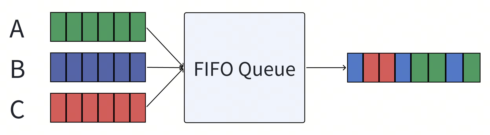
由于调度只是简单的将入队位置忠实的反应出来，所以最终我们看到的调度结果受非常多因素影响，比如：
- 锁竞争时的唤醒顺序。
- 用户请求调用并发度。
- 权重插队。 所以导致我们最终的调度结果完全不满足多租环境下的公平性。
User Round-Robin Queue
为了解决这种完全不可控的场景，最简单的方案是引入一个轮询机制。
- 每个用户单独维护一个队列。
- Scheduler依照顺序依次轮询每个队列，并取出一个请求作为下一个请求。

可以看到出队顺序确实更加公平了，但是如果每个请求的开销并不那么一致呢？

- 用户A发出的请求需要两倍于B和C的时间。
- 最终的调度结果导致A占用了50%的资源，而B和C只能占用25%。
GPS（generalized processor sharing）
GPS（generalized processor sharing）是一个理想的公平调度模型，可以理解成流式的，任意的任意大小的时间间隔内，服务方都按照权重公平的进行资源占用。
- 如下图，S1这个租户占用0.5的权重，其他10个用户分别占用0.05的权重。理想的GPS服务如右图所示。
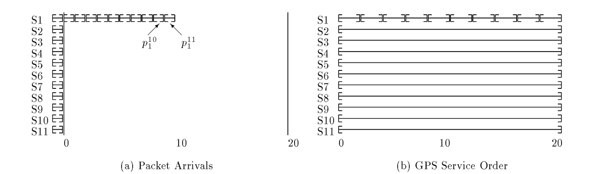
但是真实世界中，请求都是有最小不可分割的大小，而且过小的请求粒度对系统会造成额外的上下文切换成本。因此公平调度是尽可能逼近GPS模型，在尽可能小的粒度上公平。
Fair Queuing(FQ)
为了要达成公平，就必须区分每个请求的开销：
- 引入一个虚拟时钟来标识每个请求的消耗（比如请求的包体大小或者请求耗时等，核心是开发者希望在哪个层面上达到公平）。
- 同时系统按照自己预估负载能力向前推动时钟（类似于令牌桶，可以是承载的流量大小，CPU周期等等）。
- 并按照以下规则给所有入队的消息标识标记上如下属性。
- $A_f^j$：租户f 第j个到达的请求的到达对应的虚拟时钟时间。
- $L_f^j$：租户f 第j个到达请求的资源消耗大小。
- $S_f^j=max(A_f^j, F_f^{j-1})$：租户f 第j个请求的启动虚拟时钟时间。
- 可以看出当$S_f^j=F_f^{j-1}$时：队列出现了积压。
- $F_f^j=S_f^j + L_f^j$：租户f 第j个请求预计的完成虚拟时钟时间。
- 调度器按照$F_f^j$的从小到大的顺序出队。
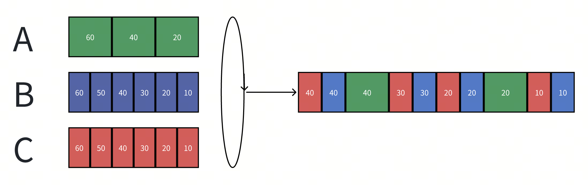
- 最终，按长期的平均下来，A/B/C分别占用33%的资源。
Weighted Fair Queuing (WFQ)
更进一步，如果我们希望不同的租户具备不同的调度权重呢？我们只需要在$F_f^j$中引入调权因子$W_f$。
- $F_f^j=max(A_f^j, F_f^{j-1}) + L_f^j/W_f$ 在上面的Case中，如果我们将B租户增加两倍权重：
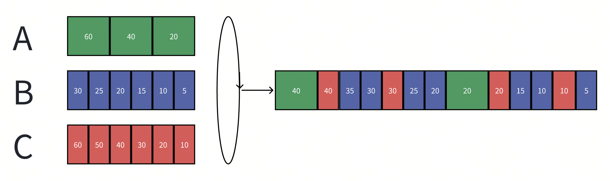
就可以达到B用户占用50%资源，而A/C用户各占用25%资源了。
Worst-Case Fair Weighted Fair Queuing (WF²Q)
WF²Q是WFQ的拓展版本，用于解决极端情况下的不公平，由于WFQ引入了权重，$F_f^j$不再能反应真实的请求结束时间，重新考虑GPS的场景：
- 由于S1的10倍权重占用，导致S1的前9个请求的$F_f^j$都小于其他租户同时到达的$F_f^j$，WFQ最终会调度出后面这个结果：其他租户的响应时间都增加了10倍。
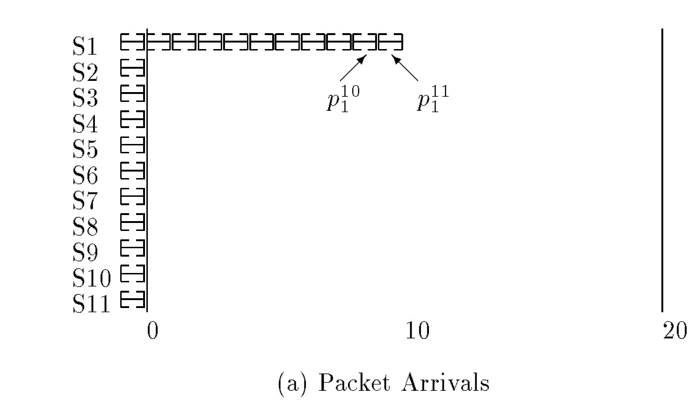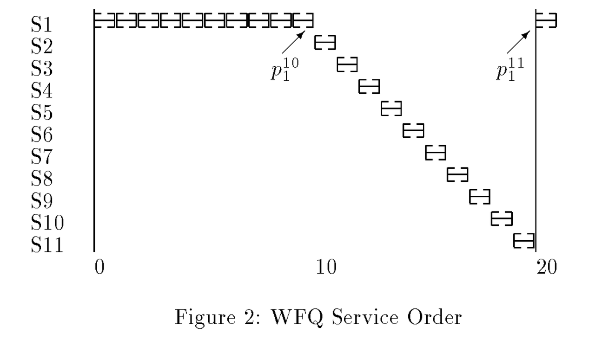
WF²Q为了解决这个问题，添加出队约束：
- 只有当$S_f^j \le V_{now}$时，才允许这个任务被调度。
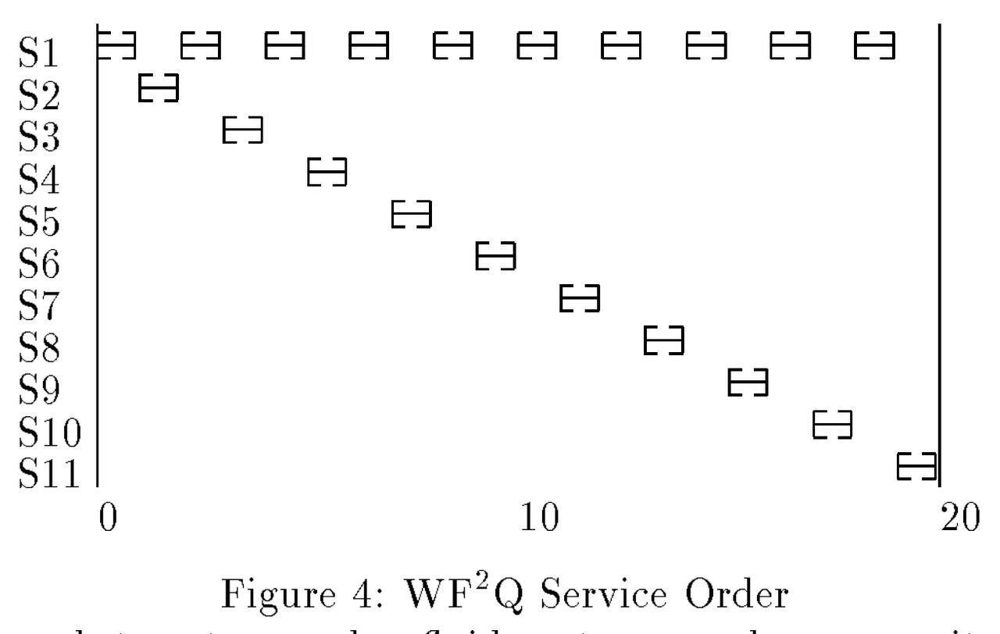
相较于WFQ，WF²Q的结果更加接近于GPS模型，在更小的粒度上实现了公平。
WFQ在多租场景中应用的挑战
上面的方案貌似让我们找到了完美的解决方案，但是在实际的多租场景中，直接应用WFQ依旧有不小的挑战。
并发
Scheduler的下游是一般是一个并发单元，可以并行处理多个任务。（WFQ这类算法一般都是为了串行调度设计的，如网络连接层的包转发，对并发场景的新问题并没有特别的优化），我们拓展一下上面的实验：
- A和B两个租户一直在发小的请求；C和D两个租户一直在发高耗时的请求。
- W1和W2分别是系统中的两个并发单元。 如果直接使用WFQ，我们会得到如下的调度结果：
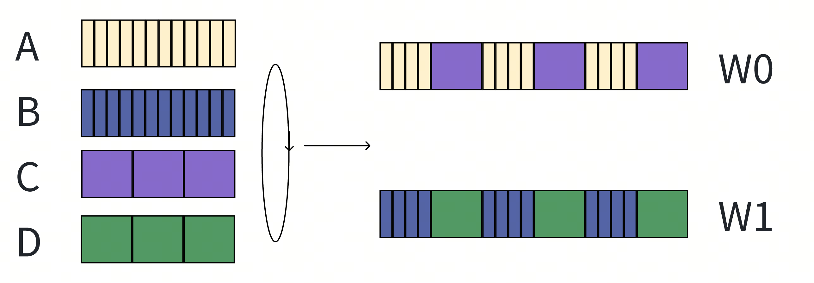
- A和B用户的请求，会被C和D用户的请求Block，从而观察到请求响应的剧烈波动，称之为bursty schedule。
在无并发的场景下，我们无法做更深入的优化，但是在并发的场景下，我们有如下的优化空间：
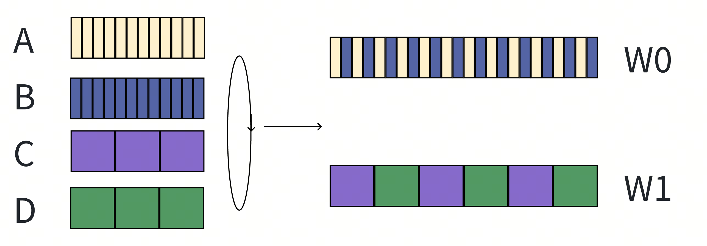
- 耗时小和耗时大的请求会分别在两个并发单元中调度，从而彼此观察到的响应波动的比例大幅度缩减，称之为smooth schedule。
请求开销的浮动易变（方差极大）
不同租户的不同请求的资源开销与耗时跨度极大（可能是3-4个数量级的差距，） 如图是论文作者在Azure Storage多租服务上的统计：
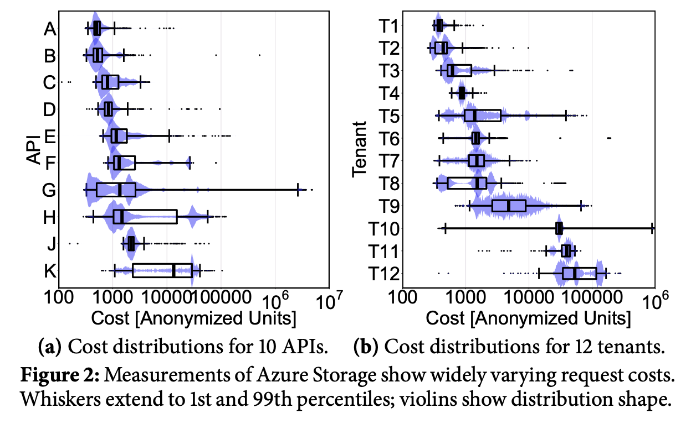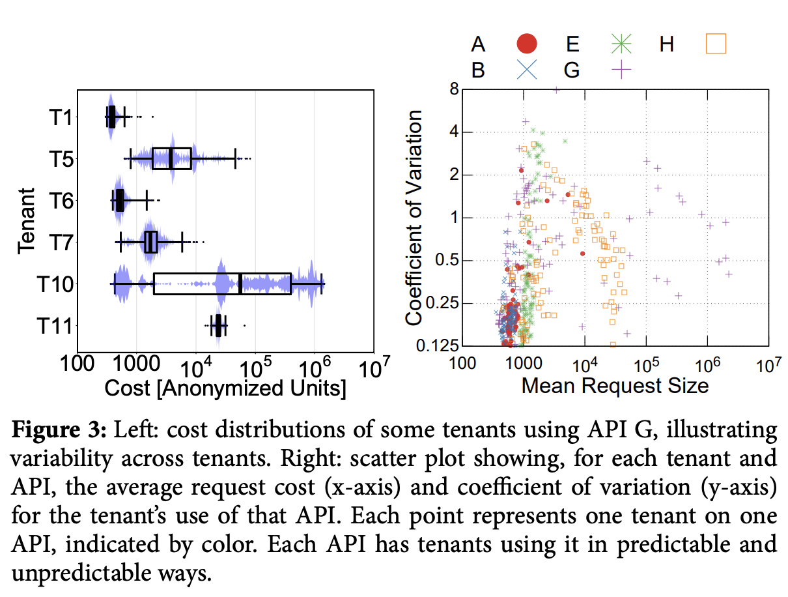
浮动越大（方差越大），越容易让调度器调度出bursty schedule。
未知的资源开销
用户请求的资源开销和耗时难以预测，并且绝大多数请求都是不可预测的（如图是论文作者在Azure Storage上统计的某个API的开销，可以看到标准差极大）。 由于资源开销未知，我们就必须引入一个模型或者规则去估计资源开销来达成公平调度。一旦我们错误的低估了一些请求的开销，将会导致这些请求block住整个调度系统，造成低开销的请求饥饿，造成bursty schedule。
Two dimension Fair Queuing
2DFQ
WFQ不能实现平滑调度的核心原因是所有并发单元都是平等的，因此租户的任务总是可以阻塞住任意一个并发单元，当所有并发单元都被高消耗的任务阻塞住时，调度就不再平滑了。而2DFQ的思路就是让工作线程之间分个等级，部分工作线程负载调度高耗时的任务，剩余的线程负责调度低消耗的任务，从而让调度变得平滑。
2DFQ在WF²Q上进一步修改约束：
- 有$n$个并发工作单元，并且按固定下标$W_0,W_1,...W_{n-1}$排列。
- 在$W_i$上，只有当$S_f^j \le V_{now}-L_f^j \times \frac{i}{n}$时，才允许这个任务被调度。
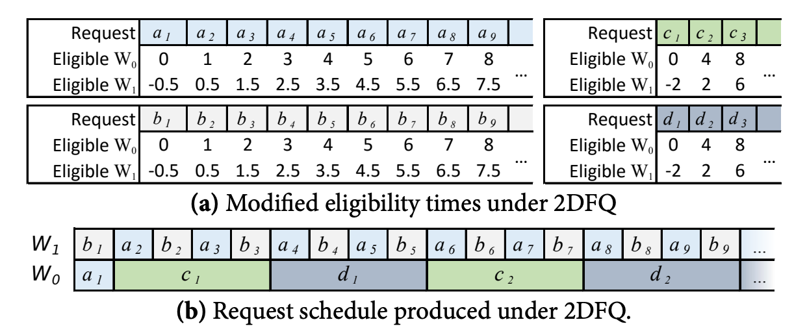
- $W_0$这个并发单元的行为和WF²Q是完全一致的，所以他不会区分高开销和低开销任务。
- $W_1$这个并发单元会倾向于调度低耗时任务，因为它们的允许调度的阈值更小。
With Evaluation (2DFQ^e)
2DFQ优化了平滑调度的问题，但是还有另一个挑战就是我们总是无法合理的估计一个请求对应的资源开销。 一般都是通过历史某个时间窗口的请求记录来调整这个估计值，但是在特定的用户调用顺序下，极易出现错误的估计造成bursty schedule。
Bookkeeping: Retroactive Charging
在2DFQ和WFQ中，我们使用 $F_f^j=max(A_f^j, F_f^{j-1}) + L_f^j/W_f$计算一个请求的完成虚拟时钟时间。在未知资源开销的情况下，调整如下定义：
- $L_f^j$：租户f在第j次请求时的估算资源开销。
- $C_f^j$：租户f在第j次请求时的实际资源开销。
- 如果$C_f^j>L_f^j$，系统需要额外计算开销，否则系统需要返回给租户未使用的开销，即租户后续任务的开始与结束时间都调整$(C_f^j-L_f^j)/W_f$。
Pessimistic Cost Estimation
在2DFQ中，
- 如果高估了任务开销$C_f^j<L_f^j$：则低开销任务会从低耗时任务工作线程转移到高耗时工作线程，只会影响当前任务的响应速度，而不会影响其他低开销存量任务的响应速度。
- 如果低估了任务开销$C_f^j<L_f^j$：则高开销任务会从高耗时任务工作线程转移到低耗时工作线程，会影响其他低开销存量任务的响应速度。
所以2DFQ^e采用悲观开销预估：
- 租户对应的某类请求总是维护一个最高开销值，$L_f^{max}$作为未知请求的开销预估。
- 在Bookkeeping时，
- 如果$C_f^j>L_f^{max}$，则$L_f^{max}=C_f^j$。
- 否则，$L_f^{max}= \alpha L_f^{max}, \alpha<1$。 变量α用于控制悲观估计的收敛的激进程度，这个值必须是一个比较靠近1的值。
- α越接近1，收敛越慢，越不容易产生bursty schedule，但是当前租户的响应耗时恢复会偏长。
- 否则，容易产生bursty schedule，当前租户的响应耗时恢复会更短。
Bookkeeping: Refresh Charging
当一个租户长时间发出低开销请求时，$L_f^{max}$会是一个低估值，如果用户切换到高开销请求的状态时，如果并发度过高，还是会导致bursty schedule。
- 原论文给出方案是定时刷新，让估计重回到悲观状态，比如10ms一次。
- 我觉得高开销任务可以通过定时器触发感知，而不需要定时刷新。
Limitation
以上的调度器都是针对 work-conserving 系统描述的效果。
- work-conserving：系统的所有工作单元（Thread）总是在工作，只要调度器内有在等待的任务。（充分利用资源）
- non-work-conserving：系统的所有工作单元不总是在工作，可能会休息一段时间，等待任务积压调度。（允许资源浪费）
因此这类调度器都只能在work-conserving系统出现积压backlogged的时候生效，在一个系统资源未打满的环境中，调度策略都会退化，不生效。